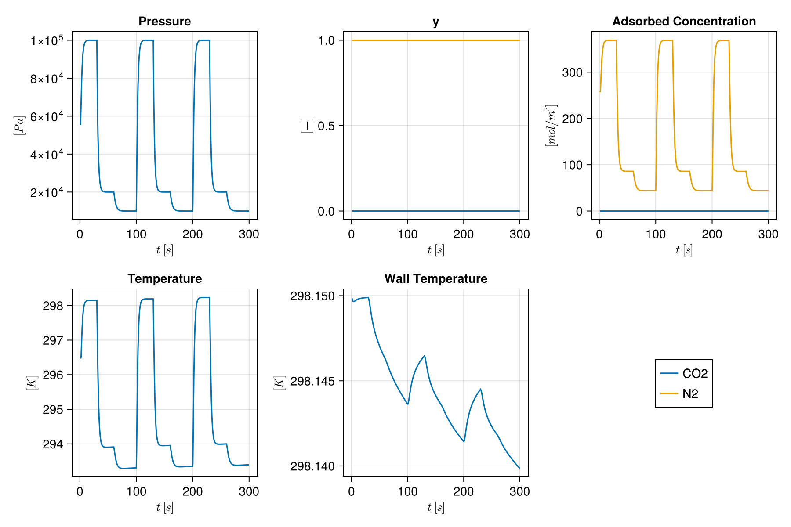
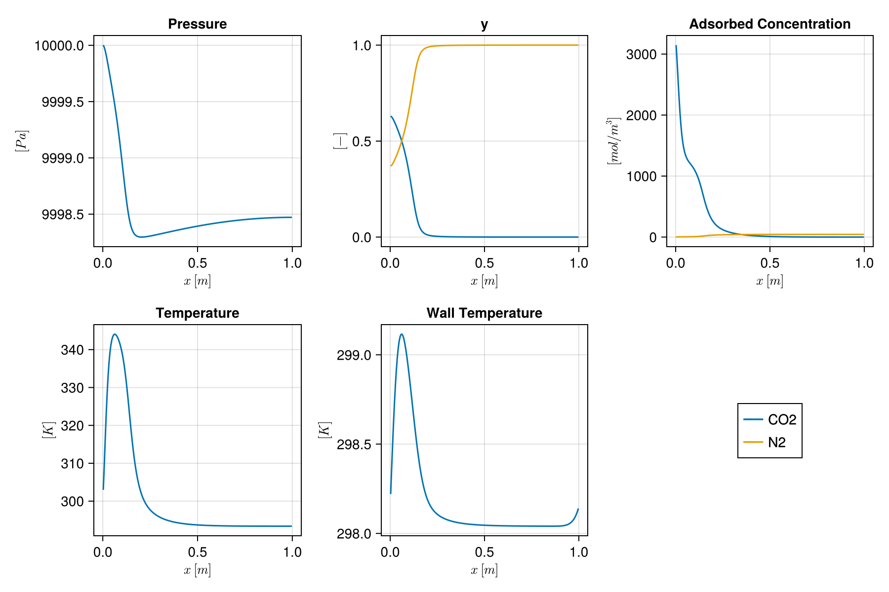
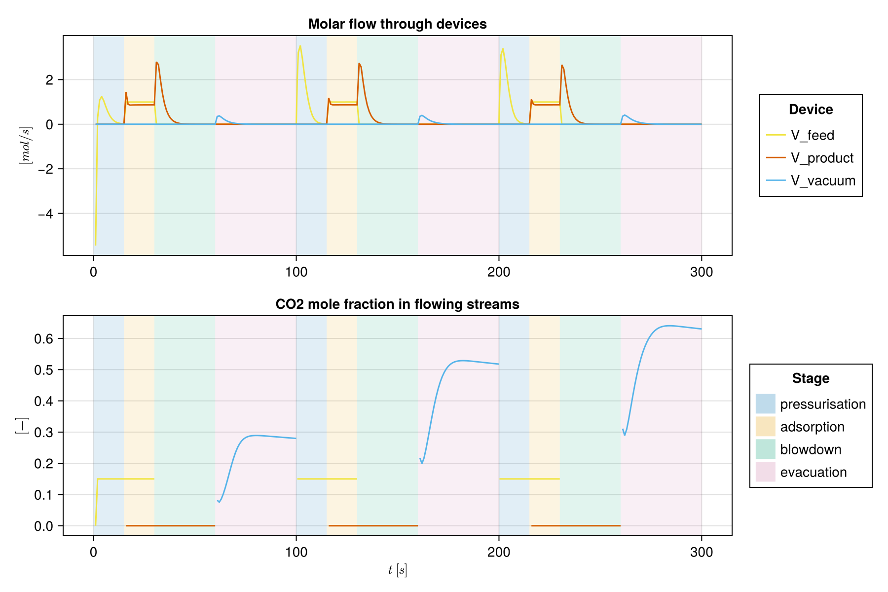
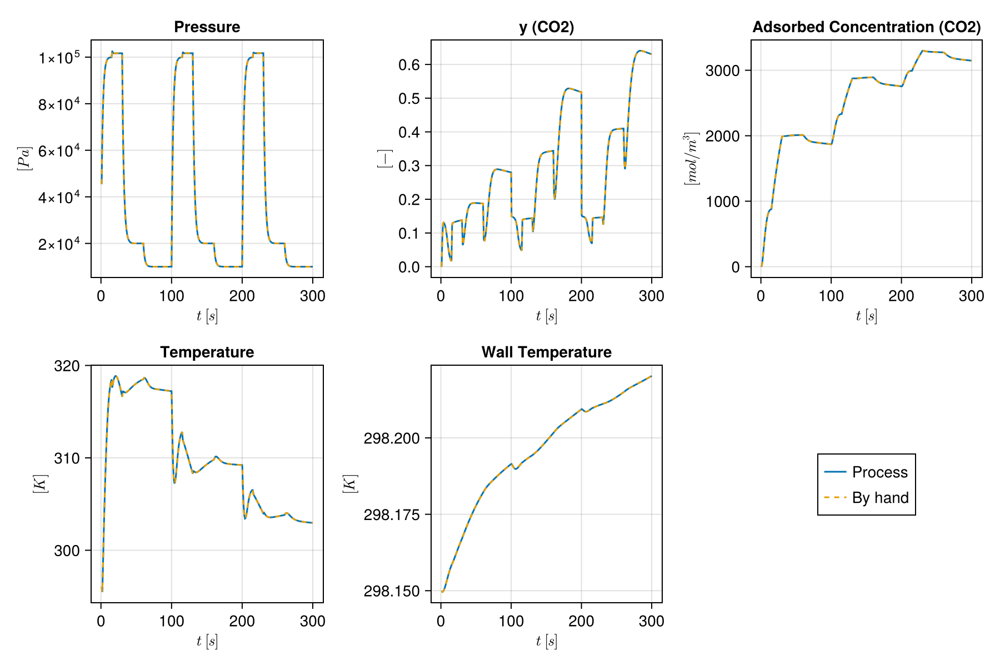
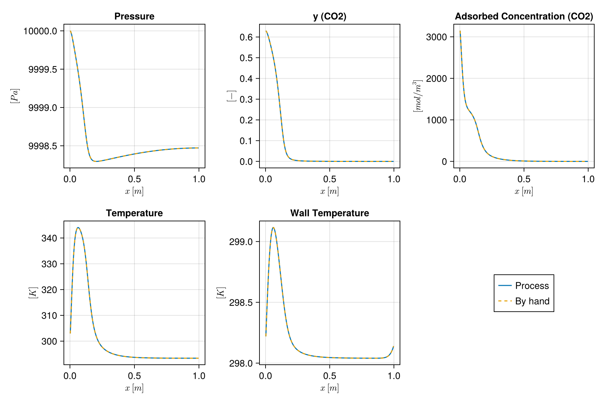

Cyclic VSA as a flowsheet
This example looks inside the four-stage vacuum swing adsorption (VSA) cycle of Haghpanah et al. (2013) as a flowsheet of connected units, and then builds the same flowsheet by hand from the layer underneath. A fixed bed is connected to three flow devices:
feed ──V_feed──┐ ┌──V_product── raffinate
bottom Bed top
extract ──V_vacuum──┘Each stage of the cycle is a set of device settings (valve open or closed, flow controller rate, boundary pressure profile). Nothing inside the bed changes between stages, so the same bed model can be wired into larger flowsheets, such as several beds sharing equalisation lines.
import Mocca
using Mocca.Units1. The process
four_stage_vsa_process builds the flowsheet and its cycle of steps; the cyclic VSA example builds the same from its parts. The run uses steps of 1 s and starts from nitrogen at 1 bar.
ncells = 200
process = Mocca.four_stage_vsa_process(ncells = ncells, timestepping = Mocca.TimeStepping(max_dt = 1.0, first_dt = 1.0),
initial_state = Dict(:Bed => (pressure = 1bar,)))Process four-stage VSA: CO2/N2 feed at 1.0 bar, 298.15 K, capturing CO2
Bed: fixed bed of zeolite 13X, 200 cells
bottom V_feed (feed), from boundary at 1.0 bar; V_vacuum (extract), to boundary at 0.1 bar
top V_product (product), to boundary at 1.0 bar
cycle of 4 stages, 100.0 s:
pressurisation 15.0 s V_feed
adsorption 15.0 s V_feed, V_product
blowdown 30.0 s V_product
evacuation 40.0 s V_vacuum
The steps compile into stages, each a set of device settings:
for st in Mocca.stages(process)
println(st.name, " (", st.duration, " s): ")
for (d, s) in st.settings
println(" ", d, " => ", s)
end
endpressurisation (15.0 s):
V_feed => (law = LinearValve{Float64}(0.005191703919295869, 1.0), inlet = PortCondition{ExponentialRamp{Float64}, Float64, Vector{Float64}}(ExponentialRamp{Float64}(10000.0, 100000.0, 0.5, 0.0), 298.15, [0.15, 0.85]))
adsorption (15.0 s):
V_feed => (law = VolumetricFlow{Float64}(0.02427097880189376), inlet = PortCondition{Float64, Float64, Vector{Float64}}(100000.0, 298.15, [0.15, 0.85]))
V_product => (law = LinearValve{Float64}(0.005191703919295869, 1.0), outlet = PortCondition{Float64, Float64, Vector{Float64}}(100000.0, 298.15, [1.0e-10, 0.9999999999]))
blowdown (30.0 s):
V_product => (law = LinearValve{Float64}(0.005191703919295869, 1.0), outlet = PortCondition{ExponentialRamp{Float64}, Float64, Vector{Float64}}(ExponentialRamp{Float64}(100000.0, 20000.0, 0.5, 0.0), 298.15, [1.0e-10, 0.9999999999]))
evacuation (40.0 s):
V_vacuum => (law = LinearValve{Float64}(0.005191703919295869, 1.0), outlet = PortCondition{ExponentialRamp{Float64}, Float64, Vector{Float64}}(ExponentialRamp{Float64}(20000.0, 10000.0, 0.5, 0.0), 298.15, [0.15, 0.85]))2. Simulate
result = Mocca.simulate(process; cycles = 3, info_level = 0)Mocca.ProcessResult(Process("four-stage VSA", Flowsheet(UnitNetwork(Dict{Symbol, Jutul.SimulationModel{<:Any, <:MoccaSystem, <:Any, <:Any}}(:V_vacuum => Jutul.SimulationModel{Jutul.DiscretizedDomain{Jutul.CartesianMesh{Tuple{Int64, Int64, Int64}, Tuple{Float64, Float64, Float64}, Vector{Float64}, Jutul.MeshEntityTags{Int64}}, Nothing, Dict{Jutul.JutulEntity, Int64}, Jutul.TrivialGlobalMap}, FlowDevice, Jutul.FullyImplicitFormulation, Jutul.DefaultContext, Jutul.DataDomain{Jutul.CartesianMesh{Tuple{Int64, Int64, Int64}, Tuple{Float64, Float64, Float64}, Vector{Float64}, Jutul.MeshEntityTags{Int64}}, Dict{Jutul.JutulEntity, Int64}, OrderedCollections.OrderedDict{Symbol, Any}}, OrderedCollections.OrderedDict{Symbol, Jutul.JutulVariables}, OrderedCollections.OrderedDict{Symbol, Jutul.JutulVariables}, OrderedCollections.OrderedDict{Symbol, Jutul.JutulVariables}, OrderedCollections.OrderedDict{Symbol, Jutul.JutulEquation}, Vector{Symbol}, OrderedCollections.OrderedDict{Symbol, Any}}(DiscretizedDomain with CartesianMesh (3D) with 1x1x1=1 cells
, FlowDevice(["CO2", "N2"]), Jutul.DefaultContext(Jutul.EquationMajorLayout(false), 9223372036854775807, 1), Jutul.FullyImplicitFormulation(), Jutul.DataDomain{Jutul.CartesianMesh{Tuple{Int64, Int64, Int64}, Tuple{Float64, Float64, Float64}, Vector{Float64}, Jutul.MeshEntityTags{Int64}}, Dict{Jutul.JutulEntity, Int64}, OrderedCollections.OrderedDict{Symbol, Any}}(CartesianMesh (3D) with 1x1x1=1 cells, Dict{Jutul.JutulEntity, Int64}(Jutul.NoEntity() => 1, Jutul.Cells() => 1, Jutul.BoundaryFaces() => 6, Jutul.Faces() => 0, Jutul.HalfFaces() => 0, Unit() => 1), OrderedCollections.OrderedDict{Symbol, Any}(:neighbors => (Matrix{Int64}(undef, 2, 0), Jutul.Faces()), :areas => (Float64[], Jutul.Faces()), :normals => (Matrix{Float64}(undef, 3, 0), Jutul.Faces()), :face_centroids => (Matrix{Float64}(undef, 3, 0), Jutul.Faces()), :cell_centroids => ([0.5; 0.5; 0.5;;], Jutul.Cells()), :volumes => ([1.0], Jutul.Cells()), :half_face_cells => (Int64[], Jutul.HalfFaces()), :half_face_faces => (Int64[], Jutul.HalfFaces()), :boundary_areas => ([1.0, 1.0, 1.0, 1.0, 1.0, 1.0], Jutul.BoundaryFaces()), :boundary_centroids => ([0.0 1.0 … 0.5 0.5; 0.5 0.5 … 0.5 0.5; 0.5 0.5 … 0.0 1.0], Jutul.BoundaryFaces())…)), OrderedCollections.OrderedDict{Symbol, Jutul.JutulVariables}(:InletPressure => Mocca.Pressure(1000.0, Inf, Inf, 100000.0), :InletTemperature => Mocca.Temperature(200.0, Inf, Inf), :InletComposition => Mocca.GasMoleFractions(Inf), :OutletPressure => Mocca.Pressure(1000.0, Inf, Inf, 100000.0), :OutletTemperature => Mocca.Temperature(200.0, Inf, Inf), :OutletComposition => Mocca.GasMoleFractions(Inf), :MolarFlow => Mocca.DeviceMolarFlow()), OrderedCollections.OrderedDict{Symbol, Jutul.JutulVariables}(), OrderedCollections.OrderedDict{Symbol, Jutul.JutulVariables}(), OrderedCollections.OrderedDict{Symbol, Jutul.JutulEquation}(:inlet_state => Mocca.PortStateEquation{1}(), :outlet_state => Mocca.PortStateEquation{2}(), :device_law => Mocca.DeviceLawEquation()), [:InletPressure, :InletTemperature, :InletComposition, :OutletPressure, :OutletTemperature, :OutletComposition, :MolarFlow], OrderedCollections.OrderedDict{Symbol, Any}(), 1), :Bed => Jutul.SimulationModel{Jutul.DiscretizedDomain{Jutul.CartesianMesh{Tuple{Int64, Int64, Int64}, Tuple{Float64, Float64, Float64}, Vector{Float64}, Jutul.MeshEntityTags{Int64}}, @NamedTuple{mass_flow::Jutul.PotentialFlow{:generic, Vector{Jutul.TPFA{Int64}}, Vector{Jutul.SPU{Int64}}, @NamedTuple{cells::Vector{Int64}, faces::Vector{Int64}, face_pos::Vector{Int64}, face_sign::Vector{Int64}}}}, Dict{Jutul.JutulEntity, Int64}, Jutul.TrivialGlobalMap}, FixedBed{2, Float64, DualSiteLangmuir{2, Float64}, LinearDrivingForce{Float64, Float64}, WithWall}, Jutul.FullyImplicitFormulation, Jutul.DefaultContext, Jutul.DataDomain{Jutul.CartesianMesh{Tuple{Int64, Int64, Int64}, Tuple{Float64, Float64, Float64}, Vector{Float64}, Jutul.MeshEntityTags{Int64}}, Dict{Jutul.JutulEntity, Int64}, OrderedCollections.OrderedDict{Symbol, Any}}, OrderedCollections.OrderedDict{Symbol, Jutul.JutulVariables}, OrderedCollections.OrderedDict{Symbol, Jutul.JutulVariables}, OrderedCollections.OrderedDict{Symbol, Jutul.JutulVariables}, OrderedCollections.OrderedDict{Symbol, Jutul.JutulEquation}, Vector{Symbol}, OrderedCollections.OrderedDict{Symbol, Any}}(DiscretizedDomain with CartesianMesh (3D) with 200x1x1=200 cells and discretizations for mass_flow
, FixedBed{2, Float64, DualSiteLangmuir{2, Float64}, LinearDrivingForce{Float64, Float64}, WithWall}(["CO2", "N2"], [0.04401, 0.028], [697.5687, 1096.4], [697.5687, 1096.4], DualSiteLangmuir{2, Float64}([3489.44, 6613.551], [8.65e-7, 2.5e-6], [-36641.21, -15800.0], [2872.35, 0.0], [2.63e-8, 0.0], [-35690.66, 0.0], [-38690.992593180876, -18278.95618937]), LinearDrivingForce{Float64, Float64}(1.6e-5, 3.0, 0.35, 0.002), WithWall()), Jutul.DefaultContext(Jutul.EquationMajorLayout(false), 9223372036854775807, 1), Jutul.FullyImplicitFormulation(), Jutul.DataDomain{Jutul.CartesianMesh{Tuple{Int64, Int64, Int64}, Tuple{Float64, Float64, Float64}, Vector{Float64}, Jutul.MeshEntityTags{Int64}}, Dict{Jutul.JutulEntity, Int64}, OrderedCollections.OrderedDict{Symbol, Any}}(CartesianMesh (3D) with 200x1x1=200 cells, Dict{Jutul.JutulEntity, Int64}(Jutul.NoEntity() => 1, Jutul.Cells() => 200, Jutul.BoundaryFaces() => 802, Jutul.Faces() => 199, Jutul.HalfFaces() => 398, Unit() => 1), OrderedCollections.OrderedDict{Symbol, Any}(:porosity => ([0.37, 0.37, 0.37, 0.37, 0.37, 0.37, 0.37, 0.37, 0.37, 0.37 … 0.37, 0.37, 0.37, 0.37, 0.37, 0.37, 0.37, 0.37, 0.37, 0.37], Jutul.Cells()), :permeability => ([3.403241790543378e-9, 3.403241790543378e-9, 3.403241790543378e-9, 3.403241790543378e-9, 3.403241790543378e-9, 3.403241790543378e-9, 3.403241790543378e-9, 3.403241790543378e-9, 3.403241790543378e-9, 3.403241790543378e-9 … 3.403241790543378e-9, 3.403241790543378e-9, 3.403241790543378e-9, 3.403241790543378e-9, 3.403241790543378e-9, 3.403241790543378e-9, 3.403241790543378e-9, 3.403241790543378e-9, 3.403241790543378e-9, 3.403241790543378e-9], Jutul.Cells()), :neighbors => ([1 2 … 198 199; 2 3 … 199 200], Jutul.Faces()), :areas => ([0.06559724000511828, 0.06559724000511828, 0.06559724000511828, 0.06559724000511828, 0.06559724000511828, 0.06559724000511828, 0.06559724000511828, 0.06559724000511828, 0.06559724000511828, 0.06559724000511828 … 0.06559724000511828, 0.06559724000511828, 0.06559724000511828, 0.06559724000511828, 0.06559724000511828, 0.06559724000511828, 0.06559724000511828, 0.06559724000511828, 0.06559724000511828, 0.06559724000511828], Jutul.Faces()), :normals => ([1.0 1.0 … 1.0 1.0; 0.0 0.0 … 0.0 0.0; 0.0 0.0 … 0.0 0.0], Jutul.Faces()), :face_centroids => ([0.005 0.01 … 0.9899999999999999 0.9949999999999999; 0.12805979072792353 0.12805979072792353 … 0.12805979072792353 0.12805979072792353; 0.12805979072792353 0.12805979072792353 … 0.12805979072792353 0.12805979072792353], Jutul.Faces()), :cell_centroids => ([0.0025 0.0075 … 0.9924999999999999 0.9974999999999999; 0.12805979072792353 0.12805979072792353 … 0.12805979072792353 0.12805979072792353; 0.12805979072792353 0.12805979072792353 … 0.12805979072792353 0.12805979072792353], Jutul.Cells()), :volumes => ([0.0003279862000255914, 0.0003279862000255914, 0.0003279862000255914, 0.0003279862000255914, 0.0003279862000255914, 0.0003279862000255914, 0.0003279862000255914, 0.0003279862000255914, 0.0003279862000255914, 0.0003279862000255914 … 0.0003279862000255914, 0.0003279862000255914, 0.0003279862000255914, 0.0003279862000255914, 0.0003279862000255914, 0.0003279862000255914, 0.0003279862000255914, 0.0003279862000255914, 0.0003279862000255914, 0.0003279862000255914], Jutul.Cells()), :half_face_cells => ([1, 2, 2, 3, 3, 4, 4, 5, 5, 6 … 195, 196, 196, 197, 197, 198, 198, 199, 199, 200], Jutul.HalfFaces()), :half_face_faces => ([1, 1, 2, 2, 3, 3, 4, 4, 5, 5 … 195, 195, 196, 196, 197, 197, 198, 198, 199, 199], Jutul.HalfFaces())…)), OrderedCollections.OrderedDict{Symbol, Jutul.JutulVariables}(:Pressure => Mocca.Pressure(1000.0, Inf, 0.2, 100000.0), :y => Mocca.GasMoleFractions(0.2), :AdsorbedConcentration => Mocca.AdsorbedConcentration(), :Temperature => Mocca.Temperature(200.0, Inf, 0.2), :WallTemperature => Mocca.Temperature(200.0, Inf, 0.2)), OrderedCollections.OrderedDict{Symbol, Jutul.JutulVariables}(:TotalMolarConcentration => Mocca.TotalMolarConcentration(), :MolarConcentration => Mocca.MolarConcentration(), :AverageMolarMass => Mocca.AverageMolarMass(), :ComponentMasses => Mocca.ComponentMasses(), :AdsorptionMassTransfer => Mocca.AdsorptionMassTransfer(), :AdsorbedLoading => Mocca.AdsorbedLoading(), :ColumnConservedEnergy => Mocca.ColumnEnergy(), :ConservedPressure => Mocca.ConservedPressure(), :WallConservedEnergy => Mocca.WallEnergy(), :ΔH => Mocca.EnthalpyChange()…), OrderedCollections.OrderedDict{Symbol, Jutul.JutulVariables}(:Transmissibilities => Mocca.Transmissibilities(), :SolidVolume => Mocca.BulkVolume(), :FluidVolume => Mocca.FluidVolume(), :WallAreaOut => Mocca.WallArea{:out}(), :WallAreaIn => Mocca.WallArea{:in}(), :CellDx => Mocca.CellDx(), :Permeability => Mocca.Permeability(), :ThermalConductivities => Mocca.ThermalConductivities(), :DispersionTransmissibilities => Mocca.DispersionTransmissibilities(), :AxialDispersion => Mocca.AxialDispersion()…), OrderedCollections.OrderedDict{Symbol, Jutul.JutulEquation}(:mass_conservation => Jutul.ConservationLaw{:ComponentMasses, Jutul.PotentialFlow{:generic, Vector{Jutul.TPFA{Int64}}, Vector{Jutul.SPU{Int64}}, @NamedTuple{cells::Vector{Int64}, faces::Vector{Int64}, face_pos::Vector{Int64}, face_sign::Vector{Int64}}}, Jutul.DefaultFlux, 2}(Jutul.PotentialFlow{:generic, Vector{Jutul.TPFA{Int64}}, Vector{Jutul.SPU{Int64}}, @NamedTuple{cells::Vector{Int64}, faces::Vector{Int64}, face_pos::Vector{Int64}, face_sign::Vector{Int64}}}(Jutul.TPFA{Int64}[Jutul.TPFA{Int64}(1, 2, 1), Jutul.TPFA{Int64}(2, 3, 1), Jutul.TPFA{Int64}(3, 4, 1), Jutul.TPFA{Int64}(4, 5, 1), Jutul.TPFA{Int64}(5, 6, 1), Jutul.TPFA{Int64}(6, 7, 1), Jutul.TPFA{Int64}(7, 8, 1), Jutul.TPFA{Int64}(8, 9, 1), Jutul.TPFA{Int64}(9, 10, 1), Jutul.TPFA{Int64}(10, 11, 1) … Jutul.TPFA{Int64}(190, 191, 1), Jutul.TPFA{Int64}(191, 192, 1), Jutul.TPFA{Int64}(192, 193, 1), Jutul.TPFA{Int64}(193, 194, 1), Jutul.TPFA{Int64}(194, 195, 1), Jutul.TPFA{Int64}(195, 196, 1), Jutul.TPFA{Int64}(196, 197, 1), Jutul.TPFA{Int64}(197, 198, 1), Jutul.TPFA{Int64}(198, 199, 1), Jutul.TPFA{Int64}(199, 200, 1)], Jutul.SPU{Int64}[Jutul.SPU{Int64}(1, 2), Jutul.SPU{Int64}(2, 3), Jutul.SPU{Int64}(3, 4), Jutul.SPU{Int64}(4, 5), Jutul.SPU{Int64}(5, 6), Jutul.SPU{Int64}(6, 7), Jutul.SPU{Int64}(7, 8), Jutul.SPU{Int64}(8, 9), Jutul.SPU{Int64}(9, 10), Jutul.SPU{Int64}(10, 11) … Jutul.SPU{Int64}(190, 191), Jutul.SPU{Int64}(191, 192), Jutul.SPU{Int64}(192, 193), Jutul.SPU{Int64}(193, 194), Jutul.SPU{Int64}(194, 195), Jutul.SPU{Int64}(195, 196), Jutul.SPU{Int64}(196, 197), Jutul.SPU{Int64}(197, 198), Jutul.SPU{Int64}(198, 199), Jutul.SPU{Int64}(199, 200)], (cells = [2, 1, 3, 2, 4, 3, 5, 4, 6, 5 … 196, 195, 197, 196, 198, 197, 199, 198, 200, 199], faces = [1, 1, 2, 2, 3, 3, 4, 4, 5, 5 … 195, 195, 196, 196, 197, 197, 198, 198, 199, 199], face_pos = [1, 2, 4, 6, 8, 10, 12, 14, 16, 18 … 382, 384, 386, 388, 390, 392, 394, 396, 398, 399], face_sign = [1, -1, 1, -1, 1, -1, 1, -1, 1, -1 … 1, -1, 1, -1, 1, -1, 1, -1, 1, -1])), Jutul.DefaultFlux()), :mass_transfer => Jutul.ConservationLaw{:AdsorbedLoading, Jutul.PotentialFlow{:generic, Vector{Jutul.TPFA{Int64}}, Vector{Jutul.SPU{Int64}}, @NamedTuple{cells::Vector{Int64}, faces::Vector{Int64}, face_pos::Vector{Int64}, face_sign::Vector{Int64}}}, Jutul.DefaultFlux, 2}(Jutul.PotentialFlow{:generic, Vector{Jutul.TPFA{Int64}}, Vector{Jutul.SPU{Int64}}, @NamedTuple{cells::Vector{Int64}, faces::Vector{Int64}, face_pos::Vector{Int64}, face_sign::Vector{Int64}}}(Jutul.TPFA{Int64}[Jutul.TPFA{Int64}(1, 2, 1), Jutul.TPFA{Int64}(2, 3, 1), Jutul.TPFA{Int64}(3, 4, 1), Jutul.TPFA{Int64}(4, 5, 1), Jutul.TPFA{Int64}(5, 6, 1), Jutul.TPFA{Int64}(6, 7, 1), Jutul.TPFA{Int64}(7, 8, 1), Jutul.TPFA{Int64}(8, 9, 1), Jutul.TPFA{Int64}(9, 10, 1), Jutul.TPFA{Int64}(10, 11, 1) … Jutul.TPFA{Int64}(190, 191, 1), Jutul.TPFA{Int64}(191, 192, 1), Jutul.TPFA{Int64}(192, 193, 1), Jutul.TPFA{Int64}(193, 194, 1), Jutul.TPFA{Int64}(194, 195, 1), Jutul.TPFA{Int64}(195, 196, 1), Jutul.TPFA{Int64}(196, 197, 1), Jutul.TPFA{Int64}(197, 198, 1), Jutul.TPFA{Int64}(198, 199, 1), Jutul.TPFA{Int64}(199, 200, 1)], Jutul.SPU{Int64}[Jutul.SPU{Int64}(1, 2), Jutul.SPU{Int64}(2, 3), Jutul.SPU{Int64}(3, 4), Jutul.SPU{Int64}(4, 5), Jutul.SPU{Int64}(5, 6), Jutul.SPU{Int64}(6, 7), Jutul.SPU{Int64}(7, 8), Jutul.SPU{Int64}(8, 9), Jutul.SPU{Int64}(9, 10), Jutul.SPU{Int64}(10, 11) … Jutul.SPU{Int64}(190, 191), Jutul.SPU{Int64}(191, 192), Jutul.SPU{Int64}(192, 193), Jutul.SPU{Int64}(193, 194), Jutul.SPU{Int64}(194, 195), Jutul.SPU{Int64}(195, 196), Jutul.SPU{Int64}(196, 197), Jutul.SPU{Int64}(197, 198), Jutul.SPU{Int64}(198, 199), Jutul.SPU{Int64}(199, 200)], (cells = [2, 1, 3, 2, 4, 3, 5, 4, 6, 5 … 196, 195, 197, 196, 198, 197, 199, 198, 200, 199], faces = [1, 1, 2, 2, 3, 3, 4, 4, 5, 5 … 195, 195, 196, 196, 197, 197, 198, 198, 199, 199], face_pos = [1, 2, 4, 6, 8, 10, 12, 14, 16, 18 … 382, 384, 386, 388, 390, 392, 394, 396, 398, 399], face_sign = [1, -1, 1, -1, 1, -1, 1, -1, 1, -1 … 1, -1, 1, -1, 1, -1, 1, -1, 1, -1])), Jutul.DefaultFlux()), :energy_column => Jutul.ConservationLaw{:ColumnConservedEnergy, Jutul.PotentialFlow{:generic, Vector{Jutul.TPFA{Int64}}, Vector{Jutul.SPU{Int64}}, @NamedTuple{cells::Vector{Int64}, faces::Vector{Int64}, face_pos::Vector{Int64}, face_sign::Vector{Int64}}}, Jutul.DefaultFlux, 1}(Jutul.PotentialFlow{:generic, Vector{Jutul.TPFA{Int64}}, Vector{Jutul.SPU{Int64}}, @NamedTuple{cells::Vector{Int64}, faces::Vector{Int64}, face_pos::Vector{Int64}, face_sign::Vector{Int64}}}(Jutul.TPFA{Int64}[Jutul.TPFA{Int64}(1, 2, 1), Jutul.TPFA{Int64}(2, 3, 1), Jutul.TPFA{Int64}(3, 4, 1), Jutul.TPFA{Int64}(4, 5, 1), Jutul.TPFA{Int64}(5, 6, 1), Jutul.TPFA{Int64}(6, 7, 1), Jutul.TPFA{Int64}(7, 8, 1), Jutul.TPFA{Int64}(8, 9, 1), Jutul.TPFA{Int64}(9, 10, 1), Jutul.TPFA{Int64}(10, 11, 1) … Jutul.TPFA{Int64}(190, 191, 1), Jutul.TPFA{Int64}(191, 192, 1), Jutul.TPFA{Int64}(192, 193, 1), Jutul.TPFA{Int64}(193, 194, 1), Jutul.TPFA{Int64}(194, 195, 1), Jutul.TPFA{Int64}(195, 196, 1), Jutul.TPFA{Int64}(196, 197, 1), Jutul.TPFA{Int64}(197, 198, 1), Jutul.TPFA{Int64}(198, 199, 1), Jutul.TPFA{Int64}(199, 200, 1)], Jutul.SPU{Int64}[Jutul.SPU{Int64}(1, 2), Jutul.SPU{Int64}(2, 3), Jutul.SPU{Int64}(3, 4), Jutul.SPU{Int64}(4, 5), Jutul.SPU{Int64}(5, 6), Jutul.SPU{Int64}(6, 7), Jutul.SPU{Int64}(7, 8), Jutul.SPU{Int64}(8, 9), Jutul.SPU{Int64}(9, 10), Jutul.SPU{Int64}(10, 11) … Jutul.SPU{Int64}(190, 191), Jutul.SPU{Int64}(191, 192), Jutul.SPU{Int64}(192, 193), Jutul.SPU{Int64}(193, 194), Jutul.SPU{Int64}(194, 195), Jutul.SPU{Int64}(195, 196), Jutul.SPU{Int64}(196, 197), Jutul.SPU{Int64}(197, 198), Jutul.SPU{Int64}(198, 199), Jutul.SPU{Int64}(199, 200)], (cells = [2, 1, 3, 2, 4, 3, 5, 4, 6, 5 … 196, 195, 197, 196, 198, 197, 199, 198, 200, 199], faces = [1, 1, 2, 2, 3, 3, 4, 4, 5, 5 … 195, 195, 196, 196, 197, 197, 198, 198, 199, 199], face_pos = [1, 2, 4, 6, 8, 10, 12, 14, 16, 18 … 382, 384, 386, 388, 390, 392, 394, 396, 398, 399], face_sign = [1, -1, 1, -1, 1, -1, 1, -1, 1, -1 … 1, -1, 1, -1, 1, -1, 1, -1, 1, -1])), Jutul.DefaultFlux()), :energy_wall => Jutul.ConservationLaw{:WallConservedEnergy, Jutul.PotentialFlow{:generic, Vector{Jutul.TPFA{Int64}}, Vector{Jutul.SPU{Int64}}, @NamedTuple{cells::Vector{Int64}, faces::Vector{Int64}, face_pos::Vector{Int64}, face_sign::Vector{Int64}}}, Jutul.DefaultFlux, 1}(Jutul.PotentialFlow{:generic, Vector{Jutul.TPFA{Int64}}, Vector{Jutul.SPU{Int64}}, @NamedTuple{cells::Vector{Int64}, faces::Vector{Int64}, face_pos::Vector{Int64}, face_sign::Vector{Int64}}}(Jutul.TPFA{Int64}[Jutul.TPFA{Int64}(1, 2, 1), Jutul.TPFA{Int64}(2, 3, 1), Jutul.TPFA{Int64}(3, 4, 1), Jutul.TPFA{Int64}(4, 5, 1), Jutul.TPFA{Int64}(5, 6, 1), Jutul.TPFA{Int64}(6, 7, 1), Jutul.TPFA{Int64}(7, 8, 1), Jutul.TPFA{Int64}(8, 9, 1), Jutul.TPFA{Int64}(9, 10, 1), Jutul.TPFA{Int64}(10, 11, 1) … Jutul.TPFA{Int64}(190, 191, 1), Jutul.TPFA{Int64}(191, 192, 1), Jutul.TPFA{Int64}(192, 193, 1), Jutul.TPFA{Int64}(193, 194, 1), Jutul.TPFA{Int64}(194, 195, 1), Jutul.TPFA{Int64}(195, 196, 1), Jutul.TPFA{Int64}(196, 197, 1), Jutul.TPFA{Int64}(197, 198, 1), Jutul.TPFA{Int64}(198, 199, 1), Jutul.TPFA{Int64}(199, 200, 1)], Jutul.SPU{Int64}[Jutul.SPU{Int64}(1, 2), Jutul.SPU{Int64}(2, 3), Jutul.SPU{Int64}(3, 4), Jutul.SPU{Int64}(4, 5), Jutul.SPU{Int64}(5, 6), Jutul.SPU{Int64}(6, 7), Jutul.SPU{Int64}(7, 8), Jutul.SPU{Int64}(8, 9), Jutul.SPU{Int64}(9, 10), Jutul.SPU{Int64}(10, 11) … Jutul.SPU{Int64}(190, 191), Jutul.SPU{Int64}(191, 192), Jutul.SPU{Int64}(192, 193), Jutul.SPU{Int64}(193, 194), Jutul.SPU{Int64}(194, 195), Jutul.SPU{Int64}(195, 196), Jutul.SPU{Int64}(196, 197), Jutul.SPU{Int64}(197, 198), Jutul.SPU{Int64}(198, 199), Jutul.SPU{Int64}(199, 200)], (cells = [2, 1, 3, 2, 4, 3, 5, 4, 6, 5 … 196, 195, 197, 196, 198, 197, 199, 198, 200, 199], faces = [1, 1, 2, 2, 3, 3, 4, 4, 5, 5 … 195, 195, 196, 196, 197, 197, 198, 198, 199, 199], face_pos = [1, 2, 4, 6, 8, 10, 12, 14, 16, 18 … 382, 384, 386, 388, 390, 392, 394, 396, 398, 399], face_sign = [1, -1, 1, -1, 1, -1, 1, -1, 1, -1 … 1, -1, 1, -1, 1, -1, 1, -1, 1, -1])), Jutul.DefaultFlux())), [:Pressure, :y, :AdsorbedConcentration, :Temperature, :WallTemperature], OrderedCollections.OrderedDict{Symbol, Any}(), 1), :V_feed => Jutul.SimulationModel{Jutul.DiscretizedDomain{Jutul.CartesianMesh{Tuple{Int64, Int64, Int64}, Tuple{Float64, Float64, Float64}, Vector{Float64}, Jutul.MeshEntityTags{Int64}}, Nothing, Dict{Jutul.JutulEntity, Int64}, Jutul.TrivialGlobalMap}, FlowDevice, Jutul.FullyImplicitFormulation, Jutul.DefaultContext, Jutul.DataDomain{Jutul.CartesianMesh{Tuple{Int64, Int64, Int64}, Tuple{Float64, Float64, Float64}, Vector{Float64}, Jutul.MeshEntityTags{Int64}}, Dict{Jutul.JutulEntity, Int64}, OrderedCollections.OrderedDict{Symbol, Any}}, OrderedCollections.OrderedDict{Symbol, Jutul.JutulVariables}, OrderedCollections.OrderedDict{Symbol, Jutul.JutulVariables}, OrderedCollections.OrderedDict{Symbol, Jutul.JutulVariables}, OrderedCollections.OrderedDict{Symbol, Jutul.JutulEquation}, Vector{Symbol}, OrderedCollections.OrderedDict{Symbol, Any}}(DiscretizedDomain with CartesianMesh (3D) with 1x1x1=1 cells
, FlowDevice(["CO2", "N2"]), Jutul.DefaultContext(Jutul.EquationMajorLayout(false), 9223372036854775807, 1), Jutul.FullyImplicitFormulation(), Jutul.DataDomain{Jutul.CartesianMesh{Tuple{Int64, Int64, Int64}, Tuple{Float64, Float64, Float64}, Vector{Float64}, Jutul.MeshEntityTags{Int64}}, Dict{Jutul.JutulEntity, Int64}, OrderedCollections.OrderedDict{Symbol, Any}}(CartesianMesh (3D) with 1x1x1=1 cells, Dict{Jutul.JutulEntity, Int64}(Jutul.NoEntity() => 1, Jutul.Cells() => 1, Jutul.BoundaryFaces() => 6, Jutul.Faces() => 0, Jutul.HalfFaces() => 0, Unit() => 1), OrderedCollections.OrderedDict{Symbol, Any}(:neighbors => (Matrix{Int64}(undef, 2, 0), Jutul.Faces()), :areas => (Float64[], Jutul.Faces()), :normals => (Matrix{Float64}(undef, 3, 0), Jutul.Faces()), :face_centroids => (Matrix{Float64}(undef, 3, 0), Jutul.Faces()), :cell_centroids => ([0.5; 0.5; 0.5;;], Jutul.Cells()), :volumes => ([1.0], Jutul.Cells()), :half_face_cells => (Int64[], Jutul.HalfFaces()), :half_face_faces => (Int64[], Jutul.HalfFaces()), :boundary_areas => ([1.0, 1.0, 1.0, 1.0, 1.0, 1.0], Jutul.BoundaryFaces()), :boundary_centroids => ([0.0 1.0 … 0.5 0.5; 0.5 0.5 … 0.5 0.5; 0.5 0.5 … 0.0 1.0], Jutul.BoundaryFaces())…)), OrderedCollections.OrderedDict{Symbol, Jutul.JutulVariables}(:InletPressure => Mocca.Pressure(1000.0, Inf, Inf, 100000.0), :InletTemperature => Mocca.Temperature(200.0, Inf, Inf), :InletComposition => Mocca.GasMoleFractions(Inf), :OutletPressure => Mocca.Pressure(1000.0, Inf, Inf, 100000.0), :OutletTemperature => Mocca.Temperature(200.0, Inf, Inf), :OutletComposition => Mocca.GasMoleFractions(Inf), :MolarFlow => Mocca.DeviceMolarFlow()), OrderedCollections.OrderedDict{Symbol, Jutul.JutulVariables}(), OrderedCollections.OrderedDict{Symbol, Jutul.JutulVariables}(), OrderedCollections.OrderedDict{Symbol, Jutul.JutulEquation}(:inlet_state => Mocca.PortStateEquation{1}(), :outlet_state => Mocca.PortStateEquation{2}(), :device_law => Mocca.DeviceLawEquation()), [:InletPressure, :InletTemperature, :InletComposition, :OutletPressure, :OutletTemperature, :OutletComposition, :MolarFlow], OrderedCollections.OrderedDict{Symbol, Any}(), 1), :V_product => Jutul.SimulationModel{Jutul.DiscretizedDomain{Jutul.CartesianMesh{Tuple{Int64, Int64, Int64}, Tuple{Float64, Float64, Float64}, Vector{Float64}, Jutul.MeshEntityTags{Int64}}, Nothing, Dict{Jutul.JutulEntity, Int64}, Jutul.TrivialGlobalMap}, FlowDevice, Jutul.FullyImplicitFormulation, Jutul.DefaultContext, Jutul.DataDomain{Jutul.CartesianMesh{Tuple{Int64, Int64, Int64}, Tuple{Float64, Float64, Float64}, Vector{Float64}, Jutul.MeshEntityTags{Int64}}, Dict{Jutul.JutulEntity, Int64}, OrderedCollections.OrderedDict{Symbol, Any}}, OrderedCollections.OrderedDict{Symbol, Jutul.JutulVariables}, OrderedCollections.OrderedDict{Symbol, Jutul.JutulVariables}, OrderedCollections.OrderedDict{Symbol, Jutul.JutulVariables}, OrderedCollections.OrderedDict{Symbol, Jutul.JutulEquation}, Vector{Symbol}, OrderedCollections.OrderedDict{Symbol, Any}}(DiscretizedDomain with CartesianMesh (3D) with 1x1x1=1 cells
, FlowDevice(["CO2", "N2"]), Jutul.DefaultContext(Jutul.EquationMajorLayout(false), 9223372036854775807, 1), Jutul.FullyImplicitFormulation(), Jutul.DataDomain{Jutul.CartesianMesh{Tuple{Int64, Int64, Int64}, Tuple{Float64, Float64, Float64}, Vector{Float64}, Jutul.MeshEntityTags{Int64}}, Dict{Jutul.JutulEntity, Int64}, OrderedCollections.OrderedDict{Symbol, Any}}(CartesianMesh (3D) with 1x1x1=1 cells, Dict{Jutul.JutulEntity, Int64}(Jutul.NoEntity() => 1, Jutul.Cells() => 1, Jutul.BoundaryFaces() => 6, Jutul.Faces() => 0, Jutul.HalfFaces() => 0, Unit() => 1), OrderedCollections.OrderedDict{Symbol, Any}(:neighbors => (Matrix{Int64}(undef, 2, 0), Jutul.Faces()), :areas => (Float64[], Jutul.Faces()), :normals => (Matrix{Float64}(undef, 3, 0), Jutul.Faces()), :face_centroids => (Matrix{Float64}(undef, 3, 0), Jutul.Faces()), :cell_centroids => ([0.5; 0.5; 0.5;;], Jutul.Cells()), :volumes => ([1.0], Jutul.Cells()), :half_face_cells => (Int64[], Jutul.HalfFaces()), :half_face_faces => (Int64[], Jutul.HalfFaces()), :boundary_areas => ([1.0, 1.0, 1.0, 1.0, 1.0, 1.0], Jutul.BoundaryFaces()), :boundary_centroids => ([0.0 1.0 … 0.5 0.5; 0.5 0.5 … 0.5 0.5; 0.5 0.5 … 0.0 1.0], Jutul.BoundaryFaces())…)), OrderedCollections.OrderedDict{Symbol, Jutul.JutulVariables}(:InletPressure => Mocca.Pressure(1000.0, Inf, Inf, 100000.0), :InletTemperature => Mocca.Temperature(200.0, Inf, Inf), :InletComposition => Mocca.GasMoleFractions(Inf), :OutletPressure => Mocca.Pressure(1000.0, Inf, Inf, 100000.0), :OutletTemperature => Mocca.Temperature(200.0, Inf, Inf), :OutletComposition => Mocca.GasMoleFractions(Inf), :MolarFlow => Mocca.DeviceMolarFlow()), OrderedCollections.OrderedDict{Symbol, Jutul.JutulVariables}(), OrderedCollections.OrderedDict{Symbol, Jutul.JutulVariables}(), OrderedCollections.OrderedDict{Symbol, Jutul.JutulEquation}(:inlet_state => Mocca.PortStateEquation{1}(), :outlet_state => Mocca.PortStateEquation{2}(), :device_law => Mocca.DeviceLawEquation()), [:InletPressure, :InletTemperature, :InletComposition, :OutletPressure, :OutletTemperature, :OutletComposition, :MolarFlow], OrderedCollections.OrderedDict{Symbol, Any}(), 1)), [:Bed, :V_feed, :V_product, :V_vacuum], AbstractConnection[StreamConnection(PortRef(:Bed, :bottom), PortRef(:V_feed, :outlet)), StreamConnection(PortRef(:Bed, :top), PortRef(:V_product, :inlet)), StreamConnection(PortRef(:Bed, :bottom), PortRef(:V_vacuum, :inlet))], Dict{PortRef, PortCondition}(PortRef(:V_product, :outlet) => PortCondition{Float64, Float64, Vector{Float64}}(100000.0, 298.15, [1.0e-10, 0.9999999999]), PortRef(:V_vacuum, :outlet) => PortCondition{Float64, Float64, Vector{Float64}}(10000.0, 298.15, [0.15, 0.85]), PortRef(:V_feed, :inlet) => PortCondition{Float64, Float64, Vector{Float64}}(100000.0, 298.15, [0.15, 0.85]))), Gas(["CO2", "N2"], [0.04401, 0.028], [697.5687, 1096.4], 1.72e-5, 1.22638310956, 1.6e-5), Feed([0.15, 0.85], 298.15, 100000.0, [1.0e-10, 0.9999999999]), Dict(:V_vacuum => :extract, :V_feed => :feed, :V_product => :product), Dict{Symbol, Mocca.BedSpec}(:Bed => Mocca.BedSpec(Adsorbent("zeolite 13X", Mocca.DualSiteLangmuirData(["CO2", "N2"], [3489.44, 6613.551], [8.65e-7, 2.5e-6], [-36641.21, -15800.0], [2872.35, 0.0], [2.63e-8, 0.0], [-35690.66, 0.0], 298.15, :volume), 1130.0, 1070.0, 0.002, 0.35, 3.0, Dict("N2" => 1096.4, "CO2" => 697.5687), nothing, "Haghpanah et al., Ind. Eng. Chem. Res. 52 (2013) 4249, doi:10.1021/ie302658y. Capacities per m³ of adsorbent."), Column(1.0, 0.1445, 0.162, 0.37, 0.0903, Wall(7800.0, 502.0, 16.0), 8.6, 2.5, 298.15), 200, WithWall(), :adsorption, nothing, nothing, 1.0)), Set(PortRef[PortRef(:V_product, :outlet), PortRef(:V_vacuum, :outlet), PortRef(:V_feed, :inlet)])), Cycle(Pair{String, Vector{Any}}["" => [Pressurise(15.0, nothing, nothing, :feed, nothing, nothing, nothing, nothing, ""), Adsorb(15.0, 1.0, nothing, nothing, nothing, nothing, nothing, nothing, nothing, ""), Blowdown(30.0, 20000.0, nothing, :top, nothing, nothing, nothing, nothing, ""), Evacuate(40.0, 10000.0, nothing, :bottom, nothing, nothing, nothing, nothing, "")]], nothing), TimeStepping(1.0, 1.0, :auto), Mocca.ProcessOptions(1, 100000.0, 0.72, 1.4, 0.5), Dict{Symbol, Any}(:Bed => (pressure = 100000.0,)), Dict{Symbol, Dict{Symbol, Any}}(), Any[], Jutul.MultiModel{nothing, Jutul.JutulStorage, Vector{Jutul.CrossTermPair}, Nothing, Jutul.DefaultContext, Dict{Symbol, Int64}, Vector{Jutul.DeviceExecutionMode}}(Jutul.JutulStorage(OrderedCollections.OrderedDict{Symbol, Any}(:Bed => Jutul.SimulationModel{Jutul.DiscretizedDomain{Jutul.CartesianMesh{Tuple{Int64, Int64, Int64}, Tuple{Float64, Float64, Float64}, Vector{Float64}, Jutul.MeshEntityTags{Int64}}, @NamedTuple{mass_flow::Jutul.PotentialFlow{:generic, Vector{Jutul.TPFA{Int64}}, Vector{Jutul.SPU{Int64}}, @NamedTuple{cells::Vector{Int64}, faces::Vector{Int64}, face_pos::Vector{Int64}, face_sign::Vector{Int64}}}}, Dict{Jutul.JutulEntity, Int64}, Jutul.TrivialGlobalMap}, FixedBed{2, Float64, DualSiteLangmuir{2, Float64}, LinearDrivingForce{Float64, Float64}, WithWall}, Jutul.FullyImplicitFormulation, Jutul.DefaultContext, Jutul.DataDomain{Jutul.CartesianMesh{Tuple{Int64, Int64, Int64}, Tuple{Float64, Float64, Float64}, Vector{Float64}, Jutul.MeshEntityTags{Int64}}, Dict{Jutul.JutulEntity, Int64}, OrderedCollections.OrderedDict{Symbol, Any}}, OrderedCollections.OrderedDict{Symbol, Jutul.JutulVariables}, OrderedCollections.OrderedDict{Symbol, Jutul.JutulVariables}, OrderedCollections.OrderedDict{Symbol, Jutul.JutulVariables}, OrderedCollections.OrderedDict{Symbol, Jutul.JutulEquation}, Vector{Symbol}, OrderedCollections.OrderedDict{Symbol, Any}}(DiscretizedDomain with CartesianMesh (3D) with 200x1x1=200 cells and discretizations for mass_flow
, FixedBed{2, Float64, DualSiteLangmuir{2, Float64}, LinearDrivingForce{Float64, Float64}, WithWall}(["CO2", "N2"], [0.04401, 0.028], [697.5687, 1096.4], [697.5687, 1096.4], DualSiteLangmuir{2, Float64}([3489.44, 6613.551], [8.65e-7, 2.5e-6], [-36641.21, -15800.0], [2872.35, 0.0], [2.63e-8, 0.0], [-35690.66, 0.0], [-38690.992593180876, -18278.95618937]), LinearDrivingForce{Float64, Float64}(1.6e-5, 3.0, 0.35, 0.002), WithWall()), Jutul.DefaultContext(Jutul.EquationMajorLayout(false), 9223372036854775807, 1), Jutul.FullyImplicitFormulation(), Jutul.DataDomain{Jutul.CartesianMesh{Tuple{Int64, Int64, Int64}, Tuple{Float64, Float64, Float64}, Vector{Float64}, Jutul.MeshEntityTags{Int64}}, Dict{Jutul.JutulEntity, Int64}, OrderedCollections.OrderedDict{Symbol, Any}}(CartesianMesh (3D) with 200x1x1=200 cells, Dict{Jutul.JutulEntity, Int64}(Jutul.NoEntity() => 1, Jutul.Cells() => 200, Jutul.BoundaryFaces() => 802, Jutul.Faces() => 199, Jutul.HalfFaces() => 398, Unit() => 1), OrderedCollections.OrderedDict{Symbol, Any}(:porosity => ([0.37, 0.37, 0.37, 0.37, 0.37, 0.37, 0.37, 0.37, 0.37, 0.37 … 0.37, 0.37, 0.37, 0.37, 0.37, 0.37, 0.37, 0.37, 0.37, 0.37], Jutul.Cells()), :permeability => ([3.403241790543378e-9, 3.403241790543378e-9, 3.403241790543378e-9, 3.403241790543378e-9, 3.403241790543378e-9, 3.403241790543378e-9, 3.403241790543378e-9, 3.403241790543378e-9, 3.403241790543378e-9, 3.403241790543378e-9 … 3.403241790543378e-9, 3.403241790543378e-9, 3.403241790543378e-9, 3.403241790543378e-9, 3.403241790543378e-9, 3.403241790543378e-9, 3.403241790543378e-9, 3.403241790543378e-9, 3.403241790543378e-9, 3.403241790543378e-9], Jutul.Cells()), :neighbors => ([1 2 … 198 199; 2 3 … 199 200], Jutul.Faces()), :areas => ([0.06559724000511828, 0.06559724000511828, 0.06559724000511828, 0.06559724000511828, 0.06559724000511828, 0.06559724000511828, 0.06559724000511828, 0.06559724000511828, 0.06559724000511828, 0.06559724000511828 … 0.06559724000511828, 0.06559724000511828, 0.06559724000511828, 0.06559724000511828, 0.06559724000511828, 0.06559724000511828, 0.06559724000511828, 0.06559724000511828, 0.06559724000511828, 0.06559724000511828], Jutul.Faces()), :normals => ([1.0 1.0 … 1.0 1.0; 0.0 0.0 … 0.0 0.0; 0.0 0.0 … 0.0 0.0], Jutul.Faces()), :face_centroids => ([0.005 0.01 … 0.9899999999999999 0.9949999999999999; 0.12805979072792353 0.12805979072792353 … 0.12805979072792353 0.12805979072792353; 0.12805979072792353 0.12805979072792353 … 0.12805979072792353 0.12805979072792353], Jutul.Faces()), :cell_centroids => ([0.0025 0.0075 … 0.9924999999999999 0.9974999999999999; 0.12805979072792353 0.12805979072792353 … 0.12805979072792353 0.12805979072792353; 0.12805979072792353 0.12805979072792353 … 0.12805979072792353 0.12805979072792353], Jutul.Cells()), :volumes => ([0.0003279862000255914, 0.0003279862000255914, 0.0003279862000255914, 0.0003279862000255914, 0.0003279862000255914, 0.0003279862000255914, 0.0003279862000255914, 0.0003279862000255914, 0.0003279862000255914, 0.0003279862000255914 … 0.0003279862000255914, 0.0003279862000255914, 0.0003279862000255914, 0.0003279862000255914, 0.0003279862000255914, 0.0003279862000255914, 0.0003279862000255914, 0.0003279862000255914, 0.0003279862000255914, 0.0003279862000255914], Jutul.Cells()), :half_face_cells => ([1, 2, 2, 3, 3, 4, 4, 5, 5, 6 … 195, 196, 196, 197, 197, 198, 198, 199, 199, 200], Jutul.HalfFaces()), :half_face_faces => ([1, 1, 2, 2, 3, 3, 4, 4, 5, 5 … 195, 195, 196, 196, 197, 197, 198, 198, 199, 199], Jutul.HalfFaces())…)), OrderedCollections.OrderedDict{Symbol, Jutul.JutulVariables}(:Pressure => Mocca.Pressure(1000.0, Inf, 0.2, 100000.0), :y => Mocca.GasMoleFractions(0.2), :AdsorbedConcentration => Mocca.AdsorbedConcentration(), :Temperature => Mocca.Temperature(200.0, Inf, 0.2), :WallTemperature => Mocca.Temperature(200.0, Inf, 0.2)), OrderedCollections.OrderedDict{Symbol, Jutul.JutulVariables}(:TotalMolarConcentration => Mocca.TotalMolarConcentration(), :MolarConcentration => Mocca.MolarConcentration(), :AverageMolarMass => Mocca.AverageMolarMass(), :ComponentMasses => Mocca.ComponentMasses(), :AdsorptionMassTransfer => Mocca.AdsorptionMassTransfer(), :AdsorbedLoading => Mocca.AdsorbedLoading(), :ColumnConservedEnergy => Mocca.ColumnEnergy(), :ConservedPressure => Mocca.ConservedPressure(), :WallConservedEnergy => Mocca.WallEnergy(), :ΔH => Mocca.EnthalpyChange()…), OrderedCollections.OrderedDict{Symbol, Jutul.JutulVariables}(:Transmissibilities => Mocca.Transmissibilities(), :SolidVolume => Mocca.BulkVolume(), :FluidVolume => Mocca.FluidVolume(), :WallAreaOut => Mocca.WallArea{:out}(), :WallAreaIn => Mocca.WallArea{:in}(), :CellDx => Mocca.CellDx(), :Permeability => Mocca.Permeability(), :ThermalConductivities => Mocca.ThermalConductivities(), :DispersionTransmissibilities => Mocca.DispersionTransmissibilities(), :AxialDispersion => Mocca.AxialDispersion()…), OrderedCollections.OrderedDict{Symbol, Jutul.JutulEquation}(:mass_conservation => Jutul.ConservationLaw{:ComponentMasses, Jutul.PotentialFlow{:generic, Vector{Jutul.TPFA{Int64}}, Vector{Jutul.SPU{Int64}}, @NamedTuple{cells::Vector{Int64}, faces::Vector{Int64}, face_pos::Vector{Int64}, face_sign::Vector{Int64}}}, Jutul.DefaultFlux, 2}(Jutul.PotentialFlow{:generic, Vector{Jutul.TPFA{Int64}}, Vector{Jutul.SPU{Int64}}, @NamedTuple{cells::Vector{Int64}, faces::Vector{Int64}, face_pos::Vector{Int64}, face_sign::Vector{Int64}}}(Jutul.TPFA{Int64}[Jutul.TPFA{Int64}(1, 2, 1), Jutul.TPFA{Int64}(2, 3, 1), Jutul.TPFA{Int64}(3, 4, 1), Jutul.TPFA{Int64}(4, 5, 1), Jutul.TPFA{Int64}(5, 6, 1), Jutul.TPFA{Int64}(6, 7, 1), Jutul.TPFA{Int64}(7, 8, 1), Jutul.TPFA{Int64}(8, 9, 1), Jutul.TPFA{Int64}(9, 10, 1), Jutul.TPFA{Int64}(10, 11, 1) … Jutul.TPFA{Int64}(190, 191, 1), Jutul.TPFA{Int64}(191, 192, 1), Jutul.TPFA{Int64}(192, 193, 1), Jutul.TPFA{Int64}(193, 194, 1), Jutul.TPFA{Int64}(194, 195, 1), Jutul.TPFA{Int64}(195, 196, 1), Jutul.TPFA{Int64}(196, 197, 1), Jutul.TPFA{Int64}(197, 198, 1), Jutul.TPFA{Int64}(198, 199, 1), Jutul.TPFA{Int64}(199, 200, 1)], Jutul.SPU{Int64}[Jutul.SPU{Int64}(1, 2), Jutul.SPU{Int64}(2, 3), Jutul.SPU{Int64}(3, 4), Jutul.SPU{Int64}(4, 5), Jutul.SPU{Int64}(5, 6), Jutul.SPU{Int64}(6, 7), Jutul.SPU{Int64}(7, 8), Jutul.SPU{Int64}(8, 9), Jutul.SPU{Int64}(9, 10), Jutul.SPU{Int64}(10, 11) … Jutul.SPU{Int64}(190, 191), Jutul.SPU{Int64}(191, 192), Jutul.SPU{Int64}(192, 193), Jutul.SPU{Int64}(193, 194), Jutul.SPU{Int64}(194, 195), Jutul.SPU{Int64}(195, 196), Jutul.SPU{Int64}(196, 197), Jutul.SPU{Int64}(197, 198), Jutul.SPU{Int64}(198, 199), Jutul.SPU{Int64}(199, 200)], (cells = [2, 1, 3, 2, 4, 3, 5, 4, 6, 5 … 196, 195, 197, 196, 198, 197, 199, 198, 200, 199], faces = [1, 1, 2, 2, 3, 3, 4, 4, 5, 5 … 195, 195, 196, 196, 197, 197, 198, 198, 199, 199], face_pos = [1, 2, 4, 6, 8, 10, 12, 14, 16, 18 … 382, 384, 386, 388, 390, 392, 394, 396, 398, 399], face_sign = [1, -1, 1, -1, 1, -1, 1, -1, 1, -1 … 1, -1, 1, -1, 1, -1, 1, -1, 1, -1])), Jutul.DefaultFlux()), :mass_transfer => Jutul.ConservationLaw{:AdsorbedLoading, Jutul.PotentialFlow{:generic, Vector{Jutul.TPFA{Int64}}, Vector{Jutul.SPU{Int64}}, @NamedTuple{cells::Vector{Int64}, faces::Vector{Int64}, face_pos::Vector{Int64}, face_sign::Vector{Int64}}}, Jutul.DefaultFlux, 2}(Jutul.PotentialFlow{:generic, Vector{Jutul.TPFA{Int64}}, Vector{Jutul.SPU{Int64}}, @NamedTuple{cells::Vector{Int64}, faces::Vector{Int64}, face_pos::Vector{Int64}, face_sign::Vector{Int64}}}(Jutul.TPFA{Int64}[Jutul.TPFA{Int64}(1, 2, 1), Jutul.TPFA{Int64}(2, 3, 1), Jutul.TPFA{Int64}(3, 4, 1), Jutul.TPFA{Int64}(4, 5, 1), Jutul.TPFA{Int64}(5, 6, 1), Jutul.TPFA{Int64}(6, 7, 1), Jutul.TPFA{Int64}(7, 8, 1), Jutul.TPFA{Int64}(8, 9, 1), Jutul.TPFA{Int64}(9, 10, 1), Jutul.TPFA{Int64}(10, 11, 1) … Jutul.TPFA{Int64}(190, 191, 1), Jutul.TPFA{Int64}(191, 192, 1), Jutul.TPFA{Int64}(192, 193, 1), Jutul.TPFA{Int64}(193, 194, 1), Jutul.TPFA{Int64}(194, 195, 1), Jutul.TPFA{Int64}(195, 196, 1), Jutul.TPFA{Int64}(196, 197, 1), Jutul.TPFA{Int64}(197, 198, 1), Jutul.TPFA{Int64}(198, 199, 1), Jutul.TPFA{Int64}(199, 200, 1)], Jutul.SPU{Int64}[Jutul.SPU{Int64}(1, 2), Jutul.SPU{Int64}(2, 3), Jutul.SPU{Int64}(3, 4), Jutul.SPU{Int64}(4, 5), Jutul.SPU{Int64}(5, 6), Jutul.SPU{Int64}(6, 7), Jutul.SPU{Int64}(7, 8), Jutul.SPU{Int64}(8, 9), Jutul.SPU{Int64}(9, 10), Jutul.SPU{Int64}(10, 11) … Jutul.SPU{Int64}(190, 191), Jutul.SPU{Int64}(191, 192), Jutul.SPU{Int64}(192, 193), Jutul.SPU{Int64}(193, 194), Jutul.SPU{Int64}(194, 195), Jutul.SPU{Int64}(195, 196), Jutul.SPU{Int64}(196, 197), Jutul.SPU{Int64}(197, 198), Jutul.SPU{Int64}(198, 199), Jutul.SPU{Int64}(199, 200)], (cells = [2, 1, 3, 2, 4, 3, 5, 4, 6, 5 … 196, 195, 197, 196, 198, 197, 199, 198, 200, 199], faces = [1, 1, 2, 2, 3, 3, 4, 4, 5, 5 … 195, 195, 196, 196, 197, 197, 198, 198, 199, 199], face_pos = [1, 2, 4, 6, 8, 10, 12, 14, 16, 18 … 382, 384, 386, 388, 390, 392, 394, 396, 398, 399], face_sign = [1, -1, 1, -1, 1, -1, 1, -1, 1, -1 … 1, -1, 1, -1, 1, -1, 1, -1, 1, -1])), Jutul.DefaultFlux()), :energy_column => Jutul.ConservationLaw{:ColumnConservedEnergy, Jutul.PotentialFlow{:generic, Vector{Jutul.TPFA{Int64}}, Vector{Jutul.SPU{Int64}}, @NamedTuple{cells::Vector{Int64}, faces::Vector{Int64}, face_pos::Vector{Int64}, face_sign::Vector{Int64}}}, Jutul.DefaultFlux, 1}(Jutul.PotentialFlow{:generic, Vector{Jutul.TPFA{Int64}}, Vector{Jutul.SPU{Int64}}, @NamedTuple{cells::Vector{Int64}, faces::Vector{Int64}, face_pos::Vector{Int64}, face_sign::Vector{Int64}}}(Jutul.TPFA{Int64}[Jutul.TPFA{Int64}(1, 2, 1), Jutul.TPFA{Int64}(2, 3, 1), Jutul.TPFA{Int64}(3, 4, 1), Jutul.TPFA{Int64}(4, 5, 1), Jutul.TPFA{Int64}(5, 6, 1), Jutul.TPFA{Int64}(6, 7, 1), Jutul.TPFA{Int64}(7, 8, 1), Jutul.TPFA{Int64}(8, 9, 1), Jutul.TPFA{Int64}(9, 10, 1), Jutul.TPFA{Int64}(10, 11, 1) … Jutul.TPFA{Int64}(190, 191, 1), Jutul.TPFA{Int64}(191, 192, 1), Jutul.TPFA{Int64}(192, 193, 1), Jutul.TPFA{Int64}(193, 194, 1), Jutul.TPFA{Int64}(194, 195, 1), Jutul.TPFA{Int64}(195, 196, 1), Jutul.TPFA{Int64}(196, 197, 1), Jutul.TPFA{Int64}(197, 198, 1), Jutul.TPFA{Int64}(198, 199, 1), Jutul.TPFA{Int64}(199, 200, 1)], Jutul.SPU{Int64}[Jutul.SPU{Int64}(1, 2), Jutul.SPU{Int64}(2, 3), Jutul.SPU{Int64}(3, 4), Jutul.SPU{Int64}(4, 5), Jutul.SPU{Int64}(5, 6), Jutul.SPU{Int64}(6, 7), Jutul.SPU{Int64}(7, 8), Jutul.SPU{Int64}(8, 9), Jutul.SPU{Int64}(9, 10), Jutul.SPU{Int64}(10, 11) … Jutul.SPU{Int64}(190, 191), Jutul.SPU{Int64}(191, 192), Jutul.SPU{Int64}(192, 193), Jutul.SPU{Int64}(193, 194), Jutul.SPU{Int64}(194, 195), Jutul.SPU{Int64}(195, 196), Jutul.SPU{Int64}(196, 197), Jutul.SPU{Int64}(197, 198), Jutul.SPU{Int64}(198, 199), Jutul.SPU{Int64}(199, 200)], (cells = [2, 1, 3, 2, 4, 3, 5, 4, 6, 5 … 196, 195, 197, 196, 198, 197, 199, 198, 200, 199], faces = [1, 1, 2, 2, 3, 3, 4, 4, 5, 5 … 195, 195, 196, 196, 197, 197, 198, 198, 199, 199], face_pos = [1, 2, 4, 6, 8, 10, 12, 14, 16, 18 … 382, 384, 386, 388, 390, 392, 394, 396, 398, 399], face_sign = [1, -1, 1, -1, 1, -1, 1, -1, 1, -1 … 1, -1, 1, -1, 1, -1, 1, -1, 1, -1])), Jutul.DefaultFlux()), :energy_wall => Jutul.ConservationLaw{:WallConservedEnergy, Jutul.PotentialFlow{:generic, Vector{Jutul.TPFA{Int64}}, Vector{Jutul.SPU{Int64}}, @NamedTuple{cells::Vector{Int64}, faces::Vector{Int64}, face_pos::Vector{Int64}, face_sign::Vector{Int64}}}, Jutul.DefaultFlux, 1}(Jutul.PotentialFlow{:generic, Vector{Jutul.TPFA{Int64}}, Vector{Jutul.SPU{Int64}}, @NamedTuple{cells::Vector{Int64}, faces::Vector{Int64}, face_pos::Vector{Int64}, face_sign::Vector{Int64}}}(Jutul.TPFA{Int64}[Jutul.TPFA{Int64}(1, 2, 1), Jutul.TPFA{Int64}(2, 3, 1), Jutul.TPFA{Int64}(3, 4, 1), Jutul.TPFA{Int64}(4, 5, 1), Jutul.TPFA{Int64}(5, 6, 1), Jutul.TPFA{Int64}(6, 7, 1), Jutul.TPFA{Int64}(7, 8, 1), Jutul.TPFA{Int64}(8, 9, 1), Jutul.TPFA{Int64}(9, 10, 1), Jutul.TPFA{Int64}(10, 11, 1) … Jutul.TPFA{Int64}(190, 191, 1), Jutul.TPFA{Int64}(191, 192, 1), Jutul.TPFA{Int64}(192, 193, 1), Jutul.TPFA{Int64}(193, 194, 1), Jutul.TPFA{Int64}(194, 195, 1), Jutul.TPFA{Int64}(195, 196, 1), Jutul.TPFA{Int64}(196, 197, 1), Jutul.TPFA{Int64}(197, 198, 1), Jutul.TPFA{Int64}(198, 199, 1), Jutul.TPFA{Int64}(199, 200, 1)], Jutul.SPU{Int64}[Jutul.SPU{Int64}(1, 2), Jutul.SPU{Int64}(2, 3), Jutul.SPU{Int64}(3, 4), Jutul.SPU{Int64}(4, 5), Jutul.SPU{Int64}(5, 6), Jutul.SPU{Int64}(6, 7), Jutul.SPU{Int64}(7, 8), Jutul.SPU{Int64}(8, 9), Jutul.SPU{Int64}(9, 10), Jutul.SPU{Int64}(10, 11) … Jutul.SPU{Int64}(190, 191), Jutul.SPU{Int64}(191, 192), Jutul.SPU{Int64}(192, 193), Jutul.SPU{Int64}(193, 194), Jutul.SPU{Int64}(194, 195), Jutul.SPU{Int64}(195, 196), Jutul.SPU{Int64}(196, 197), Jutul.SPU{Int64}(197, 198), Jutul.SPU{Int64}(198, 199), Jutul.SPU{Int64}(199, 200)], (cells = [2, 1, 3, 2, 4, 3, 5, 4, 6, 5 … 196, 195, 197, 196, 198, 197, 199, 198, 200, 199], faces = [1, 1, 2, 2, 3, 3, 4, 4, 5, 5 … 195, 195, 196, 196, 197, 197, 198, 198, 199, 199], face_pos = [1, 2, 4, 6, 8, 10, 12, 14, 16, 18 … 382, 384, 386, 388, 390, 392, 394, 396, 398, 399], face_sign = [1, -1, 1, -1, 1, -1, 1, -1, 1, -1 … 1, -1, 1, -1, 1, -1, 1, -1, 1, -1])), Jutul.DefaultFlux())), [:Pressure, :y, :AdsorbedConcentration, :Temperature, :WallTemperature], OrderedCollections.OrderedDict{Symbol, Any}(), 1), :V_feed => Jutul.SimulationModel{Jutul.DiscretizedDomain{Jutul.CartesianMesh{Tuple{Int64, Int64, Int64}, Tuple{Float64, Float64, Float64}, Vector{Float64}, Jutul.MeshEntityTags{Int64}}, Nothing, Dict{Jutul.JutulEntity, Int64}, Jutul.TrivialGlobalMap}, FlowDevice, Jutul.FullyImplicitFormulation, Jutul.DefaultContext, Jutul.DataDomain{Jutul.CartesianMesh{Tuple{Int64, Int64, Int64}, Tuple{Float64, Float64, Float64}, Vector{Float64}, Jutul.MeshEntityTags{Int64}}, Dict{Jutul.JutulEntity, Int64}, OrderedCollections.OrderedDict{Symbol, Any}}, OrderedCollections.OrderedDict{Symbol, Jutul.JutulVariables}, OrderedCollections.OrderedDict{Symbol, Jutul.JutulVariables}, OrderedCollections.OrderedDict{Symbol, Jutul.JutulVariables}, OrderedCollections.OrderedDict{Symbol, Jutul.JutulEquation}, Vector{Symbol}, OrderedCollections.OrderedDict{Symbol, Any}}(DiscretizedDomain with CartesianMesh (3D) with 1x1x1=1 cells
, FlowDevice(["CO2", "N2"]), Jutul.DefaultContext(Jutul.EquationMajorLayout(false), 9223372036854775807, 1), Jutul.FullyImplicitFormulation(), Jutul.DataDomain{Jutul.CartesianMesh{Tuple{Int64, Int64, Int64}, Tuple{Float64, Float64, Float64}, Vector{Float64}, Jutul.MeshEntityTags{Int64}}, Dict{Jutul.JutulEntity, Int64}, OrderedCollections.OrderedDict{Symbol, Any}}(CartesianMesh (3D) with 1x1x1=1 cells, Dict{Jutul.JutulEntity, Int64}(Jutul.NoEntity() => 1, Jutul.Cells() => 1, Jutul.BoundaryFaces() => 6, Jutul.Faces() => 0, Jutul.HalfFaces() => 0, Unit() => 1), OrderedCollections.OrderedDict{Symbol, Any}(:neighbors => (Matrix{Int64}(undef, 2, 0), Jutul.Faces()), :areas => (Float64[], Jutul.Faces()), :normals => (Matrix{Float64}(undef, 3, 0), Jutul.Faces()), :face_centroids => (Matrix{Float64}(undef, 3, 0), Jutul.Faces()), :cell_centroids => ([0.5; 0.5; 0.5;;], Jutul.Cells()), :volumes => ([1.0], Jutul.Cells()), :half_face_cells => (Int64[], Jutul.HalfFaces()), :half_face_faces => (Int64[], Jutul.HalfFaces()), :boundary_areas => ([1.0, 1.0, 1.0, 1.0, 1.0, 1.0], Jutul.BoundaryFaces()), :boundary_centroids => ([0.0 1.0 … 0.5 0.5; 0.5 0.5 … 0.5 0.5; 0.5 0.5 … 0.0 1.0], Jutul.BoundaryFaces())…)), OrderedCollections.OrderedDict{Symbol, Jutul.JutulVariables}(:InletPressure => Mocca.Pressure(1000.0, Inf, Inf, 100000.0), :InletTemperature => Mocca.Temperature(200.0, Inf, Inf), :InletComposition => Mocca.GasMoleFractions(Inf), :OutletPressure => Mocca.Pressure(1000.0, Inf, Inf, 100000.0), :OutletTemperature => Mocca.Temperature(200.0, Inf, Inf), :OutletComposition => Mocca.GasMoleFractions(Inf), :MolarFlow => Mocca.DeviceMolarFlow()), OrderedCollections.OrderedDict{Symbol, Jutul.JutulVariables}(), OrderedCollections.OrderedDict{Symbol, Jutul.JutulVariables}(), OrderedCollections.OrderedDict{Symbol, Jutul.JutulEquation}(:inlet_state => Mocca.PortStateEquation{1}(), :outlet_state => Mocca.PortStateEquation{2}(), :device_law => Mocca.DeviceLawEquation()), [:InletPressure, :InletTemperature, :InletComposition, :OutletPressure, :OutletTemperature, :OutletComposition, :MolarFlow], OrderedCollections.OrderedDict{Symbol, Any}(), 1), :V_product => Jutul.SimulationModel{Jutul.DiscretizedDomain{Jutul.CartesianMesh{Tuple{Int64, Int64, Int64}, Tuple{Float64, Float64, Float64}, Vector{Float64}, Jutul.MeshEntityTags{Int64}}, Nothing, Dict{Jutul.JutulEntity, Int64}, Jutul.TrivialGlobalMap}, FlowDevice, Jutul.FullyImplicitFormulation, Jutul.DefaultContext, Jutul.DataDomain{Jutul.CartesianMesh{Tuple{Int64, Int64, Int64}, Tuple{Float64, Float64, Float64}, Vector{Float64}, Jutul.MeshEntityTags{Int64}}, Dict{Jutul.JutulEntity, Int64}, OrderedCollections.OrderedDict{Symbol, Any}}, OrderedCollections.OrderedDict{Symbol, Jutul.JutulVariables}, OrderedCollections.OrderedDict{Symbol, Jutul.JutulVariables}, OrderedCollections.OrderedDict{Symbol, Jutul.JutulVariables}, OrderedCollections.OrderedDict{Symbol, Jutul.JutulEquation}, Vector{Symbol}, OrderedCollections.OrderedDict{Symbol, Any}}(DiscretizedDomain with CartesianMesh (3D) with 1x1x1=1 cells
, FlowDevice(["CO2", "N2"]), Jutul.DefaultContext(Jutul.EquationMajorLayout(false), 9223372036854775807, 1), Jutul.FullyImplicitFormulation(), Jutul.DataDomain{Jutul.CartesianMesh{Tuple{Int64, Int64, Int64}, Tuple{Float64, Float64, Float64}, Vector{Float64}, Jutul.MeshEntityTags{Int64}}, Dict{Jutul.JutulEntity, Int64}, OrderedCollections.OrderedDict{Symbol, Any}}(CartesianMesh (3D) with 1x1x1=1 cells, Dict{Jutul.JutulEntity, Int64}(Jutul.NoEntity() => 1, Jutul.Cells() => 1, Jutul.BoundaryFaces() => 6, Jutul.Faces() => 0, Jutul.HalfFaces() => 0, Unit() => 1), OrderedCollections.OrderedDict{Symbol, Any}(:neighbors => (Matrix{Int64}(undef, 2, 0), Jutul.Faces()), :areas => (Float64[], Jutul.Faces()), :normals => (Matrix{Float64}(undef, 3, 0), Jutul.Faces()), :face_centroids => (Matrix{Float64}(undef, 3, 0), Jutul.Faces()), :cell_centroids => ([0.5; 0.5; 0.5;;], Jutul.Cells()), :volumes => ([1.0], Jutul.Cells()), :half_face_cells => (Int64[], Jutul.HalfFaces()), :half_face_faces => (Int64[], Jutul.HalfFaces()), :boundary_areas => ([1.0, 1.0, 1.0, 1.0, 1.0, 1.0], Jutul.BoundaryFaces()), :boundary_centroids => ([0.0 1.0 … 0.5 0.5; 0.5 0.5 … 0.5 0.5; 0.5 0.5 … 0.0 1.0], Jutul.BoundaryFaces())…)), OrderedCollections.OrderedDict{Symbol, Jutul.JutulVariables}(:InletPressure => Mocca.Pressure(1000.0, Inf, Inf, 100000.0), :InletTemperature => Mocca.Temperature(200.0, Inf, Inf), :InletComposition => Mocca.GasMoleFractions(Inf), :OutletPressure => Mocca.Pressure(1000.0, Inf, Inf, 100000.0), :OutletTemperature => Mocca.Temperature(200.0, Inf, Inf), :OutletComposition => Mocca.GasMoleFractions(Inf), :MolarFlow => Mocca.DeviceMolarFlow()), OrderedCollections.OrderedDict{Symbol, Jutul.JutulVariables}(), OrderedCollections.OrderedDict{Symbol, Jutul.JutulVariables}(), OrderedCollections.OrderedDict{Symbol, Jutul.JutulEquation}(:inlet_state => Mocca.PortStateEquation{1}(), :outlet_state => Mocca.PortStateEquation{2}(), :device_law => Mocca.DeviceLawEquation()), [:InletPressure, :InletTemperature, :InletComposition, :OutletPressure, :OutletTemperature, :OutletComposition, :MolarFlow], OrderedCollections.OrderedDict{Symbol, Any}(), 1), :V_vacuum => Jutul.SimulationModel{Jutul.DiscretizedDomain{Jutul.CartesianMesh{Tuple{Int64, Int64, Int64}, Tuple{Float64, Float64, Float64}, Vector{Float64}, Jutul.MeshEntityTags{Int64}}, Nothing, Dict{Jutul.JutulEntity, Int64}, Jutul.TrivialGlobalMap}, FlowDevice, Jutul.FullyImplicitFormulation, Jutul.DefaultContext, Jutul.DataDomain{Jutul.CartesianMesh{Tuple{Int64, Int64, Int64}, Tuple{Float64, Float64, Float64}, Vector{Float64}, Jutul.MeshEntityTags{Int64}}, Dict{Jutul.JutulEntity, Int64}, OrderedCollections.OrderedDict{Symbol, Any}}, OrderedCollections.OrderedDict{Symbol, Jutul.JutulVariables}, OrderedCollections.OrderedDict{Symbol, Jutul.JutulVariables}, OrderedCollections.OrderedDict{Symbol, Jutul.JutulVariables}, OrderedCollections.OrderedDict{Symbol, Jutul.JutulEquation}, Vector{Symbol}, OrderedCollections.OrderedDict{Symbol, Any}}(DiscretizedDomain with CartesianMesh (3D) with 1x1x1=1 cells
, FlowDevice(["CO2", "N2"]), Jutul.DefaultContext(Jutul.EquationMajorLayout(false), 9223372036854775807, 1), Jutul.FullyImplicitFormulation(), Jutul.DataDomain{Jutul.CartesianMesh{Tuple{Int64, Int64, Int64}, Tuple{Float64, Float64, Float64}, Vector{Float64}, Jutul.MeshEntityTags{Int64}}, Dict{Jutul.JutulEntity, Int64}, OrderedCollections.OrderedDict{Symbol, Any}}(CartesianMesh (3D) with 1x1x1=1 cells, Dict{Jutul.JutulEntity, Int64}(Jutul.NoEntity() => 1, Jutul.Cells() => 1, Jutul.BoundaryFaces() => 6, Jutul.Faces() => 0, Jutul.HalfFaces() => 0, Unit() => 1), OrderedCollections.OrderedDict{Symbol, Any}(:neighbors => (Matrix{Int64}(undef, 2, 0), Jutul.Faces()), :areas => (Float64[], Jutul.Faces()), :normals => (Matrix{Float64}(undef, 3, 0), Jutul.Faces()), :face_centroids => (Matrix{Float64}(undef, 3, 0), Jutul.Faces()), :cell_centroids => ([0.5; 0.5; 0.5;;], Jutul.Cells()), :volumes => ([1.0], Jutul.Cells()), :half_face_cells => (Int64[], Jutul.HalfFaces()), :half_face_faces => (Int64[], Jutul.HalfFaces()), :boundary_areas => ([1.0, 1.0, 1.0, 1.0, 1.0, 1.0], Jutul.BoundaryFaces()), :boundary_centroids => ([0.0 1.0 … 0.5 0.5; 0.5 0.5 … 0.5 0.5; 0.5 0.5 … 0.0 1.0], Jutul.BoundaryFaces())…)), OrderedCollections.OrderedDict{Symbol, Jutul.JutulVariables}(:InletPressure => Mocca.Pressure(1000.0, Inf, Inf, 100000.0), :InletTemperature => Mocca.Temperature(200.0, Inf, Inf), :InletComposition => Mocca.GasMoleFractions(Inf), :OutletPressure => Mocca.Pressure(1000.0, Inf, Inf, 100000.0), :OutletTemperature => Mocca.Temperature(200.0, Inf, Inf), :OutletComposition => Mocca.GasMoleFractions(Inf), :MolarFlow => Mocca.DeviceMolarFlow()), OrderedCollections.OrderedDict{Symbol, Jutul.JutulVariables}(), OrderedCollections.OrderedDict{Symbol, Jutul.JutulVariables}(), OrderedCollections.OrderedDict{Symbol, Jutul.JutulEquation}(:inlet_state => Mocca.PortStateEquation{1}(), :outlet_state => Mocca.PortStateEquation{2}(), :device_law => Mocca.DeviceLawEquation()), [:InletPressure, :InletTemperature, :InletComposition, :OutletPressure, :OutletTemperature, :OutletComposition, :MolarFlow], OrderedCollections.OrderedDict{Symbol, Any}(), 1)), false), Jutul.CrossTermPair[Jutul.CrossTermPair(:V_feed, :Bed, :outlet_state, :outlet_state, Mocca.PortStateCT(1)), Jutul.CrossTermPair(:Bed, :V_feed, :mass_conservation, :mass_conservation, Mocca.StreamCT(1, 2)), Jutul.CrossTermPair(:Bed, :V_feed, :energy_column, :energy_column, Mocca.StreamCT(1, 2)), Jutul.CrossTermPair(:V_product, :Bed, :inlet_state, :inlet_state, Mocca.PortStateCT(200)), Jutul.CrossTermPair(:Bed, :V_product, :mass_conservation, :mass_conservation, Mocca.StreamCT(200, 1)), Jutul.CrossTermPair(:Bed, :V_product, :energy_column, :energy_column, Mocca.StreamCT(200, 1)), Jutul.CrossTermPair(:V_vacuum, :Bed, :inlet_state, :inlet_state, Mocca.PortStateCT(1)), Jutul.CrossTermPair(:Bed, :V_vacuum, :mass_conservation, :mass_conservation, Mocca.StreamCT(1, 1)), Jutul.CrossTermPair(:Bed, :V_vacuum, :energy_column, :energy_column, Mocca.StreamCT(1, 1))], nothing, Jutul.DefaultContext(Jutul.EquationMajorLayout(false), 9223372036854775807, 1), nothing, false, Dict(:V_vacuum => 1, :Bed => 1, :V_feed => 1, :V_product => 1), Jutul.DeviceExecutionMode[Jutul.SolveFullyOnDevice, Jutul.SolveFullyOnDevice, Jutul.SolveFullyOnDevice, Jutul.SolveFullyOnDevice]), Dict{Symbol, Any}(:V_vacuum => Dict{Symbol, Any}(), :Bed => Dict{Symbol, Any}(:BedCrossSectionArea => [0.06559724000511827], :Transmissibilities => [4.46486537059445e-8, 4.4648653705944486e-8, 4.464865370594451e-8, 4.4648653705944486e-8, 4.4648653705944486e-8, 4.4648653705944486e-8, 4.4648653705944446e-8, 4.464865370594451e-8, 4.464865370594451e-8, 4.4648653705944446e-8 … 4.464865370594445e-8, 4.464865370594445e-8, 4.464865370594544e-8, 4.464865370594445e-8, 4.464865370594445e-8, 4.464865370594445e-8, 4.464865370594445e-8, 4.464865370594445e-8, 4.464865370594445e-8, 4.464865370594445e-8], :DispersionTransmissibilities => [4.854195760378753, 4.854195760378751, 4.854195760378754, 4.854195760378752, 4.854195760378752, 4.854195760378752, 4.854195760378748, 4.854195760378755, 4.854195760378755, 4.854195760378748 … 4.854195760378749, 4.854195760378749, 4.854195760378857, 4.854195760378749, 4.854195760378749, 4.854195760378749, 4.854195760378749, 4.854195760378749, 4.854195760378749, 4.854195760378749], :TimeScale => [1.0], :AdsorbentDensity => [1130.0], :OuterHeatTransferCoeff => [2.5], :InnerHeatTransferCoeff => [8.6], :SolidVolume => [0.00020663130601612258, 0.00020663130601612258, 0.00020663130601612258, 0.00020663130601612258, 0.00020663130601612258, 0.00020663130601612258, 0.00020663130601612258, 0.00020663130601612258, 0.00020663130601612258, 0.00020663130601612258 … 0.00020663130601612258, 0.00020663130601612258, 0.00020663130601612258, 0.00020663130601612258, 0.00020663130601612258, 0.00020663130601612258, 0.00020663130601612258, 0.00020663130601612258, 0.00020663130601612258, 0.00020663130601612258], :WallAreaIn => [0.004539601384437251, 0.004539601384437251, 0.004539601384437251, 0.004539601384437251, 0.004539601384437251, 0.004539601384437251, 0.004539601384437251, 0.004539601384437251, 0.004539601384437251, 0.004539601384437251 … 0.004539601384437251, 0.004539601384437251, 0.004539601384437251, 0.004539601384437251, 0.004539601384437251, 0.004539601384437251, 0.004539601384437251, 0.004539601384437251, 0.004539601384437251, 0.004539601384437251], :AdsorbentHeatCapacity => [1070.0]…), :V_feed => Dict{Symbol, Any}(), :V_product => Dict{Symbol, Any}()), Mocca.CompiledCycle(Stage[Stage("pressurisation", 15.0, Dict{Symbol, Any}(:V_feed => (law = LinearValve{Float64}(0.005191703919295869, 1.0), inlet = PortCondition{ExponentialRamp{Float64}, Float64, Vector{Float64}}(ExponentialRamp{Float64}(10000.0, 100000.0, 0.5, 0.0), 298.15, [0.15, 0.85])))), Stage("adsorption", 15.0, Dict{Symbol, Any}(:V_feed => (law = VolumetricFlow{Float64}(0.02427097880189376), inlet = PortCondition{Float64, Float64, Vector{Float64}}(100000.0, 298.15, [0.15, 0.85])), :V_product => (law = LinearValve{Float64}(0.005191703919295869, 1.0), outlet = PortCondition{Float64, Float64, Vector{Float64}}(100000.0, 298.15, [1.0e-10, 0.9999999999])))), Stage("blowdown", 30.0, Dict{Symbol, Any}(:V_product => (law = LinearValve{Float64}(0.005191703919295869, 1.0), outlet = PortCondition{ExponentialRamp{Float64}, Float64, Vector{Float64}}(ExponentialRamp{Float64}(100000.0, 20000.0, 0.5, 0.0), 298.15, [1.0e-10, 0.9999999999])))), Stage("evacuation", 40.0, Dict{Symbol, Any}(:V_vacuum => (law = LinearValve{Float64}(0.005191703919295869, 1.0), outlet = PortCondition{ExponentialRamp{Float64}, Float64, Vector{Float64}}(ExponentialRamp{Float64}(20000.0, 10000.0, 0.5, 0.0), 298.15, [0.15, 0.85]))))], Dict(:Bed => [10000.0, 100000.0, 100000.0, 100000.0, 100000.0, 20000.0, 20000.0, 10000.0]), Dict(:Bed => [1.0])), nothing, Mocca.WarmStart(nothing, nothing)), Any[OrderedCollections.OrderedDict{Symbol, Any}(:Bed => OrderedCollections.OrderedDict{Symbol, Any}(:Pressure => [45469.00982894076, 45581.6193034709, 45693.308062181866, 45804.08416937538, 45913.95554627361, 46022.92997439555, 46131.01509881623, 46238.21843132601, 46344.54735349392, 46450.00911963836 … 55283.25600534442, 55287.175625867974, 55290.65941451006, 55293.70748512776, 55296.319936890344, 55298.49685429175, 55300.238307161104, 55301.544350671415, 55302.415025346316, 55302.85035706496], :y => [1.4492303385740136e-10 1.448187061789605e-10 … 1.3580516215103016e-10 1.3580472973515819e-10; 0.9999999998550769 0.9999999998551813 … 0.9999999998641947 0.9999999998641952], :AdsorbedConcentration => [3.0708676774209724e-5 3.070877806593399e-5 … 3.0716492398653286e-5 3.071649268076415e-5; 230.75816664039516 231.06171812556585 … 256.9647006386643 256.96584752841636], :Temperature => [296.0745738682131, 296.0790931082619, 296.08358666842116, 296.088042512594, 296.0924609500678, 296.0968423181411, 296.10118694830715, 296.105495166257, 296.10976729200786, 296.11400364003094 … 296.4655054671911, 296.46566002163263, 296.4657973952023, 296.46591759277726, 296.4660206186076, 296.466106476318, 296.4661751689148, 296.46622669884124, 296.4662610684006, 296.4662782826941], :WallTemperature => [298.149809099928, 298.14976180646346, 298.14975635495074, 298.1497561337138, 298.1497565628855, 298.14975706958677, 298.14975758218833, 298.14975809176326, 298.149758597228, 298.1497590984794 … 298.14980068883045, 298.14980070711994, 298.14980072339273, 298.14980073776326, 298.1498007511407, 298.1498007707906, 298.1498008547902, 298.1498014674057, 298.14980631997514, 298.14984508089907]), :V_feed => OrderedCollections.OrderedDict{Symbol, Any}(:InletPressure => [45412.24062586299], :InletTemperature => [298.15], :InletComposition => [0.15; 0.85;;], :OutletPressure => [45469.00982894076], :OutletTemperature => [296.0745738682131], :OutletComposition => [1.4492303385740136e-10; 0.9999999998550769;;], :MolarFlow => [-5.443811272323287]), :V_product => OrderedCollections.OrderedDict{Symbol, Any}(:InletPressure => [55302.85035706496], :InletTemperature => [296.4662782826941], :InletComposition => [1.3580472973515819e-10; 0.9999999998641952;;], :OutletPressure => [100000.0], :OutletTemperature => [298.15], :OutletComposition => [1.0e-10; 0.9999999999;;], :MolarFlow => [0.0]), :V_vacuum => OrderedCollections.OrderedDict{Symbol, Any}(:InletPressure => [45469.00982894076], :InletTemperature => [296.0745738682131], :InletComposition => [1.4492303385740136e-10; 0.9999999998550769;;], :OutletPressure => [10000.0], :OutletTemperature => [298.15], :OutletComposition => [0.15; 0.85;;], :MolarFlow => [0.0])), OrderedCollections.OrderedDict{Symbol, Any}(:Bed => OrderedCollections.OrderedDict{Symbol, Any}(:Pressure => [66888.82036425835, 66884.45579299508, 66879.75132528969, 66874.7238765151, 66869.41204514375, 66863.86410817262, 66858.13053085734, 66852.25905324257, 66846.29198467497, 66840.26515852175 … 66411.181219363, 66411.05261886575, 66410.93837513348, 66410.83846422503, 66410.7528651942, 66410.68156008905, 66410.6245339512, 66410.58177481517, 66410.55327370805, 66410.539024649], :y => [0.08336954412143235 0.05509347551815646 … 1.359111181013218e-10 1.3591100059794876e-10; 0.9166304558785677 0.9449065244818435 … 0.9999999998640887 0.9999999998640889], :AdsorbedConcentration => [62.34464720672667 41.492239891479144 … 3.071678714760161e-5 3.071678730022354e-5; 46.715255067630565 65.19551977075935 … 259.1430936193604 259.1433311191534], :Temperature => [295.49186875482155, 294.9270443786534, 294.8100583098396, 294.8769436195599, 295.0401117431688, 295.24297084562244, 295.4496122437202, 295.6399731622865, 295.80505134454006, 295.94268415106734 … 296.4990688442075, 296.4991004660998, 296.49912857934277, 296.49915318414463, 296.49917428068477, 296.4991918691192, 296.49920594961696, 296.4992165226079, 296.49922359041835, 296.49922716657034], :WallTemperature => [298.14959568024796, 298.1494054522338, 298.14936790319, 298.14937132007606, 298.14938953867056, 298.1494132781441, 298.1494378291805, 298.14946067394675, 298.1494806596326, 298.1494974687086 … 298.1496053801116, 298.14960540215793, 298.14960542188476, 298.149605440089, 298.14960546242867, 298.14960552848345, 298.1496059094931, 298.1496084127734, 298.149624600396, 298.14972383205577]), :V_feed => OrderedCollections.OrderedDict{Symbol, Any}(:InletPressure => [66890.85029457019], :InletTemperature => [298.15], :InletComposition => [0.15; 0.85;;], :OutletPressure => [66888.82036425835], :OutletTemperature => [295.49186875482155], :OutletComposition => [0.08336954412143235; 0.9166304558785676;;], :MolarFlow => [0.28437336079616826]), :V_product => OrderedCollections.OrderedDict{Symbol, Any}(:InletPressure => [66410.539024649], :InletTemperature => [296.49922716657034], :InletComposition => [1.3591100059794876e-10; 0.9999999998640889;;], :OutletPressure => [100000.0], :OutletTemperature => [298.15], :OutletComposition => [1.0e-10; 0.9999999999;;], :MolarFlow => [0.0]), :V_vacuum => OrderedCollections.OrderedDict{Symbol, Any}(:InletPressure => [66888.82036425835], :InletTemperature => [295.49186875482155], :InletComposition => [0.08336954412143235; 0.9166304558785676;;], :OutletPressure => [10000.0], :OutletTemperature => [298.15], :OutletComposition => [0.15; 0.85;;], :MolarFlow => [0.0])), OrderedCollections.OrderedDict{Symbol, Any}(:Bed => OrderedCollections.OrderedDict{Symbol, Any}(:Pressure => [79911.81542568341, 79899.0794951342, 79886.55013073412, 79874.14192228789, 79861.7745681562, 79849.37654401748, 79836.88756498185, 79824.26007648047, 79811.45948828325, 79798.46337134088 … 78253.94622185288, 78253.1807494776, 78252.50034659744, 78251.90500717169, 78251.39472592606, 78250.96949835277, 78250.62932071053, 78250.37419002464, 78250.2041040869, 78250.11906145568], :y => [0.1285197378769665 0.11116483107511935 … 1.2322017107533097e-10 1.2322023456131283e-10; 0.8714802621230335 0.8888351689248807 … 0.9999999998767797 0.9999999998767797], :AdsorbedConcentration => [172.55056259529272 138.0530931244311 … 3.072081601438643e-5 3.072081612237448e-5; 27.070634136458487 31.167370353326866 … 290.21053577619534 290.21037482807714], :Temperature => [298.7448084833795, 297.6385407104086, 296.8228250533181, 296.2271666136401, 295.7930764560241, 295.4841941014956, 295.2755755979941, 295.1483419276305, 295.08710669179436, 295.0787526871766 … 296.96556615623103, 296.96554398128313, 296.9655242759575, 296.9655070400547, 296.9654922734036, 296.96547997587925, 296.9654701475125, 296.9654627891445, 296.9654579061134, 296.9654555254362], :WallTemperature => [298.14970739174515, 298.149374708752, 298.1492236374235, 298.14915007988907, 298.1491142922808, 298.14910011149516, 298.14909915860915, 298.149106439528, 298.14911885881145, 298.14913447143846 … 298.14946529845366, 298.1494653179499, 298.14946533584526, 298.1494653552191, 298.14946539572503, 298.1494655792362, 298.1494666334454, 298.1494726851994, 298.14950545564125, 298.1496664355261]), :V_feed => OrderedCollections.OrderedDict{Symbol, Any}(:InletPressure => [79918.28558664132], :InletTemperature => [298.15], :InletComposition => [0.15; 0.85;;], :OutletPressure => [79911.81542568341], :OutletTemperature => [298.7448084833795], :OutletComposition => [0.1285197378769665; 0.8714802621230334;;], :MolarFlow => [1.082934797262062]), :V_product => OrderedCollections.OrderedDict{Symbol, Any}(:InletPressure => [78250.11906145568], :InletTemperature => [296.9654555254362], :InletComposition => [1.2322023456131283e-10; 0.9999999998767797;;], :OutletPressure => [100000.0], :OutletTemperature => [298.15], :OutletComposition => [1.0e-10; 0.9999999999;;], :MolarFlow => [0.0]), :V_vacuum => OrderedCollections.OrderedDict{Symbol, Any}(:InletPressure => [79911.81542568341], :InletTemperature => [298.7448084833795], :InletComposition => [0.1285197378769665; 0.8714802621230334;;], :OutletPressure => [10000.0], :OutletTemperature => [298.15], :OutletComposition => [0.15; 0.85;;], :MolarFlow => [0.0])), OrderedCollections.OrderedDict{Symbol, Any}(:Bed => OrderedCollections.OrderedDict{Symbol, Any}(:Pressure => [87813.07809608657, 87799.68306630211, 87786.56907279693, 87773.71637560705, 87761.0869744006, 87748.64383717625, 87736.35288625151, 87724.18310271512, 87712.10659352064, 87700.0987468851 … 86479.93412703346, 86479.3220340858, 86478.77794981016, 86478.30187476921, 86477.89380946184, 86477.55375432318, 86477.2817097246, 86477.07767597373, 86476.94165331447, 86476.87364192685], :y => [0.13082227900787824 0.11516791079079818 … 1.1371139827099956e-10 1.1371146801336818e-10; 0.8691777209921218 0.8848320892092019 … 0.9999999998862885 0.9999999998862885], :AdsorbedConcentration => [290.17177947191135 243.25862307156578 … 3.072417167374998e-5 3.072417178330603e-5; 28.12875340192533 31.46716242684876 … 318.16500429203006 318.1647974147342], :Temperature => [302.0178679323321, 301.1185919858374, 299.94798405837076, 298.9434172973394, 298.1187054817055, 297.4478726148819, 296.90859801290964, 296.48367806928223, 296.1590925897578, 295.9226783267473 … 297.3847425007481, 297.38471414414903, 297.38468894328105, 297.3846668981055, 297.3846480085984, 297.3846322747961, 297.3846196970432, 297.3846102773021, 297.3846040255386, 297.3846009843433], :WallTemperature => [298.1500818245457, 298.1497359829896, 298.1494509026714, 298.14925396431533, 298.1491174413628, 298.1490219953665, 298.1489560372976, 298.14891223710947, 298.1488856807325, 298.1488728895907 … 298.1493748361701, 298.14937485254603, 298.14937486887794, 298.1493748938617, 298.1493749778047, 298.1493754002173, 298.14937763452537, 298.1493889119725, 298.14944122164883, 298.14965416177535]), :V_feed => OrderedCollections.OrderedDict{Symbol, Any}(:InletPressure => [87819.82450870486], :InletTemperature => [298.15], :InletComposition => [0.15; 0.85;;], :OutletPressure => [87813.07809608657], :OutletTemperature => [302.0178679323321], :OutletComposition => [0.13082227900787824; 0.8691777209921216;;], :MolarFlow => [1.2408135568858067]), :V_product => OrderedCollections.OrderedDict{Symbol, Any}(:InletPressure => [86476.87364192685], :InletTemperature => [297.3846009843433], :InletComposition => [1.1371146801336818e-10; 0.9999999998862885;;], :OutletPressure => [100000.0], :OutletTemperature => [298.15], :OutletComposition => [1.0e-10; 0.9999999999;;], :MolarFlow => [0.0]), :V_vacuum => OrderedCollections.OrderedDict{Symbol, Any}(:InletPressure => [87813.07809608657], :InletTemperature => [302.0178679323321], :InletComposition => [0.13082227900787824; 0.8691777209921216;;], :OutletPressure => [10000.0], :OutletTemperature => [298.15], :OutletComposition => [0.15; 0.85;;], :MolarFlow => [0.0])), OrderedCollections.OrderedDict{Symbol, Any}(:Bed => OrderedCollections.OrderedDict{Symbol, Any}(:Pressure => [92606.88633206609, 92595.96838783444, 92585.29748735075, 92574.87950558888, 92564.68693675476, 92554.69084446909, 92544.86593417307, 92535.19103203196, 92525.64889457433, 92516.2259212075 … 91712.22752591592, 91711.8296544692, 91711.4759866992, 91711.16652410149, 91710.90126798731, 91710.68021948363, 91710.50337953302, 91710.37074889375, 91710.28232813973, 91710.23811766037], :y => [0.12751623515735971 0.1099438119903908 … 1.0801388284299421e-10 1.0801392890309125e-10; 0.8724837648426402 0.8900561880096092 … 0.9999999998919861 0.9999999998919861], :AdsorbedConcentration => [405.327827990164 344.38300297491463 … 3.0726379634994e-5 3.072637975340042e-5; 30.873751689668605 35.4336755995511 … 337.5234007019602 337.52324445771546], :Temperature => [304.93372515244846, 304.43884629547404, 302.9993503772323, 301.6222031408459, 300.44364388839574, 299.4595190373112, 298.65043785120344, 297.99817453122284, 297.48627225732076, 297.0992541010177 … 297.674802593447, 297.67478109455607, 297.6747619890936, 297.6747452770891, 297.67473095859077, 297.67471903376025, 297.67470950334064, 297.6747023708627, 297.6746976520735, 297.6746954052404], :WallTemperature => [298.1506423080684, 298.15044512770623, 298.15003378922785, 298.1496776517382, 298.14939944893666, 298.1491853937553, 298.1490221364157, 298.1489000183174, 298.14881201214223, 298.14875270097986 … 298.14931870836386, 298.14931872278913, 298.1493187401337, 298.14931878044246, 298.149318949614, 298.14931977961623, 298.14932377356445, 298.14934170789104, 298.14941433259713, 298.14966601070864]), :V_feed => OrderedCollections.OrderedDict{Symbol, Any}(:InletPressure => [92612.35012384912], :InletTemperature => [298.15], :InletComposition => [0.15; 0.85;;], :OutletPressure => [92606.88633206609], :OutletTemperature => [304.93372515244846], :OutletComposition => [0.12751623515735971; 0.8724837648426401;;], :MolarFlow => [1.0597516732699828]), :V_product => OrderedCollections.OrderedDict{Symbol, Any}(:InletPressure => [91710.23811766037], :InletTemperature => [297.6746954052404], :InletComposition => [1.0801392890309125e-10; 0.9999999998919861;;], :OutletPressure => [100000.0], :OutletTemperature => [298.15], :OutletComposition => [1.0e-10; 0.9999999999;;], :MolarFlow => [0.0]), :V_vacuum => OrderedCollections.OrderedDict{Symbol, Any}(:InletPressure => [92606.88633206609], :InletTemperature => [304.93372515244846], :InletComposition => [0.12751623515735971; 0.8724837648426401;;], :OutletPressure => [10000.0], :OutletTemperature => [298.15], :OutletComposition => [0.15; 0.85;;], :MolarFlow => [0.0])), OrderedCollections.OrderedDict{Symbol, Any}(:Bed => OrderedCollections.OrderedDict{Symbol, Any}(:Pressure => [95515.15091451691, 95507.10868394541, 95499.27653301503, 95491.66657308192, 95484.25587499217, 95477.02005409088, 95469.93963553749, 95463.0007620587, 95456.19477715349, 95449.51746340135 … 94951.97778721518, 94951.73349305148, 94951.51633938785, 94951.32632738443, 94951.16345805734, 94951.02773227863, 94950.91915077624, 94950.8377141341, 94950.78342279197, 94950.7562770454], :y => [0.12111107538091867 0.1002877507110252 … 1.0471275809354864e-10 1.0471278578075414e-10; 0.8788889246190813 0.8997122492889748 … 0.9999999998952871 0.9999999998952872], :AdsorbedConcentration => [512.6470992046542 435.1569797970879 … 3.072774149661629e-5 3.07277416218475e-5; 34.421235153164574 41.15165542027828 … 349.84327336732326 349.84317119039525], :Temperature => [307.56055810928245, 307.3989153713441, 305.68832608153235, 303.9419175828359, 302.42787334441795, 301.168494390377, 300.14628972483536, 299.3382818218088, 298.72023436116973, 298.2668770091389 … 297.85932043518045, 297.85930626451244, 297.8592936729643, 297.8592826605697, 297.8592732274033, 297.85926537375207, 297.8592591008941, 297.8592544144001, 297.85925133663727, 297.85924994038277], :WallTemperature => [298.1513358030695, 298.1514381918338, 298.1509212947039, 298.15037728740367, 298.1499206633298, 298.1495555718044, 298.14926941284983, 298.14905007621826, 298.148887566363, 298.1487733803183 … 298.149284421873, 298.1492844359031, 298.1492844582909, 298.1492845290294, 298.1492848423329, 298.1492862871495, 298.1492926320632, 298.1493182712072, 298.149410371624, 298.1496881787885]), :V_feed => OrderedCollections.OrderedDict{Symbol, Any}(:InletPressure => [95519.16384689225], :InletTemperature => [298.15], :InletComposition => [0.15; 0.85;;], :OutletPressure => [95515.15091451691], :OutletTemperature => [307.56055810928245], :OutletComposition => [0.12111107538091867; 0.8788889246190812;;], :MolarFlow => [0.8027742224907537]), :V_product => OrderedCollections.OrderedDict{Symbol, Any}(:InletPressure => [94950.7562770454], :InletTemperature => [297.85924994038277], :InletComposition => [1.0471278578075414e-10; 0.9999999998952872;;], :OutletPressure => [100000.0], :OutletTemperature => [298.15], :OutletComposition => [1.0e-10; 0.9999999999;;], :MolarFlow => [0.0]), :V_vacuum => OrderedCollections.OrderedDict{Symbol, Any}(:InletPressure => [95515.15091451691], :InletTemperature => [307.56055810928245], :InletComposition => [0.12111107538091867; 0.8788889246190812;;], :OutletPressure => [10000.0], :OutletTemperature => [298.15], :OutletComposition => [0.15; 0.85;;], :MolarFlow => [0.0])), OrderedCollections.OrderedDict{Symbol, Any}(:Bed => OrderedCollections.OrderedDict{Symbol, Any}(:Pressure => [97279.44218994371, 97273.84668352938, 97268.42958817995, 97263.19931232293, 97258.13716775856, 97253.2258405666, 97248.45471339542, 97243.81965068943, 97239.32135068279, 97234.96317372382 … 96935.2541794848, 96935.10665252096, 96934.97551534124, 96934.860768686, 96934.76241320344, 96934.68044944952, 96934.61487788799, 96934.56569889038, 96934.53291273599, 96934.51651961167], :y => [0.11145144867619222 0.08695495473038312 … 1.0279134533066276e-10 1.0279136183460282e-10; 0.8885485513238078 0.9130450452696169 … 0.9999999998972086 0.9999999998972087], :AdsorbedConcentration => [608.2415331812554 511.5997777962235 … 3.0728565552807915e-5 3.0728565682102385e-5; 39.13447689133401 49.13541090234211 … 357.43930734779497 357.43924363616725], :Temperature => [309.9305162697816, 309.9174659333128, 307.90465031256, 305.81065353679764, 304.0150870169574, 302.557909868245, 301.4131554623923, 300.5406239083469, 299.8952402438226, 299.4306180121982 … 297.97306038307136, 297.9730514413929, 297.9730434978576, 297.97303655249186, 297.9730306054008, 297.97302565705024, 297.9730217094442, 297.9730187706564, 297.97301687018114, 297.97301609339064], :WallTemperature => [298.15212179368785, 298.1526469318074, 298.1520500068333, 298.15129813484697, 298.15063493781145, 298.15009595765144, 298.14967182322624, 298.1493467959982, 298.1491056619349, 298.14893442452075 … 298.1492635989106, 298.14926361435005, 298.1492636474919, 298.1492637699142, 298.1492643029709, 298.14926659595665, 298.1492758438602, 298.14930981927256, 298.1494195592687, 298.1497130917237]), :V_feed => OrderedCollections.OrderedDict{Symbol, Any}(:InletPressure => [97282.23549199133], :InletTemperature => [298.15], :InletComposition => [0.15; 0.85;;], :OutletPressure => [97279.44218994371], :OutletTemperature => [309.9305162697816], :OutletComposition => [0.11145144867619222; 0.8885485513238077;;], :MolarFlow => [0.5691051385400524]), :V_product => OrderedCollections.OrderedDict{Symbol, Any}(:InletPressure => [96934.51651961167], :InletTemperature => [297.97301609339064], :InletComposition => [1.0279136183460282e-10; 0.9999999998972087;;], :OutletPressure => [100000.0], :OutletTemperature => [298.15], :OutletComposition => [1.0e-10; 0.9999999999;;], :MolarFlow => [0.0]), :V_vacuum => OrderedCollections.OrderedDict{Symbol, Any}(:InletPressure => [97279.44218994371], :InletTemperature => [309.9305162697816], :InletComposition => [0.11145144867619222; 0.8885485513238077;;], :OutletPressure => [10000.0], :OutletTemperature => [298.15], :OutletComposition => [0.15; 0.85;;], :MolarFlow => [0.0])), OrderedCollections.OrderedDict{Symbol, Any}(:Bed => OrderedCollections.OrderedDict{Symbol, Any}(:Pressure => [98349.72406494287, 98345.99695817161, 98342.42012185014, 98338.9971175848, 98335.71602310972, 98332.56938256888, 98329.55612040644, 98326.67874293623, 98323.93967926849, 98321.3383156808 … 98142.51743621321, 98142.42867925743, 98142.34978292277, 98142.28074765461, 98142.22157384279, 98142.17226182157, 98142.13281186967, 98142.10322421027, 98142.08349901087, 98142.07363638327], :y => [0.09816038692845369 0.0707826322396771 … 1.0166119881681797e-10 1.0166120886394067e-10; 0.9018396130715463 0.9292173677603228 … 0.9999999998983388 0.9999999998983389], :AdsorbedConcentration => [689.0083655673932 571.451223252999 … 3.072906181510037e-5 3.072906194646916e-5; 45.74003254940052 60.50124024396132 … 362.0654746377604 362.0654352455409], :Temperature => [312.01802602117334, 311.95991145279356, 309.6391452080318, 307.2641704828123, 305.2830807050416, 303.7270392461448, 302.5382784641221, 301.64140751518727, 300.96318350455164, 300.44182727636667 … 298.04232114184435, 298.0423155242655, 298.04231053551945, 298.0423061756341, 298.04230244477094, 298.04229934365424, 298.0422968752267, 298.0422950504729, 298.04229390620384, 298.04229353812474], :WallTemperature => [298.1529637445118, 298.1540045748952, 298.1533568913819, 298.1523897955818, 298.15150511114297, 298.15078124064166, 298.15021290491103, 298.14977799784225, 298.14945319169675, 298.1492173030264 … 298.1492509747766, 298.1492509938937, 298.1492510456714, 298.1492512477876, 298.14925209117035, 298.14925547794434, 298.1492681055387, 298.1493106652338, 298.14943571892235, 298.1497370785646]), :V_feed => OrderedCollections.OrderedDict{Symbol, Any}(:InletPressure => [98351.59250001393], :InletTemperature => [298.15], :InletComposition => [0.15; 0.85;;], :OutletPressure => [98349.72406494287], :OutletTemperature => [312.01802602117334], :OutletComposition => [0.09816038692845369; 0.9018396130715461;;], :MolarFlow => [0.38485795887804874]), :V_product => OrderedCollections.OrderedDict{Symbol, Any}(:InletPressure => [98142.07363638327], :InletTemperature => [298.04229353812474], :InletComposition => [1.0166120886394067e-10; 0.9999999998983389;;], :OutletPressure => [100000.0], :OutletTemperature => [298.15], :OutletComposition => [1.0e-10; 0.9999999999;;], :MolarFlow => [0.0]), :V_vacuum => OrderedCollections.OrderedDict{Symbol, Any}(:InletPressure => [98349.72406494287], :InletTemperature => [312.01802602117334], :InletComposition => [0.09816038692845369; 0.9018396130715461;;], :OutletPressure => [10000.0], :OutletTemperature => [298.15], :OutletComposition => [0.15; 0.85;;], :MolarFlow => [0.0])), OrderedCollections.OrderedDict{Symbol, Any}(:Bed => OrderedCollections.OrderedDict{Symbol, Any}(:Pressure => [98998.98218979033, 98996.59333503974, 98994.33005244494, 98992.19433923716, 98990.18171367548, 98988.29111341393, 98986.52249081324, 98984.87278850477, 98983.33394778632, 98981.89347017139 … 98875.14790816669, 98875.09450097271, 98875.04702716404, 98875.00548700435, 98874.96988072446, 98874.94020852222, 98874.91647056257, 98874.89866697753, 98874.88679786607, 98874.88086329406], :y => [0.08170391150073486 0.0537543648587172 … 1.0099042927980404e-10 1.0099043563309343e-10; 0.9182960884992651 0.9462456351412827 … 0.9999999998990096 0.9999999998990097], :AdsorbedConcentration => [752.9622951267428 614.640075763635 … 3.072936058076956e-5 3.072936071294581e-5; 55.21325545841549 76.36767202721772 … 364.8693939594553 364.86936927828384], :Temperature => [313.77816271904015, 313.5460163395848, 310.9631537900925, 308.40152876516595, 306.31914419506916, 304.70554183744053, 303.4599876800159, 302.48366726637187, 301.7017737143622, 301.0640758323227 … 298.08429677190276, 298.0842931838216, 298.0842899991034, 298.0842872177916, 298.08428484013854, 298.0842828672194, 298.0842813031288, 298.08428016208893, 298.0842794881507, 298.0842793850238], :WallTemperature => [298.1538270654608, 298.1554517455623, 298.1547886776007, 298.15361313328333, 298.1525033259514, 298.15158853867604, 298.15086811352234, 298.1503126571668, 298.1498909717772, 298.14957603617887 … 298.14924332012004, 298.149243345921, 298.14924342684594, 298.14924374360487, 298.149244999914, 298.1492497250362, 298.1492661131175, 298.1493171881519, 298.14945509790607, 298.1497586302745]), :V_feed => OrderedCollections.OrderedDict{Symbol, Any}(:InletPressure => [99000.1903115582], :InletTemperature => [298.15], :InletComposition => [0.15; 0.85;;], :OutletPressure => [98998.98218979033], :OutletTemperature => [313.77816271904015], :OutletComposition => [0.08170391150073486; 0.918296088499265;;], :MolarFlow => [0.2504885070337683]), :V_product => OrderedCollections.OrderedDict{Symbol, Any}(:InletPressure => [98874.88086329406], :InletTemperature => [298.0842793850238], :InletComposition => [1.0099043563309343e-10; 0.9999999998990097;;], :OutletPressure => [100000.0], :OutletTemperature => [298.15], :OutletComposition => [1.0e-10; 0.9999999999;;], :MolarFlow => [0.0]), :V_vacuum => OrderedCollections.OrderedDict{Symbol, Any}(:InletPressure => [98998.98218979033], :InletTemperature => [313.77816271904015], :InletComposition => [0.08170391150073486; 0.918296088499265;;], :OutletPressure => [10000.0], :OutletTemperature => [298.15], :OutletComposition => [0.15; 0.85;;], :MolarFlow => [0.0])), OrderedCollections.OrderedDict{Symbol, Any}(:Bed => OrderedCollections.OrderedDict{Symbol, Any}(:Pressure => [99392.82423355928, 99391.34268376074, 99389.96615853586, 99388.6959970013, 99387.52939311841, 99386.46192883534, 99385.485259151, 99384.58691782969, 99383.75239553522, 99382.96760424442 … 99318.97939978361, 99318.94722928274, 99318.91863283984, 99318.89361061098, 99318.87216273273, 99318.8542893222, 99318.83999047698, 99318.82926627508, 99318.822116775, 99318.8185420155], :y => [0.06406183743136878 0.038587502056662344 … 1.0058972344825529e-10 1.0058972768878877e-10; 0.9359381625686312 0.9614124979433376 … 0.9999999998994102 0.9999999998994104], :AdsorbedConcentration => [800.0926903260478 643.4893812903744 … 3.072954059644839e-5 3.072954072863975e-5; 68.36102079547024 96.6330181114174 … 366.5656927658902 366.5656768137332], :Temperature => [315.1937021804486, 314.7465713931319, 311.96927162623075, 309.2812555740635, 307.10917197448805, 305.4037140447749, 304.0507014083736, 302.95966036767396, 302.0700895160697, 301.34149800858984 … 298.1096898188504, 298.10968745358394, 298.1096853558387, 298.10968352568904, 298.1096819635178, 298.10968067084957, 298.10967965313296, 298.10967892806514, 298.10967854665586, 298.1096786184025], :WallTemperature => [298.1546820015157, 298.1569412022714, 298.1563035757708, 298.15493497169575, 298.1535990774581, 298.1524840046191, 298.15159808839604, 298.1509075852423, 298.1503755295952, 298.1499702146421 … 298.1492386725555, 298.14923870903937, 298.14923883258575, 298.14923930559524, 298.14924108580726, 298.1492473813654, 298.14926780737255, 298.1493270887088, 298.1494754899883, 298.1497773424121]), :V_feed => OrderedCollections.OrderedDict{Symbol, Any}(:InletPressure => [99393.5847700823], :InletTemperature => [298.15], :InletComposition => [0.15; 0.85;;], :OutletPressure => [99392.82423355928], :OutletTemperature => [315.1937021804486], :OutletComposition => [0.06406183743136878; 0.935938162568631;;], :MolarFlow => [0.15831406288814043]), :V_product => OrderedCollections.OrderedDict{Symbol, Any}(:InletPressure => [99318.8185420155], :InletTemperature => [298.1096786184025], :InletComposition => [1.0058972768878877e-10; 0.9999999998994104;;], :OutletPressure => [100000.0], :OutletTemperature => [298.15], :OutletComposition => [1.0e-10; 0.9999999999;;], :MolarFlow => [0.0]), :V_vacuum => OrderedCollections.OrderedDict{Symbol, Any}(:InletPressure => [99392.82423355928], :InletTemperature => [315.1937021804486], :InletComposition => [0.06406183743136878; 0.935938162568631;;], :OutletPressure => [10000.0], :OutletTemperature => [298.15], :OutletComposition => [0.15; 0.85;;], :MolarFlow => [0.0])) … OrderedCollections.OrderedDict{Symbol, Any}(:Bed => OrderedCollections.OrderedDict{Symbol, Any}(:Pressure => [10000.007164812454, 9999.994019956395, 9999.967405016123, 9999.932100944901, 9999.891607067942, 9999.848553741065, 9999.804643323143, 9999.760690296129, 9999.716805149268, 9999.67264501547 … 9998.766265611403, 9998.76653424376, 9998.76677313997, 9998.7669822789, 9998.767161636973, 9998.76731118766, 9998.767430900803, 9998.76752074185, 9998.767580671112, 9998.767610646422], :y => [0.6369530942254842 0.6322586739782893 … 5.907048756367626e-8 5.53099122064458e-8; 0.3630469057745163 0.36774132602170867 … 0.9999999409295113 0.9999999446900872], :AdsorbedConcentration => [3156.7629584725396 2891.7626911757743 … 0.0023687535228404644 0.002174345609338378; 2.279797306676084 2.5667772032446883 … 43.76430569046433 43.76398679798677], :Temperature => [303.0331465740042, 309.1220739770443, 315.9882947099326, 322.41859259632423, 328.0476470197303, 332.7267137927496, 336.4308813122462, 339.22815336945587, 341.24404045869704, 342.62332899751306 … 293.3882236080128, 293.38828108719247, 293.38836091913487, 293.38846507522203, 293.388595996186, 293.38875669135206, 293.3889509427681, 293.38918373744406, 293.38946015972016, 293.38975040263534], :WallTemperature => [298.21912087634564, 298.35466164545, 298.48481326512245, 298.60642192722463, 298.7167375415674, 298.8136583932335, 298.8958189779335, 298.9625870284099, 299.01398890814096, 299.0505876102788 … 298.06031487025064, 298.06414786215225, 298.06878614031825, 298.0743671012062, 298.08105621982577, 298.0890573803451, 298.09862456391306, 298.1100724264193, 298.1237818797478, 298.1401961174509]), :V_feed => OrderedCollections.OrderedDict{Symbol, Any}(:InletPressure => [100000.0], :InletTemperature => [298.15], :InletComposition => [0.15; 0.85;;], :OutletPressure => [10000.007164812454], :OutletTemperature => [303.0331465740042], :OutletComposition => [0.6369530942254842; 0.3630469057745163;;], :MolarFlow => [0.0]), :V_product => OrderedCollections.OrderedDict{Symbol, Any}(:InletPressure => [9998.767610646422], :InletTemperature => [293.38975040263534], :InletComposition => [5.53099122064458e-8; 0.9999999446900872;;], :OutletPressure => [100000.0], :OutletTemperature => [298.15], :OutletComposition => [1.0e-10; 0.9999999999;;], :MolarFlow => [0.0]), :V_vacuum => OrderedCollections.OrderedDict{Symbol, Any}(:InletPressure => [10000.007164812454], :InletTemperature => [303.0331465740042], :InletComposition => [0.6369530942254842; 0.3630469057745161;;], :OutletPressure => [10000.001855391363], :OutletTemperature => [298.15], :OutletComposition => [0.15; 0.85;;], :MolarFlow => [0.00010940400620103372])), OrderedCollections.OrderedDict{Symbol, Any}(:Bed => OrderedCollections.OrderedDict{Symbol, Any}(:Pressure => [10000.005362600605, 9999.99038992319, 9999.962142368775, 9999.925293319546, 9999.883251102618, 9999.838589753714, 9999.792992692364, 9999.747285259415, 9999.701606163282, 9999.6556461428 … 9998.669921620836, 9998.670152228256, 9998.670357321034, 9998.670536879366, 9998.670690880821, 9998.670819299805, 9998.670922106903, 9998.670999268086, 9998.671050743991, 9998.671076492665], :y => [0.6362107738662036 0.6315668661665256 … 5.908026123577885e-8 5.532057759391481e-8; 0.36378922613379694 0.3684331338334723 … 0.9999999409197375 0.9999999446794219], :AdsorbedConcentration => [3155.587285099778 2891.1220314652855 … 0.002369016526343298 0.0021747115885415017; 2.28627393036005 2.573103787734114 … 43.763009801454075 43.76268971432647], :Temperature => [303.02443728307327, 309.1049205235201, 315.97206601779914, 322.4048605962428, 328.0360427061576, 332.71653765305854, 336.4214515313539, 339.2189217338784, 341.2346238333101, 342.6135011635658 … 293.388933372798, 293.38899143716077, 293.38907197728383, 293.38917698581247, 293.3893089292528, 293.3894708490657, 293.3896665680687, 293.38990111537214, 293.3901794669778, 293.3904707824257], :WallTemperature => [298.2192467535884, 298.3550477010123, 298.48547589420326, 298.60737673327895, 298.7179973729482, 298.8152331268044, 298.897715199308, 298.96480725906866, 299.01653063059166, 299.053442494634 … 298.0598784497566, 298.06373013705166, 298.06839035653746, 298.0739977633302, 298.0807194637205, 298.08876115418497, 298.0983784045787, 298.1098866206098, 298.1236659304645, 298.14015675135516]), :V_feed => OrderedCollections.OrderedDict{Symbol, Any}(:InletPressure => [100000.0], :InletTemperature => [298.15], :InletComposition => [0.15; 0.85;;], :OutletPressure => [10000.005362600605], :OutletTemperature => [303.02443728307327], :OutletComposition => [0.6362107738662036; 0.36378922613379694;;], :MolarFlow => [0.0]), :V_product => OrderedCollections.OrderedDict{Symbol, Any}(:InletPressure => [9998.671076492665], :InletTemperature => [293.3904707824257], :InletComposition => [5.532057759391481e-8; 0.9999999446794219;;], :OutletPressure => [100000.0], :OutletTemperature => [298.15], :OutletComposition => [1.0e-10; 0.9999999999;;], :MolarFlow => [0.0]), :V_vacuum => OrderedCollections.OrderedDict{Symbol, Any}(:InletPressure => [10000.005362600605], :InletTemperature => [303.02443728307327], :InletComposition => [0.6362107738662036; 0.3637892261337967;;], :OutletPressure => [10000.001125351748], :OutletTemperature => [298.15], :OutletComposition => [0.15; 0.85;;], :MolarFlow => [8.731370754495753e-5])), OrderedCollections.OrderedDict{Symbol, Any}(:Bed => OrderedCollections.OrderedDict{Symbol, Any}(:Pressure => [10000.004158781843, 9999.987962293377, 9999.958680095899, 9999.920881102733, 9999.877882543642, 9999.832200237428, 9999.785495684384, 9999.738601779887, 9999.69168250419, 9999.644460014122 … 9998.602698059145, 9998.602901667165, 9998.60308275813, 9998.603241313165, 9998.603377310621, 9998.603490725545, 9998.603581529003, 9998.603649687293, 9998.603695161231, 9998.603717908984], :y => [0.6354638346710952 0.6308678102577686 … 5.908983361975333e-8 5.5331054932732047e-8; 0.36453616532890537 0.3691321897422293 … 0.9999999409101652 0.9999999446689445], :AdsorbedConcentration => [3154.426380656534 2890.491666308141 … 0.0023692796027518334 0.002175077484866351; 2.292824169956492 2.5795298526633785 … 43.761861448452045 43.76154016012399], :Temperature => [303.01612876977, 309.0881082615652, 315.9559896719188, 322.39113747875825, 328.0243609207529, 332.70625171752306, 336.41192120789776, 339.2096229966113, 341.2251816940667, 342.6036864250673 … 293.3896451834666, 293.3897038367348, 293.3897850891708, 293.3898909548779, 293.390023926386, 293.3901870775645, 293.390384272186, 293.39062058083545, 293.3909008675203, 293.3911932659741], :WallTemperature => [298.2193729449663, 298.35543433369634, 298.48613904258974, 298.6083318506721, 298.71925721679423, 298.8168074405768, 298.89961037310314, 298.9670256030848, 299.0190694640956, 299.0562934161575 … 298.0594425818001, 298.06331310254996, 298.0679954645302, 298.07362957440927, 298.08038413695965, 298.08846659491775, 298.0981340097344, 298.10970243131806, 298.1235511390619, 298.14011780939893]), :V_feed => OrderedCollections.OrderedDict{Symbol, Any}(:InletPressure => [100000.0], :InletTemperature => [298.15], :InletComposition => [0.15; 0.85;;], :OutletPressure => [10000.004158781843], :OutletTemperature => [303.01612876977], :OutletComposition => [0.6354638346710952; 0.36453616532890537;;], :MolarFlow => [0.0]), :V_product => OrderedCollections.OrderedDict{Symbol, Any}(:InletPressure => [9998.603717908984], :InletTemperature => [293.3911932659741], :InletComposition => [5.5331054932732047e-8; 0.9999999446689445;;], :OutletPressure => [100000.0], :OutletTemperature => [298.15], :OutletComposition => [1.0e-10; 0.9999999999;;], :MolarFlow => [0.0]), :V_vacuum => OrderedCollections.OrderedDict{Symbol, Any}(:InletPressure => [10000.004158781843], :InletTemperature => [303.01612876977], :InletComposition => [0.6354638346710952; 0.36453616532890515;;], :OutletPressure => [10000.000682560338], :OutletTemperature => [298.15], :OutletComposition => [0.15; 0.85;;], :MolarFlow => [7.163376141218437e-5])), OrderedCollections.OrderedDict{Symbol, Any}(:Bed => OrderedCollections.OrderedDict{Symbol, Any}(:Pressure => [10000.003349974148, 9999.986356051397, 9999.956459666679, 9999.918128789817, 9999.87459058462, 9999.828301918391, 9999.78090035315, 9999.733223712774, 9999.685458708464, 9999.637356923575 … 9998.556127907266, 9998.556312351278, 9998.556476406038, 9998.556620053307, 9998.55674327197, 9998.556846037493, 9998.556928321248, 9998.556990089715, 9998.557031303792, 9998.557051921684], :y => [0.6347161921018007 0.6301658168472538 … 5.909926340860548e-8 5.534139865545613e-8; 0.36528380789819986 0.3698341831527441 … 0.9999999409007354 0.9999999446586008], :AdsorbedConcentration => [3153.2795272427156 2889.870932557168 … 0.0023695427488625654 0.0021754432956980693; 2.2994102619575254 2.586010129259084 … 43.7608178120781 43.76049531475507], :Temperature => [303.0081990421658, 309.07161946762307, 315.9400534028209, 322.377413681327, 328.01259252669456, 332.6958454791558, 336.40227752825433, 339.2002419984232, 341.21569709615113, 342.59386682612455 … 293.39035839447865, 293.3904176401542, 293.39049960885177, 293.39060633632613, 293.39074034137536, 293.39090473054, 293.3911034087148, 293.39134148730943, 293.39162371473844, 293.39191720646943], :WallTemperature => [298.21949943899955, 298.3558215301549, 298.48680270055587, 298.60928726301654, 298.720517041478, 298.8183812902606, 298.9015044535673, 298.96924202563446, 299.02160539265503, 299.05914037933417 … 298.0590072751762, 298.0628967685949, 298.0676014728015, 298.0732625373786, 298.08005023174206, 298.0881736794569, 298.0978913402596, 298.10951981023317, 298.12343746359335, 298.14007927449313]), :V_feed => OrderedCollections.OrderedDict{Symbol, Any}(:InletPressure => [100000.0], :InletTemperature => [298.15], :InletComposition => [0.15; 0.85;;], :OutletPressure => [10000.003349974148], :OutletTemperature => [303.0081990421658], :OutletComposition => [0.6347161921018007; 0.36528380789819986;;], :MolarFlow => [0.0]), :V_product => OrderedCollections.OrderedDict{Symbol, Any}(:InletPressure => [9998.557051921684], :InletTemperature => [293.39191720646943], :InletComposition => [5.534139865545613e-8; 0.9999999446586008;;], :OutletPressure => [100000.0], :OutletTemperature => [298.15], :OutletComposition => [1.0e-10; 0.9999999999;;], :MolarFlow => [0.0]), :V_vacuum => OrderedCollections.OrderedDict{Symbol, Any}(:InletPressure => [10000.003349974148], :InletTemperature => [303.0081990421658], :InletComposition => [0.6347161921018007; 0.36528380789819964;;], :OutletPressure => [10000.000413993772], :OutletTemperature => [298.15], :OutletComposition => [0.15; 0.85;;], :MolarFlow => [6.0502705119352376e-5])), OrderedCollections.OrderedDict{Symbol, Any}(:Bed => OrderedCollections.OrderedDict{Symbol, Any}(:Pressure => [10000.00280339473, 9999.985312190305, 9999.955095954607, 9999.916525469938, 9999.87273962165, 9999.826136402417, 9999.77832811655, 9999.730155407722, 9999.681825503965, 9999.63311759288 … 9998.524196495891, 9998.524367342754, 9998.524519310207, 9998.524652380444, 9998.524766532699, 9998.524861742706, 9998.524937982012, 9998.524995217185, 9998.525033409118, 9998.525052516023], :y => [0.6339705084360016 0.6294638420239943 … 5.910859231250871e-8 5.535164744580584e-8; 0.366029491563999 0.3705361579760036 … 0.9999999408914065 0.999999944648352], :AdsorbedConcentration => [3152.1461065478647 2889.2592830443373 … 0.0023698059623726044 0.002175809019218835; 2.3060062536137 2.592513366941368 … 43.759848470664565 43.759524755720534], :Temperature => [303.0006292302043, 309.0554391159394, 315.92424810604956, 322.36368353587943, 328.00073296486914, 332.68531351471245, 336.3925130469679, 339.1907690310084, 341.20615848461597, 342.5840296632282 … 293.3910725472373, 293.3911323886718, 293.39121507745756, 293.39132267119305, 293.3914577151833, 293.391623348892, 293.3918235184864, 293.3920633755273, 293.3923475492954, 293.3926421443845], :WallTemperature => [298.21962622492873, 298.3562092761697, 298.48746685595944, 298.6102429520433, 298.72177681517826, 298.81995463256686, 298.90339739595237, 298.97145649199877, 299.02413839921667, 299.0619833866683 … 298.0585725384212, 298.0624811446526, 298.06720838914174, 298.0728966543195, 298.0797177395507, 298.08788238463075, 298.09765035811864, 298.1093387113895, 298.12332486480085, 298.1400411308309]), :V_feed => OrderedCollections.OrderedDict{Symbol, Any}(:InletPressure => [100000.0], :InletTemperature => [298.15], :InletComposition => [0.15; 0.85;;], :OutletPressure => [10000.00280339473], :OutletTemperature => [303.0006292302043], :OutletComposition => [0.6339705084360016; 0.366029491563999;;], :MolarFlow => [0.0]), :V_product => OrderedCollections.OrderedDict{Symbol, Any}(:InletPressure => [9998.525052516023], :InletTemperature => [293.3926421443845], :InletComposition => [5.535164744580584e-8; 0.999999944648352;;], :OutletPressure => [100000.0], :OutletTemperature => [298.15], :OutletComposition => [1.0e-10; 0.9999999999;;], :MolarFlow => [0.0]), :V_vacuum => OrderedCollections.OrderedDict{Symbol, Any}(:InletPressure => [10000.00280339473], :InletTemperature => [303.0006292302043], :InletComposition => [0.6339705084360016; 0.3660294915639988;;], :OutletPressure => [10000.000251099915], :OutletTemperature => [298.15], :OutletComposition => [0.15; 0.85;;], :MolarFlow => [5.2597282735228816e-5])), OrderedCollections.OrderedDict{Symbol, Any}(:Bed => OrderedCollections.OrderedDict{Symbol, Any}(:Pressure => [10000.00243188054, 9999.984654031772, 9999.954322882997, 9999.915715883508, 9999.87188591672, 9999.825172734323, 9999.777162569206, 9999.728697170282, 9999.680002331133, 9999.630883166134 … 9998.502633964794, 9998.502795167638, 9998.502938562091, 9998.503064130626, 9998.503171852708, 9998.503261704225, 9998.50333365681, 9998.503387677036, 9998.503423725755, 9998.503441761142], :y => [0.6332285816483094 0.6287639038277403 … 5.911784995855799e-8 5.536182878197121e-8; 0.3667714183516912 0.3712360961722576 … 0.9999999408821489 0.9999999446381707], :AdsorbedConcentration => [3151.025574398363 2888.656255045109 … 0.002370069241619858 0.0021761746541778594; 2.312594340487726 2.599018023444049 … 43.758931821297374 43.75860687956646], :Temperature => [302.99340278186764, 309.0395541621623, 315.9085668912593, 322.34994403880484, 327.98878079966266, 332.6746538978373, 336.38262405574557, 339.18119822489194, 341.1965581337772, 342.5741659840848 … 293.3917873161226, 293.39184775656696, 293.3919311691896, 293.39203963362263, 293.3921757219115, 293.39234260668445, 293.3925442755154, 293.3927859194208, 293.3930720450634, 293.39336775341076], :WallTemperature => [298.219753292592, 298.3565975568853, 298.4881314947843, 298.6111988980862, 298.7230365061871, 298.82152742544724, 298.90528915681557, 298.9736689679702, 299.0266684661552, 299.06482243919316 … 298.0581383798201, 298.06206623972326, 298.0668162206594, 298.0725319265211, 298.07938665124414, 298.08759268727476, 298.0974110263793, 298.1091590910385, 298.1232133058775, 298.1400033637451]), :V_feed => OrderedCollections.OrderedDict{Symbol, Any}(:InletPressure => [100000.0], :InletTemperature => [298.15], :InletComposition => [0.15; 0.85;;], :OutletPressure => [10000.00243188054], :OutletTemperature => [302.99340278186764], :OutletComposition => [0.6332285816483094; 0.3667714183516912;;], :MolarFlow => [0.0]), :V_product => OrderedCollections.OrderedDict{Symbol, Any}(:InletPressure => [9998.503441761142], :InletTemperature => [293.39336775341076], :InletComposition => [5.536182878197121e-8; 0.9999999446381707;;], :OutletPressure => [100000.0], :OutletTemperature => [298.15], :OutletComposition => [1.0e-10; 0.9999999999;;], :MolarFlow => [0.0]), :V_vacuum => OrderedCollections.OrderedDict{Symbol, Any}(:InletPressure => [10000.00243188054], :InletTemperature => [302.99340278186764], :InletComposition => [0.6332285816483094; 0.36677141835169097;;], :OutletPressure => [10000.000152299797], :OutletTemperature => [298.15], :OutletComposition => [0.15; 0.85;;], :MolarFlow => [4.697835353429003e-5])), OrderedCollections.OrderedDict{Symbol, Any}(:Bed => OrderedCollections.OrderedDict{Symbol, Any}(:Pressure => [10000.002177849257, 9999.9842605095, 9999.953956033161, 9999.915452400675, 9999.871719071536, 9999.8250385651, 9999.776970593723, 9999.728356599107, 9999.679439202364, 9999.630047891731 … 9998.48840932744, 9998.488563692803, 9998.48870100925, 9998.488821259436, 9998.48892442295, 9998.489010475765, 9998.48907938953, 9998.489131130784, 9998.489165660287, 9998.489182936159], :y => [0.6324916098157669 0.6280673677466527 … 5.912705738525426e-8 5.537196217737725e-8; 0.36750839018423376 0.37193263225334516 … 0.9999999408729415 0.9999999446280373], :AdsorbedConcentration => [3149.917442805812 2888.061448121032 … 0.002370332585397662 0.0021765401997272766; 2.3191623875022347 2.605509321076609 … 43.75805252699084 43.75772634897361], :Temperature => [302.98650489752487, 309.0239530424969, 315.89300442137267, 322.3361939949905, 327.9767367028017, 332.6638670842532, 336.37260943131645, 339.17152640522573, 341.18689103572257, 342.5642695163273 … 293.3925024699976, 293.3925635126377, 293.3926476527988, 293.3927569923348, 293.3928941302592, 293.3930622725964, 293.3932654484448, 293.3935088875607, 293.3937969705615, 293.39409380189403], :WallTemperature => [298.2198806323163, 298.35698635697895, 298.48879660155603, 298.6121550804467, 298.724296083111, 298.8230996282218, 298.907179694193, 298.9758794201213, 299.02919557561773, 299.0676575368477 … 298.0577048074108, 298.06165206235346, 298.06642497381137, 298.0721683545366, 298.07905695713856, 298.08730456430743, 298.097173309217, 298.1089809075229, 298.1231027522551, 298.13996595958616]), :V_feed => OrderedCollections.OrderedDict{Symbol, Any}(:InletPressure => [100000.0], :InletTemperature => [298.15], :InletComposition => [0.15; 0.85;;], :OutletPressure => [10000.002177849257], :OutletTemperature => [302.98650489752487], :OutletComposition => [0.6324916098157669; 0.36750839018423376;;], :MolarFlow => [0.0]), :V_product => OrderedCollections.OrderedDict{Symbol, Any}(:InletPressure => [9998.489182936159], :InletTemperature => [293.39409380189403], :InletComposition => [5.537196217737725e-8; 0.9999999446280373;;], :OutletPressure => [100000.0], :OutletTemperature => [298.15], :OutletComposition => [1.0e-10; 0.9999999999;;], :MolarFlow => [0.0]), :V_vacuum => OrderedCollections.OrderedDict{Symbol, Any}(:InletPressure => [10000.002177849257], :InletTemperature => [302.98650489752487], :InletComposition => [0.6324916098157669; 0.36750839018423354;;], :OutletPressure => [10000.000092374497], :OutletTemperature => [298.15], :OutletComposition => [0.15; 0.85;;], :MolarFlow => [4.2979130608009565e-5])), OrderedCollections.OrderedDict{Symbol, Any}(:Bed => OrderedCollections.OrderedDict{Symbol, Any}(:Pressure => [10000.002003066233, 9999.984048464084, 9999.953867466487, 9999.915562400201, 9999.872022049434, 9999.825472955583, 9999.777448123381, 9999.728787508217, 9999.679748995373, 9999.630185001766 … 9998.479372544209, 9998.479522063542, 9998.47965507237, 9998.479771553451, 9998.479871486445, 9998.479954847342, 9998.480021607771, 9998.480071734188, 9998.480105187247, 9998.480121924993], :y => [0.6317603729149848 0.6273751434445104 … 5.913622952479249e-8 5.5382061482431164e-8; 0.36823962708501584 0.37262485655548755 … 0.9999999408637694 0.9999999446179381], :AdsorbedConcentration => [3148.8212672017703 2887.4745084477618 … 0.002370595992823199 0.002176905655305656; 2.3257022242696292 2.611977217944482 … 43.75719970495893 43.75687228096789], :Temperature => [302.9799221283689, 309.00862532088274, 315.8775564519283, 322.32243342175957, 327.96460274349874, 332.6529551289334, 336.36246982173424, 339.16175227952584, 341.1771541082115, 342.5543359022544 … 293.39321784489005, 293.3932794928717, 293.3933643642478, 293.3934745832798, 293.3936127761711, 293.3937821825639, 293.3939868731837, 293.3942321157912, 293.3945221615878, 293.3948201254661], :WallTemperature => [298.2200082348262, 298.3573756607853, 298.4894621596637, 298.6131114776712, 298.72555551500034, 298.8246712016317, 298.9090689676852, 298.97808781597496, 299.0317197097687, 299.0704886787571 … 298.05727182898573, 298.06123862064715, 298.06603465443067, 298.07180593823625, 298.07872864708133, 298.08701799279396, 298.0969371719086, 298.10880412115495, 298.12299317141293, 298.13992890561707]), :V_feed => OrderedCollections.OrderedDict{Symbol, Any}(:InletPressure => [100000.0], :InletTemperature => [298.15], :InletComposition => [0.15; 0.85;;], :OutletPressure => [10000.002003066233], :OutletTemperature => [302.9799221283689], :OutletComposition => [0.6317603729149848; 0.36823962708501584;;], :MolarFlow => [0.0]), :V_product => OrderedCollections.OrderedDict{Symbol, Any}(:InletPressure => [9998.480121924993], :InletTemperature => [293.3948201254661], :InletComposition => [5.5382061482431164e-8; 0.9999999446179381;;], :OutletPressure => [100000.0], :OutletTemperature => [298.15], :OutletComposition => [1.0e-10; 0.9999999999;;], :MolarFlow => [0.0]), :V_vacuum => OrderedCollections.OrderedDict{Symbol, Any}(:InletPressure => [10000.002003066233], :InletTemperature => [302.9799221283689], :InletComposition => [0.6317603729149848; 0.3682396270850156;;], :OutletPressure => [10000.000056027964], :OutletTemperature => [298.15], :OutletComposition => [0.15; 0.85;;], :MolarFlow => [4.012699188006747e-5])), OrderedCollections.OrderedDict{Symbol, Any}(:Bed => OrderedCollections.OrderedDict{Symbol, Any}(:Pressure => [10000.001881998829, 9999.983960597989, 9999.953968275891, 9999.91592543404, 9999.872643010063, 9999.826292976317, 9999.77838163091, 9999.729746446106, 9999.680659153099, 9999.630993746343 … 9998.473998889282, 9998.474144975151, 9998.474274932121, 9998.474388743007, 9998.474486387484, 9998.474567841524, 9998.474633076701, 9998.474682059366, 9998.474714750046, 9998.474731106699], :y => [0.6310353598749958 0.626687822564376 … 5.914537697119741e-8 5.539213652430656e-8; 0.3689646401250048 0.3733121774356218 … 0.999999940854622 0.999999944607863], :AdsorbedConcentration => [3147.7366373134164 2886.895117697047 … 0.0023708594632437414 0.0021772710205549884; 2.3322084531437697 2.618414986936101 … 43.75636563584976 43.75603695611151], :Temperature => [302.97364208963046, 308.9935614385355, 315.86221950930127, 322.30866313427924, 327.95238189385566, 332.6419211380337, 336.3522070733899, 339.1518758626733, 341.16734563176254, 342.5443621537656 … 293.39393332452875, 293.3939955809759, 293.39408118723395, 293.39419229015533, 293.39433154334967, 293.3945022202886, 293.39470843341263, 293.3949554877337, 293.3952475017216, 293.3955466075456], :WallTemperature => [298.2201360911702, 298.35776545238974, 298.4901281516109, 298.6140680677635, 298.7268147714289, 298.8262421078429, 298.91095693848325, 298.980294124106, 299.0342408509621, 299.07331586344276 … 298.0568394520922, 298.06082592227506, 298.06564526775327, 298.07144467685674, 298.0784017105172, 298.0867329499985, 298.09670258081803, 298.1086286941006, 298.1228845327075, 298.1398921899228]), :V_feed => OrderedCollections.OrderedDict{Symbol, Any}(:InletPressure => [100000.0], :InletTemperature => [298.15], :InletComposition => [0.15; 0.85;;], :OutletPressure => [10000.001881998829], :OutletTemperature => [302.97364208963046], :OutletComposition => [0.6310353598749958; 0.3689646401250048;;], :MolarFlow => [0.0]), :V_product => OrderedCollections.OrderedDict{Symbol, Any}(:InletPressure => [9998.474731106699], :InletTemperature => [293.3955466075456], :InletComposition => [5.539213652430656e-8; 0.999999944607863;;], :OutletPressure => [100000.0], :OutletTemperature => [298.15], :OutletComposition => [1.0e-10; 0.9999999999;;], :MolarFlow => [0.0]), :V_vacuum => OrderedCollections.OrderedDict{Symbol, Any}(:InletPressure => [10000.001881998829], :InletTemperature => [302.97364208963046], :InletComposition => [0.6310353598749958; 0.3689646401250046;;], :OutletPressure => [10000.000033982678], :OutletTemperature => [298.15], :OutletComposition => [0.15; 0.85;;], :MolarFlow => [3.8087009620113066e-5])), OrderedCollections.OrderedDict{Symbol, Any}(:Bed => OrderedCollections.OrderedDict{Symbol, Any}(:Pressure => [10000.001797506018, 9999.983957339142, 9999.95419661986, 9999.916457442507, 9999.87347574497, 9999.82737043003, 9999.779621224925, 9999.731062266426, 9999.68197783564, 9999.63226223644 … 9998.471207491697, 9998.471351145685, 9998.471478941201, 9998.471590861072, 9998.471686884961, 9998.471766988796, 9998.471831144065, 9998.471879317003, 9998.47191146799, 9998.471927554892], :y => [0.6303168574717303 0.6260057752074867 … 5.915450723782287e-8 5.5402194273107355e-8; 0.36968314252827045 0.3739942247925112 … 0.9999999408454917 0.9999999445978053], :AdsorbedConcentration => [3146.6631706002036 2886.322985117022 … 0.0023711229961699853 0.0021776362952616655; 2.3386776136568863 2.624818219325821 … 43.75554484621848 43.755214900944985], :Temperature => [302.96765325447456, 308.9787525351371, 315.84699066597204, 322.2948844580468, 327.9400776855005, 332.6307688863934, 336.34182382845154, 339.1418980704789, 341.157464849994, 342.53434626440446 … 293.39464882650867, 293.394711694536, 293.39479803934415, 293.3949100305578, 293.3950503494028, 293.3952223033828, 293.39543004672686, 293.39567892092765, 293.39597290846353, 293.3962731654779], :WallTemperature => [298.2202641926629, 298.35815571570055, 298.49079455921463, 298.6150248283499, 298.72807382254075, 298.8278123104196, 298.9128435693566, 298.9824983141951, 299.0367589818621, 299.0761390889816 … 298.05640768403214, 298.06041397448405, 298.0652568184436, 298.07108456904774, 298.0780761365482, 298.0864494134276, 298.0964695033758, 298.1084545902693, 298.12277680721877, 298.13985580133146]), :V_feed => OrderedCollections.OrderedDict{Symbol, Any}(:InletPressure => [100000.0], :InletTemperature => [298.15], :InletComposition => [0.15; 0.85;;], :OutletPressure => [10000.001797506018], :OutletTemperature => [302.96765325447456], :OutletComposition => [0.6303168574717303; 0.36968314252827045;;], :MolarFlow => [0.0]), :V_product => OrderedCollections.OrderedDict{Symbol, Any}(:InletPressure => [9998.471927554892], :InletTemperature => [293.3962731654779], :InletComposition => [5.5402194273107355e-8; 0.9999999445978053;;], :OutletPressure => [100000.0], :OutletTemperature => [298.15], :OutletComposition => [1.0e-10; 0.9999999999;;], :MolarFlow => [0.0]), :V_vacuum => OrderedCollections.OrderedDict{Symbol, Any}(:InletPressure => [10000.001797506018], :InletTemperature => [302.96765325447456], :InletComposition => [0.6303168574717303; 0.3696831425282702;;], :OutletPressure => [10000.000020611536], :OutletTemperature => [298.15], :OutletComposition => [0.15; 0.85;;], :MolarFlow => [3.662193882013522e-5]))], [1.0, 1.0, 1.0, 1.0, 1.0, 1.0, 1.0, 1.0, 1.0, 1.0 … 1.0, 1.0, 1.0, 1.0, 1.0, 1.0, 1.0, 1.0, 1.0, 1.0], 3, Dict{Symbol, Any}(:V_vacuum => Dict{Symbol, Any}(:OutletPressure => [10000.000020611536], :MolarFlow => [4.395145683210398e-5], :OutletComposition => [0.15; 0.85;;], :InletTemperature => [309.22230852352175], :InletComposition => [0.5177725316243577; 0.4822274683756429;;], :InletPressure => [10000.002197158881], :OutletTemperature => [298.15]), :Bed => Dict{Symbol, Any}(:AdsorbedConcentration => [2755.162331204206 2394.5301260844512 … 0.0008472932313699188 0.0007717486702422284; 3.9135761992897558 4.334292092317308 … 43.80622581942868 43.806002619630924], :WallConservedEnergy => [0.0, 0.0, 0.0, 0.0, 0.0, 0.0, 0.0, 0.0, 0.0, 0.0 … 0.0, 0.0, 0.0, 0.0, 0.0, 0.0, 0.0, 0.0, 0.0, 0.0], :ComponentMasses => [0.0 0.0 … 0.0 0.0; 0.0 0.0 … 0.0 0.0], :Temperature => [309.22230852352175, 316.73930837596214, 324.1473165719953, 330.02642380934606, 334.31204834079364, 337.2028859680076, 338.97785225840533, 339.91900777579315, 340.25314919357845, 340.1252706038954 … 293.35140018427865, 293.35144748787684, 293.3515057030996, 293.3515763734537, 293.3516615182726, 293.35176378145104, 293.3518867359077, 293.352035724256, 293.3522186554117, 293.3524210988851], :AdsorbedLoading => [0.0 0.0 … 0.0 0.0; 0.0 0.0 … 0.0 0.0], :C_pg => [0.0, 0.0, 0.0, 0.0, 0.0, 0.0, 0.0, 0.0, 0.0, 0.0 … 0.0, 0.0, 0.0, 0.0, 0.0, 0.0, 0.0, 0.0, 0.0, 0.0], :MolarConcentration => [0.0 0.0 … 0.0 0.0; 0.0 0.0 … 0.0 0.0], :ConservedPressure => [0.0, 0.0, 0.0, 0.0, 0.0, 0.0, 0.0, 0.0, 0.0, 0.0 … 0.0, 0.0, 0.0, 0.0, 0.0, 0.0, 0.0, 0.0, 0.0, 0.0], :ΔH => [0.0 0.0 … 0.0 0.0; 0.0 0.0 … 0.0 0.0], :TotalMolarConcentration => [0.0, 0.0, 0.0, 0.0, 0.0, 0.0, 0.0, 0.0, 0.0, 0.0 … 0.0, 0.0, 0.0, 0.0, 0.0, 0.0, 0.0, 0.0, 0.0, 0.0]…), :V_feed => Dict{Symbol, Any}(:OutletPressure => [10000.002197158881], :MolarFlow => [0.0], :OutletComposition => [0.5177725316243577; 0.4822274683756431;;], :InletTemperature => [298.15], :InletComposition => [0.15; 0.85;;], :InletPressure => [100000.0], :OutletTemperature => [309.22230852352175]), :V_product => Dict{Symbol, Any}(:OutletPressure => [100000.0], :MolarFlow => [0.0], :OutletComposition => [1.0e-10; 0.9999999999;;], :InletTemperature => [293.3524210988851], :InletComposition => [1.974177521420497e-8; 0.9999999802582246;;], :InletPressure => [9998.968818872794], :OutletTemperature => [298.15])), nothing, Float64[], 0, nothing)3. Look at the results
Each state holds one entry per unit. The bed states can be plotted with the same functions as a single-column simulation. First the primary variables at the outlet (top) of the bed through time:
fs = process.flowsheet
bed = fs[:Bed]
bed_states = [s[:Bed] for s in result.states]
f_outlet = Mocca.plot_cell(bed_states, bed, result.timesteps, ncells)
and along the bed at the end of the simulation:
f_column = Mocca.plot_state(bed_states[end], bed)
The devices report the molar flow through them and the composition at their ports, which gives the streams entering and leaving the bed. Flow is positive from a device's inlet to its outlet, so the vacuum line is positive when gas is drawn out of the bed.
f_streams = Mocca.plot_flowsheet_streams(result.states, process.model, result.timesteps; stages = Mocca.stages(process))
The stream totals give the CO₂ collected through the vacuum line.
n_extract = Mocca.stream_totals(result.states, result.timesteps, :V_vacuum)
println("CO₂ recovered through the vacuum line over three cycles: $(round(n_extract[1], digits = 2)) mol")CO₂ recovered through the vacuum line over three cycles: 1.77 mol4. The same flowsheet by hand
A Flowsheet holds a UnitNetwork: the units, the connections between their ports and the boundary conditions of device ports that are not connected. Building the network directly means giving everything the process filled in from the device roles and steps: the bed model, the boundaries, the valve sizes and the device settings of every stage.
gas = Mocca.haghpanah_2013_gas()
feed = Mocca.Feed(gas; composition = [0.15, 0.85], pressure = 1bar)
bed_model = Mocca.fixed_bed_model(gas, feed, Mocca.load_adsorbent("zeolite_13x_haghpanah_2013"),
Mocca.haghpanah_2013_column(); ncells = ncells, dispersion_velocity = 1.0)
net = Mocca.UnitNetwork()
Mocca.add_unit!(net, :Bed, bed_model)
for d in (:V_feed, :V_product, :V_vacuum)
Mocca.add_unit!(net, d, Mocca.setup_device_model(gas.names))
end
Mocca.connect!(net, (:Bed, :bottom) => (:V_feed, :outlet))
Mocca.connect!(net, (:Bed, :top) => (:V_product, :inlet))
Mocca.connect!(net, (:Bed, :bottom) => (:V_vacuum, :inlet))UnitNetwork with 1 unit and 3 devices
Bed: FixedBed
bottom V_feed; V_vacuum
top V_product
The free ports are the feed, the raffinate line and the vacuum line:
T, y_feed, y_light = 298.15, feed.composition, feed.light_product
condition(P, y) = Mocca.PortCondition(pressure = P, temperature = T, composition = y)
Mocca.set_boundary!(net, :V_feed, :inlet, condition(1bar, y_feed))
Mocca.set_boundary!(net, :V_product, :outlet, condition(1bar, y_light))
Mocca.set_boundary!(net, :V_vacuum, :outlet, condition(0.1bar, y_feed))UnitNetwork with 1 unit and 3 devices
Bed: FixedBed
bottom V_feed, from boundary at 1.0 bar; V_vacuum, to boundary at 0.1 bar
top V_product, to boundary at 1.0 bar
Each stage gives the settings of the devices it opens; the others stay closed. Valves have the conductance of the half cell at the bed end they are attached to, and pressures follow exponential ramps at 0.5 s⁻¹.
C_in, C_out = Mocca.port_conductance(bed_model, 1), Mocca.port_conductance(bed_model, ncells)
ramp(from, to) = Mocca.ExponentialRamp(from, to, 0.5)
rate = Mocca.interstitial_flow_rate(bed_model, 1.0)
stages = [
Mocca.Stage("pressurisation", 15.0;
V_feed = (law = Mocca.LinearValve(C_in), inlet = condition(ramp(0.1bar, 1bar), y_feed))),
Mocca.Stage("adsorption", 15.0;
V_feed = (law = Mocca.VolumetricFlow(rate), inlet = condition(1bar, y_feed)),
V_product = (law = Mocca.LinearValve(C_out), outlet = condition(1bar, y_light))),
Mocca.Stage("blowdown", 30.0;
V_product = (law = Mocca.LinearValve(C_out), outlet = condition(ramp(1bar, 0.2bar), y_light))),
Mocca.Stage("evacuation", 40.0;
V_vacuum = (law = Mocca.LinearValve(C_in), outlet = condition(ramp(0.2bar, 0.1bar), y_feed))),
]4-element Vector{Stage}:
Stage("pressurisation", 15.0, Dict{Symbol, Any}(:V_feed => (law = LinearValve{Float64}(0.005191703919295869, 1.0), inlet = PortCondition{ExponentialRamp{Float64}, Float64, Vector{Float64}}(ExponentialRamp{Float64}(10000.0, 100000.0, 0.5, 0.0), 298.15, [0.15, 0.85]))))
Stage("adsorption", 15.0, Dict{Symbol, Any}(:V_feed => (law = VolumetricFlow{Float64}(0.02427097880189376), inlet = PortCondition{Float64, Float64, Vector{Float64}}(100000.0, 298.15, [0.15, 0.85])), :V_product => (law = LinearValve{Float64}(0.005191703919295869, 1.0), outlet = PortCondition{Float64, Float64, Vector{Float64}}(100000.0, 298.15, [1.0e-10, 0.9999999999]))))
Stage("blowdown", 30.0, Dict{Symbol, Any}(:V_product => (law = LinearValve{Float64}(0.005191703919295869, 1.0), outlet = PortCondition{ExponentialRamp{Float64}, Float64, Vector{Float64}}(ExponentialRamp{Float64}(100000.0, 20000.0, 0.5, 0.0), 298.15, [1.0e-10, 0.9999999999]))))
Stage("evacuation", 40.0, Dict{Symbol, Any}(:V_vacuum => (law = LinearValve{Float64}(0.005191703919295869, 1.0), outlet = PortCondition{ExponentialRamp{Float64}, Float64, Vector{Float64}}(ExponentialRamp{Float64}(20000.0, 10000.0, 0.5, 0.0), 298.15, [0.15, 0.85]))))The network becomes a Jutul MultiModel, the stages its forces, and it runs like any Jutul case:
model = Mocca.setup_flowsheet_model(net)
bed0 = Mocca.setup_unit_state(bed_model; pressure = 1bar, temperature = T, composition = y_light)
state0 = Mocca.setup_flowsheet_state(net; Bed = bed0)
parameters = Mocca.setup_flowsheet_parameters(net)
forces, dt = Mocca.setup_schedule(net, model, stages; num_cycles = 3, max_dt = 1.0)
states, timesteps = Mocca.simulate_process(Mocca.MoccaCase(model, dt, forces; state0 = state0, parameters = parameters);
info_level = 0, output_substates = true)
runs = [
"Process" => (bed_states, result.timesteps),
"By hand" => ([s[:Bed] for s in states], timesteps),
]2-element Vector{Pair{String, Tuple{Vector{OrderedCollections.OrderedDict{Symbol, Any}}, Vector{Float64}}}}:
"Process" => ([OrderedCollections.OrderedDict(:Pressure => [45469.00982894076, 45581.6193034709, 45693.308062181866, 45804.08416937538, 45913.95554627361, 46022.92997439555, 46131.01509881623, 46238.21843132601, 46344.54735349392, 46450.00911963836 … 55283.25600534442, 55287.175625867974, 55290.65941451006, 55293.70748512776, 55296.319936890344, 55298.49685429175, 55300.238307161104, 55301.544350671415, 55302.415025346316, 55302.85035706496], :y => [1.4492303385740136e-10 1.448187061789605e-10 … 1.3580516215103016e-10 1.3580472973515819e-10; 0.9999999998550769 0.9999999998551813 … 0.9999999998641947 0.9999999998641952], :AdsorbedConcentration => [3.0708676774209724e-5 3.070877806593399e-5 … 3.0716492398653286e-5 3.071649268076415e-5; 230.75816664039516 231.06171812556585 … 256.9647006386643 256.96584752841636], :Temperature => [296.0745738682131, 296.0790931082619, 296.08358666842116, 296.088042512594, 296.0924609500678, 296.0968423181411, 296.10118694830715, 296.105495166257, 296.10976729200786, 296.11400364003094 … 296.4655054671911, 296.46566002163263, 296.4657973952023, 296.46591759277726, 296.4660206186076, 296.466106476318, 296.4661751689148, 296.46622669884124, 296.4662610684006, 296.4662782826941], :WallTemperature => [298.149809099928, 298.14976180646346, 298.14975635495074, 298.1497561337138, 298.1497565628855, 298.14975706958677, 298.14975758218833, 298.14975809176326, 298.149758597228, 298.1497590984794 … 298.14980068883045, 298.14980070711994, 298.14980072339273, 298.14980073776326, 298.1498007511407, 298.1498007707906, 298.1498008547902, 298.1498014674057, 298.14980631997514, 298.14984508089907]), OrderedCollections.OrderedDict(:Pressure => [66888.82036425835, 66884.45579299508, 66879.75132528969, 66874.7238765151, 66869.41204514375, 66863.86410817262, 66858.13053085734, 66852.25905324257, 66846.29198467497, 66840.26515852175 … 66411.181219363, 66411.05261886575, 66410.93837513348, 66410.83846422503, 66410.7528651942, 66410.68156008905, 66410.6245339512, 66410.58177481517, 66410.55327370805, 66410.539024649], :y => [0.08336954412143235 0.05509347551815646 … 1.359111181013218e-10 1.3591100059794876e-10; 0.9166304558785677 0.9449065244818435 … 0.9999999998640887 0.9999999998640889], :AdsorbedConcentration => [62.34464720672667 41.492239891479144 … 3.071678714760161e-5 3.071678730022354e-5; 46.715255067630565 65.19551977075935 … 259.1430936193604 259.1433311191534], :Temperature => [295.49186875482155, 294.9270443786534, 294.8100583098396, 294.8769436195599, 295.0401117431688, 295.24297084562244, 295.4496122437202, 295.6399731622865, 295.80505134454006, 295.94268415106734 … 296.4990688442075, 296.4991004660998, 296.49912857934277, 296.49915318414463, 296.49917428068477, 296.4991918691192, 296.49920594961696, 296.4992165226079, 296.49922359041835, 296.49922716657034], :WallTemperature => [298.14959568024796, 298.1494054522338, 298.14936790319, 298.14937132007606, 298.14938953867056, 298.1494132781441, 298.1494378291805, 298.14946067394675, 298.1494806596326, 298.1494974687086 … 298.1496053801116, 298.14960540215793, 298.14960542188476, 298.149605440089, 298.14960546242867, 298.14960552848345, 298.1496059094931, 298.1496084127734, 298.149624600396, 298.14972383205577]), OrderedCollections.OrderedDict(:Pressure => [79911.81542568341, 79899.0794951342, 79886.55013073412, 79874.14192228789, 79861.7745681562, 79849.37654401748, 79836.88756498185, 79824.26007648047, 79811.45948828325, 79798.46337134088 … 78253.94622185288, 78253.1807494776, 78252.50034659744, 78251.90500717169, 78251.39472592606, 78250.96949835277, 78250.62932071053, 78250.37419002464, 78250.2041040869, 78250.11906145568], :y => [0.1285197378769665 0.11116483107511935 … 1.2322017107533097e-10 1.2322023456131283e-10; 0.8714802621230335 0.8888351689248807 … 0.9999999998767797 0.9999999998767797], :AdsorbedConcentration => [172.55056259529272 138.0530931244311 … 3.072081601438643e-5 3.072081612237448e-5; 27.070634136458487 31.167370353326866 … 290.21053577619534 290.21037482807714], :Temperature => [298.7448084833795, 297.6385407104086, 296.8228250533181, 296.2271666136401, 295.7930764560241, 295.4841941014956, 295.2755755979941, 295.1483419276305, 295.08710669179436, 295.0787526871766 … 296.96556615623103, 296.96554398128313, 296.9655242759575, 296.9655070400547, 296.9654922734036, 296.96547997587925, 296.9654701475125, 296.9654627891445, 296.9654579061134, 296.9654555254362], :WallTemperature => [298.14970739174515, 298.149374708752, 298.1492236374235, 298.14915007988907, 298.1491142922808, 298.14910011149516, 298.14909915860915, 298.149106439528, 298.14911885881145, 298.14913447143846 … 298.14946529845366, 298.1494653179499, 298.14946533584526, 298.1494653552191, 298.14946539572503, 298.1494655792362, 298.1494666334454, 298.1494726851994, 298.14950545564125, 298.1496664355261]), OrderedCollections.OrderedDict(:Pressure => [87813.07809608657, 87799.68306630211, 87786.56907279693, 87773.71637560705, 87761.0869744006, 87748.64383717625, 87736.35288625151, 87724.18310271512, 87712.10659352064, 87700.0987468851 … 86479.93412703346, 86479.3220340858, 86478.77794981016, 86478.30187476921, 86477.89380946184, 86477.55375432318, 86477.2817097246, 86477.07767597373, 86476.94165331447, 86476.87364192685], :y => [0.13082227900787824 0.11516791079079818 … 1.1371139827099956e-10 1.1371146801336818e-10; 0.8691777209921218 0.8848320892092019 … 0.9999999998862885 0.9999999998862885], :AdsorbedConcentration => [290.17177947191135 243.25862307156578 … 3.072417167374998e-5 3.072417178330603e-5; 28.12875340192533 31.46716242684876 … 318.16500429203006 318.1647974147342], :Temperature => [302.0178679323321, 301.1185919858374, 299.94798405837076, 298.9434172973394, 298.1187054817055, 297.4478726148819, 296.90859801290964, 296.48367806928223, 296.1590925897578, 295.9226783267473 … 297.3847425007481, 297.38471414414903, 297.38468894328105, 297.3846668981055, 297.3846480085984, 297.3846322747961, 297.3846196970432, 297.3846102773021, 297.3846040255386, 297.3846009843433], :WallTemperature => [298.1500818245457, 298.1497359829896, 298.1494509026714, 298.14925396431533, 298.1491174413628, 298.1490219953665, 298.1489560372976, 298.14891223710947, 298.1488856807325, 298.1488728895907 … 298.1493748361701, 298.14937485254603, 298.14937486887794, 298.1493748938617, 298.1493749778047, 298.1493754002173, 298.14937763452537, 298.1493889119725, 298.14944122164883, 298.14965416177535]), OrderedCollections.OrderedDict(:Pressure => [92606.88633206609, 92595.96838783444, 92585.29748735075, 92574.87950558888, 92564.68693675476, 92554.69084446909, 92544.86593417307, 92535.19103203196, 92525.64889457433, 92516.2259212075 … 91712.22752591592, 91711.8296544692, 91711.4759866992, 91711.16652410149, 91710.90126798731, 91710.68021948363, 91710.50337953302, 91710.37074889375, 91710.28232813973, 91710.23811766037], :y => [0.12751623515735971 0.1099438119903908 … 1.0801388284299421e-10 1.0801392890309125e-10; 0.8724837648426402 0.8900561880096092 … 0.9999999998919861 0.9999999998919861], :AdsorbedConcentration => [405.327827990164 344.38300297491463 … 3.0726379634994e-5 3.072637975340042e-5; 30.873751689668605 35.4336755995511 … 337.5234007019602 337.52324445771546], :Temperature => [304.93372515244846, 304.43884629547404, 302.9993503772323, 301.6222031408459, 300.44364388839574, 299.4595190373112, 298.65043785120344, 297.99817453122284, 297.48627225732076, 297.0992541010177 … 297.674802593447, 297.67478109455607, 297.6747619890936, 297.6747452770891, 297.67473095859077, 297.67471903376025, 297.67470950334064, 297.6747023708627, 297.6746976520735, 297.6746954052404], :WallTemperature => [298.1506423080684, 298.15044512770623, 298.15003378922785, 298.1496776517382, 298.14939944893666, 298.1491853937553, 298.1490221364157, 298.1489000183174, 298.14881201214223, 298.14875270097986 … 298.14931870836386, 298.14931872278913, 298.1493187401337, 298.14931878044246, 298.149318949614, 298.14931977961623, 298.14932377356445, 298.14934170789104, 298.14941433259713, 298.14966601070864]), OrderedCollections.OrderedDict(:Pressure => [95515.15091451691, 95507.10868394541, 95499.27653301503, 95491.66657308192, 95484.25587499217, 95477.02005409088, 95469.93963553749, 95463.0007620587, 95456.19477715349, 95449.51746340135 … 94951.97778721518, 94951.73349305148, 94951.51633938785, 94951.32632738443, 94951.16345805734, 94951.02773227863, 94950.91915077624, 94950.8377141341, 94950.78342279197, 94950.7562770454], :y => [0.12111107538091867 0.1002877507110252 … 1.0471275809354864e-10 1.0471278578075414e-10; 0.8788889246190813 0.8997122492889748 … 0.9999999998952871 0.9999999998952872], :AdsorbedConcentration => [512.6470992046542 435.1569797970879 … 3.072774149661629e-5 3.07277416218475e-5; 34.421235153164574 41.15165542027828 … 349.84327336732326 349.84317119039525], :Temperature => [307.56055810928245, 307.3989153713441, 305.68832608153235, 303.9419175828359, 302.42787334441795, 301.168494390377, 300.14628972483536, 299.3382818218088, 298.72023436116973, 298.2668770091389 … 297.85932043518045, 297.85930626451244, 297.8592936729643, 297.8592826605697, 297.8592732274033, 297.85926537375207, 297.8592591008941, 297.8592544144001, 297.85925133663727, 297.85924994038277], :WallTemperature => [298.1513358030695, 298.1514381918338, 298.1509212947039, 298.15037728740367, 298.1499206633298, 298.1495555718044, 298.14926941284983, 298.14905007621826, 298.148887566363, 298.1487733803183 … 298.149284421873, 298.1492844359031, 298.1492844582909, 298.1492845290294, 298.1492848423329, 298.1492862871495, 298.1492926320632, 298.1493182712072, 298.149410371624, 298.1496881787885]), OrderedCollections.OrderedDict(:Pressure => [97279.44218994371, 97273.84668352938, 97268.42958817995, 97263.19931232293, 97258.13716775856, 97253.2258405666, 97248.45471339542, 97243.81965068943, 97239.32135068279, 97234.96317372382 … 96935.2541794848, 96935.10665252096, 96934.97551534124, 96934.860768686, 96934.76241320344, 96934.68044944952, 96934.61487788799, 96934.56569889038, 96934.53291273599, 96934.51651961167], :y => [0.11145144867619222 0.08695495473038312 … 1.0279134533066276e-10 1.0279136183460282e-10; 0.8885485513238078 0.9130450452696169 … 0.9999999998972086 0.9999999998972087], :AdsorbedConcentration => [608.2415331812554 511.5997777962235 … 3.0728565552807915e-5 3.0728565682102385e-5; 39.13447689133401 49.13541090234211 … 357.43930734779497 357.43924363616725], :Temperature => [309.9305162697816, 309.9174659333128, 307.90465031256, 305.81065353679764, 304.0150870169574, 302.557909868245, 301.4131554623923, 300.5406239083469, 299.8952402438226, 299.4306180121982 … 297.97306038307136, 297.9730514413929, 297.9730434978576, 297.97303655249186, 297.9730306054008, 297.97302565705024, 297.9730217094442, 297.9730187706564, 297.97301687018114, 297.97301609339064], :WallTemperature => [298.15212179368785, 298.1526469318074, 298.1520500068333, 298.15129813484697, 298.15063493781145, 298.15009595765144, 298.14967182322624, 298.1493467959982, 298.1491056619349, 298.14893442452075 … 298.1492635989106, 298.14926361435005, 298.1492636474919, 298.1492637699142, 298.1492643029709, 298.14926659595665, 298.1492758438602, 298.14930981927256, 298.1494195592687, 298.1497130917237]), OrderedCollections.OrderedDict(:Pressure => [98349.72406494287, 98345.99695817161, 98342.42012185014, 98338.9971175848, 98335.71602310972, 98332.56938256888, 98329.55612040644, 98326.67874293623, 98323.93967926849, 98321.3383156808 … 98142.51743621321, 98142.42867925743, 98142.34978292277, 98142.28074765461, 98142.22157384279, 98142.17226182157, 98142.13281186967, 98142.10322421027, 98142.08349901087, 98142.07363638327], :y => [0.09816038692845369 0.0707826322396771 … 1.0166119881681797e-10 1.0166120886394067e-10; 0.9018396130715463 0.9292173677603228 … 0.9999999998983388 0.9999999998983389], :AdsorbedConcentration => [689.0083655673932 571.451223252999 … 3.072906181510037e-5 3.072906194646916e-5; 45.74003254940052 60.50124024396132 … 362.0654746377604 362.0654352455409], :Temperature => [312.01802602117334, 311.95991145279356, 309.6391452080318, 307.2641704828123, 305.2830807050416, 303.7270392461448, 302.5382784641221, 301.64140751518727, 300.96318350455164, 300.44182727636667 … 298.04232114184435, 298.0423155242655, 298.04231053551945, 298.0423061756341, 298.04230244477094, 298.04229934365424, 298.0422968752267, 298.0422950504729, 298.04229390620384, 298.04229353812474], :WallTemperature => [298.1529637445118, 298.1540045748952, 298.1533568913819, 298.1523897955818, 298.15150511114297, 298.15078124064166, 298.15021290491103, 298.14977799784225, 298.14945319169675, 298.1492173030264 … 298.1492509747766, 298.1492509938937, 298.1492510456714, 298.1492512477876, 298.14925209117035, 298.14925547794434, 298.1492681055387, 298.1493106652338, 298.14943571892235, 298.1497370785646]), OrderedCollections.OrderedDict(:Pressure => [98998.98218979033, 98996.59333503974, 98994.33005244494, 98992.19433923716, 98990.18171367548, 98988.29111341393, 98986.52249081324, 98984.87278850477, 98983.33394778632, 98981.89347017139 … 98875.14790816669, 98875.09450097271, 98875.04702716404, 98875.00548700435, 98874.96988072446, 98874.94020852222, 98874.91647056257, 98874.89866697753, 98874.88679786607, 98874.88086329406], :y => [0.08170391150073486 0.0537543648587172 … 1.0099042927980404e-10 1.0099043563309343e-10; 0.9182960884992651 0.9462456351412827 … 0.9999999998990096 0.9999999998990097], :AdsorbedConcentration => [752.9622951267428 614.640075763635 … 3.072936058076956e-5 3.072936071294581e-5; 55.21325545841549 76.36767202721772 … 364.8693939594553 364.86936927828384], :Temperature => [313.77816271904015, 313.5460163395848, 310.9631537900925, 308.40152876516595, 306.31914419506916, 304.70554183744053, 303.4599876800159, 302.48366726637187, 301.7017737143622, 301.0640758323227 … 298.08429677190276, 298.0842931838216, 298.0842899991034, 298.0842872177916, 298.08428484013854, 298.0842828672194, 298.0842813031288, 298.08428016208893, 298.0842794881507, 298.0842793850238], :WallTemperature => [298.1538270654608, 298.1554517455623, 298.1547886776007, 298.15361313328333, 298.1525033259514, 298.15158853867604, 298.15086811352234, 298.1503126571668, 298.1498909717772, 298.14957603617887 … 298.14924332012004, 298.149243345921, 298.14924342684594, 298.14924374360487, 298.149244999914, 298.1492497250362, 298.1492661131175, 298.1493171881519, 298.14945509790607, 298.1497586302745]), OrderedCollections.OrderedDict(:Pressure => [99392.82423355928, 99391.34268376074, 99389.96615853586, 99388.6959970013, 99387.52939311841, 99386.46192883534, 99385.485259151, 99384.58691782969, 99383.75239553522, 99382.96760424442 … 99318.97939978361, 99318.94722928274, 99318.91863283984, 99318.89361061098, 99318.87216273273, 99318.8542893222, 99318.83999047698, 99318.82926627508, 99318.822116775, 99318.8185420155], :y => [0.06406183743136878 0.038587502056662344 … 1.0058972344825529e-10 1.0058972768878877e-10; 0.9359381625686312 0.9614124979433376 … 0.9999999998994102 0.9999999998994104], :AdsorbedConcentration => [800.0926903260478 643.4893812903744 … 3.072954059644839e-5 3.072954072863975e-5; 68.36102079547024 96.6330181114174 … 366.5656927658902 366.5656768137332], :Temperature => [315.1937021804486, 314.7465713931319, 311.96927162623075, 309.2812555740635, 307.10917197448805, 305.4037140447749, 304.0507014083736, 302.95966036767396, 302.0700895160697, 301.34149800858984 … 298.1096898188504, 298.10968745358394, 298.1096853558387, 298.10968352568904, 298.1096819635178, 298.10968067084957, 298.10967965313296, 298.10967892806514, 298.10967854665586, 298.1096786184025], :WallTemperature => [298.1546820015157, 298.1569412022714, 298.1563035757708, 298.15493497169575, 298.1535990774581, 298.1524840046191, 298.15159808839604, 298.1509075852423, 298.1503755295952, 298.1499702146421 … 298.1492386725555, 298.14923870903937, 298.14923883258575, 298.14923930559524, 298.14924108580726, 298.1492473813654, 298.14926780737255, 298.1493270887088, 298.1494754899883, 298.1497773424121]) … OrderedCollections.OrderedDict(:Pressure => [10000.007164812454, 9999.994019956395, 9999.967405016123, 9999.932100944901, 9999.891607067942, 9999.848553741065, 9999.804643323143, 9999.760690296129, 9999.716805149268, 9999.67264501547 … 9998.766265611403, 9998.76653424376, 9998.76677313997, 9998.7669822789, 9998.767161636973, 9998.76731118766, 9998.767430900803, 9998.76752074185, 9998.767580671112, 9998.767610646422], :y => [0.6369530942254842 0.6322586739782893 … 5.907048756367626e-8 5.53099122064458e-8; 0.3630469057745163 0.36774132602170867 … 0.9999999409295113 0.9999999446900872], :AdsorbedConcentration => [3156.7629584725396 2891.7626911757743 … 0.0023687535228404644 0.002174345609338378; 2.279797306676084 2.5667772032446883 … 43.76430569046433 43.76398679798677], :Temperature => [303.0331465740042, 309.1220739770443, 315.9882947099326, 322.41859259632423, 328.0476470197303, 332.7267137927496, 336.4308813122462, 339.22815336945587, 341.24404045869704, 342.62332899751306 … 293.3882236080128, 293.38828108719247, 293.38836091913487, 293.38846507522203, 293.388595996186, 293.38875669135206, 293.3889509427681, 293.38918373744406, 293.38946015972016, 293.38975040263534], :WallTemperature => [298.21912087634564, 298.35466164545, 298.48481326512245, 298.60642192722463, 298.7167375415674, 298.8136583932335, 298.8958189779335, 298.9625870284099, 299.01398890814096, 299.0505876102788 … 298.06031487025064, 298.06414786215225, 298.06878614031825, 298.0743671012062, 298.08105621982577, 298.0890573803451, 298.09862456391306, 298.1100724264193, 298.1237818797478, 298.1401961174509]), OrderedCollections.OrderedDict(:Pressure => [10000.005362600605, 9999.99038992319, 9999.962142368775, 9999.925293319546, 9999.883251102618, 9999.838589753714, 9999.792992692364, 9999.747285259415, 9999.701606163282, 9999.6556461428 … 9998.669921620836, 9998.670152228256, 9998.670357321034, 9998.670536879366, 9998.670690880821, 9998.670819299805, 9998.670922106903, 9998.670999268086, 9998.671050743991, 9998.671076492665], :y => [0.6362107738662036 0.6315668661665256 … 5.908026123577885e-8 5.532057759391481e-8; 0.36378922613379694 0.3684331338334723 … 0.9999999409197375 0.9999999446794219], :AdsorbedConcentration => [3155.587285099778 2891.1220314652855 … 0.002369016526343298 0.0021747115885415017; 2.28627393036005 2.573103787734114 … 43.763009801454075 43.76268971432647], :Temperature => [303.02443728307327, 309.1049205235201, 315.97206601779914, 322.4048605962428, 328.0360427061576, 332.71653765305854, 336.4214515313539, 339.2189217338784, 341.2346238333101, 342.6135011635658 … 293.388933372798, 293.38899143716077, 293.38907197728383, 293.38917698581247, 293.3893089292528, 293.3894708490657, 293.3896665680687, 293.38990111537214, 293.3901794669778, 293.3904707824257], :WallTemperature => [298.2192467535884, 298.3550477010123, 298.48547589420326, 298.60737673327895, 298.7179973729482, 298.8152331268044, 298.897715199308, 298.96480725906866, 299.01653063059166, 299.053442494634 … 298.0598784497566, 298.06373013705166, 298.06839035653746, 298.0739977633302, 298.0807194637205, 298.08876115418497, 298.0983784045787, 298.1098866206098, 298.1236659304645, 298.14015675135516]), OrderedCollections.OrderedDict(:Pressure => [10000.004158781843, 9999.987962293377, 9999.958680095899, 9999.920881102733, 9999.877882543642, 9999.832200237428, 9999.785495684384, 9999.738601779887, 9999.69168250419, 9999.644460014122 … 9998.602698059145, 9998.602901667165, 9998.60308275813, 9998.603241313165, 9998.603377310621, 9998.603490725545, 9998.603581529003, 9998.603649687293, 9998.603695161231, 9998.603717908984], :y => [0.6354638346710952 0.6308678102577686 … 5.908983361975333e-8 5.5331054932732047e-8; 0.36453616532890537 0.3691321897422293 … 0.9999999409101652 0.9999999446689445], :AdsorbedConcentration => [3154.426380656534 2890.491666308141 … 0.0023692796027518334 0.002175077484866351; 2.292824169956492 2.5795298526633785 … 43.761861448452045 43.76154016012399], :Temperature => [303.01612876977, 309.0881082615652, 315.9559896719188, 322.39113747875825, 328.0243609207529, 332.70625171752306, 336.41192120789776, 339.2096229966113, 341.2251816940667, 342.6036864250673 … 293.3896451834666, 293.3897038367348, 293.3897850891708, 293.3898909548779, 293.390023926386, 293.3901870775645, 293.390384272186, 293.39062058083545, 293.3909008675203, 293.3911932659741], :WallTemperature => [298.2193729449663, 298.35543433369634, 298.48613904258974, 298.6083318506721, 298.71925721679423, 298.8168074405768, 298.89961037310314, 298.9670256030848, 299.0190694640956, 299.0562934161575 … 298.0594425818001, 298.06331310254996, 298.0679954645302, 298.07362957440927, 298.08038413695965, 298.08846659491775, 298.0981340097344, 298.10970243131806, 298.1235511390619, 298.14011780939893]), OrderedCollections.OrderedDict(:Pressure => [10000.003349974148, 9999.986356051397, 9999.956459666679, 9999.918128789817, 9999.87459058462, 9999.828301918391, 9999.78090035315, 9999.733223712774, 9999.685458708464, 9999.637356923575 … 9998.556127907266, 9998.556312351278, 9998.556476406038, 9998.556620053307, 9998.55674327197, 9998.556846037493, 9998.556928321248, 9998.556990089715, 9998.557031303792, 9998.557051921684], :y => [0.6347161921018007 0.6301658168472538 … 5.909926340860548e-8 5.534139865545613e-8; 0.36528380789819986 0.3698341831527441 … 0.9999999409007354 0.9999999446586008], :AdsorbedConcentration => [3153.2795272427156 2889.870932557168 … 0.0023695427488625654 0.0021754432956980693; 2.2994102619575254 2.586010129259084 … 43.7608178120781 43.76049531475507], :Temperature => [303.0081990421658, 309.07161946762307, 315.9400534028209, 322.377413681327, 328.01259252669456, 332.6958454791558, 336.40227752825433, 339.2002419984232, 341.21569709615113, 342.59386682612455 … 293.39035839447865, 293.3904176401542, 293.39049960885177, 293.39060633632613, 293.39074034137536, 293.39090473054, 293.3911034087148, 293.39134148730943, 293.39162371473844, 293.39191720646943], :WallTemperature => [298.21949943899955, 298.3558215301549, 298.48680270055587, 298.60928726301654, 298.720517041478, 298.8183812902606, 298.9015044535673, 298.96924202563446, 299.02160539265503, 299.05914037933417 … 298.0590072751762, 298.0628967685949, 298.0676014728015, 298.0732625373786, 298.08005023174206, 298.0881736794569, 298.0978913402596, 298.10951981023317, 298.12343746359335, 298.14007927449313]), OrderedCollections.OrderedDict(:Pressure => [10000.00280339473, 9999.985312190305, 9999.955095954607, 9999.916525469938, 9999.87273962165, 9999.826136402417, 9999.77832811655, 9999.730155407722, 9999.681825503965, 9999.63311759288 … 9998.524196495891, 9998.524367342754, 9998.524519310207, 9998.524652380444, 9998.524766532699, 9998.524861742706, 9998.524937982012, 9998.524995217185, 9998.525033409118, 9998.525052516023], :y => [0.6339705084360016 0.6294638420239943 … 5.910859231250871e-8 5.535164744580584e-8; 0.366029491563999 0.3705361579760036 … 0.9999999408914065 0.999999944648352], :AdsorbedConcentration => [3152.1461065478647 2889.2592830443373 … 0.0023698059623726044 0.002175809019218835; 2.3060062536137 2.592513366941368 … 43.759848470664565 43.759524755720534], :Temperature => [303.0006292302043, 309.0554391159394, 315.92424810604956, 322.36368353587943, 328.00073296486914, 332.68531351471245, 336.3925130469679, 339.1907690310084, 341.20615848461597, 342.5840296632282 … 293.3910725472373, 293.3911323886718, 293.39121507745756, 293.39132267119305, 293.3914577151833, 293.391623348892, 293.3918235184864, 293.3920633755273, 293.3923475492954, 293.3926421443845], :WallTemperature => [298.21962622492873, 298.3562092761697, 298.48746685595944, 298.6102429520433, 298.72177681517826, 298.81995463256686, 298.90339739595237, 298.97145649199877, 299.02413839921667, 299.0619833866683 … 298.0585725384212, 298.0624811446526, 298.06720838914174, 298.0728966543195, 298.0797177395507, 298.08788238463075, 298.09765035811864, 298.1093387113895, 298.12332486480085, 298.1400411308309]), OrderedCollections.OrderedDict(:Pressure => [10000.00243188054, 9999.984654031772, 9999.954322882997, 9999.915715883508, 9999.87188591672, 9999.825172734323, 9999.777162569206, 9999.728697170282, 9999.680002331133, 9999.630883166134 … 9998.502633964794, 9998.502795167638, 9998.502938562091, 9998.503064130626, 9998.503171852708, 9998.503261704225, 9998.50333365681, 9998.503387677036, 9998.503423725755, 9998.503441761142], :y => [0.6332285816483094 0.6287639038277403 … 5.911784995855799e-8 5.536182878197121e-8; 0.3667714183516912 0.3712360961722576 … 0.9999999408821489 0.9999999446381707], :AdsorbedConcentration => [3151.025574398363 2888.656255045109 … 0.002370069241619858 0.0021761746541778594; 2.312594340487726 2.599018023444049 … 43.758931821297374 43.75860687956646], :Temperature => [302.99340278186764, 309.0395541621623, 315.9085668912593, 322.34994403880484, 327.98878079966266, 332.6746538978373, 336.38262405574557, 339.18119822489194, 341.1965581337772, 342.5741659840848 … 293.3917873161226, 293.39184775656696, 293.3919311691896, 293.39203963362263, 293.3921757219115, 293.39234260668445, 293.3925442755154, 293.3927859194208, 293.3930720450634, 293.39336775341076], :WallTemperature => [298.219753292592, 298.3565975568853, 298.4881314947843, 298.6111988980862, 298.7230365061871, 298.82152742544724, 298.90528915681557, 298.9736689679702, 299.0266684661552, 299.06482243919316 … 298.0581383798201, 298.06206623972326, 298.0668162206594, 298.0725319265211, 298.07938665124414, 298.08759268727476, 298.0974110263793, 298.1091590910385, 298.1232133058775, 298.1400033637451]), OrderedCollections.OrderedDict(:Pressure => [10000.002177849257, 9999.9842605095, 9999.953956033161, 9999.915452400675, 9999.871719071536, 9999.8250385651, 9999.776970593723, 9999.728356599107, 9999.679439202364, 9999.630047891731 … 9998.48840932744, 9998.488563692803, 9998.48870100925, 9998.488821259436, 9998.48892442295, 9998.489010475765, 9998.48907938953, 9998.489131130784, 9998.489165660287, 9998.489182936159], :y => [0.6324916098157669 0.6280673677466527 … 5.912705738525426e-8 5.537196217737725e-8; 0.36750839018423376 0.37193263225334516 … 0.9999999408729415 0.9999999446280373], :AdsorbedConcentration => [3149.917442805812 2888.061448121032 … 0.002370332585397662 0.0021765401997272766; 2.3191623875022347 2.605509321076609 … 43.75805252699084 43.75772634897361], :Temperature => [302.98650489752487, 309.0239530424969, 315.89300442137267, 322.3361939949905, 327.9767367028017, 332.6638670842532, 336.37260943131645, 339.17152640522573, 341.18689103572257, 342.5642695163273 … 293.3925024699976, 293.3925635126377, 293.3926476527988, 293.3927569923348, 293.3928941302592, 293.3930622725964, 293.3932654484448, 293.3935088875607, 293.3937969705615, 293.39409380189403], :WallTemperature => [298.2198806323163, 298.35698635697895, 298.48879660155603, 298.6121550804467, 298.724296083111, 298.8230996282218, 298.907179694193, 298.9758794201213, 299.02919557561773, 299.0676575368477 … 298.0577048074108, 298.06165206235346, 298.06642497381137, 298.0721683545366, 298.07905695713856, 298.08730456430743, 298.097173309217, 298.1089809075229, 298.1231027522551, 298.13996595958616]), OrderedCollections.OrderedDict(:Pressure => [10000.002003066233, 9999.984048464084, 9999.953867466487, 9999.915562400201, 9999.872022049434, 9999.825472955583, 9999.777448123381, 9999.728787508217, 9999.679748995373, 9999.630185001766 … 9998.479372544209, 9998.479522063542, 9998.47965507237, 9998.479771553451, 9998.479871486445, 9998.479954847342, 9998.480021607771, 9998.480071734188, 9998.480105187247, 9998.480121924993], :y => [0.6317603729149848 0.6273751434445104 … 5.913622952479249e-8 5.5382061482431164e-8; 0.36823962708501584 0.37262485655548755 … 0.9999999408637694 0.9999999446179381], :AdsorbedConcentration => [3148.8212672017703 2887.4745084477618 … 0.002370595992823199 0.002176905655305656; 2.3257022242696292 2.611977217944482 … 43.75719970495893 43.75687228096789], :Temperature => [302.9799221283689, 309.00862532088274, 315.8775564519283, 322.32243342175957, 327.96460274349874, 332.6529551289334, 336.36246982173424, 339.16175227952584, 341.1771541082115, 342.5543359022544 … 293.39321784489005, 293.3932794928717, 293.3933643642478, 293.3934745832798, 293.3936127761711, 293.3937821825639, 293.3939868731837, 293.3942321157912, 293.3945221615878, 293.3948201254661], :WallTemperature => [298.2200082348262, 298.3573756607853, 298.4894621596637, 298.6131114776712, 298.72555551500034, 298.8246712016317, 298.9090689676852, 298.97808781597496, 299.0317197097687, 299.0704886787571 … 298.05727182898573, 298.06123862064715, 298.06603465443067, 298.07180593823625, 298.07872864708133, 298.08701799279396, 298.0969371719086, 298.10880412115495, 298.12299317141293, 298.13992890561707]), OrderedCollections.OrderedDict(:Pressure => [10000.001881998829, 9999.983960597989, 9999.953968275891, 9999.91592543404, 9999.872643010063, 9999.826292976317, 9999.77838163091, 9999.729746446106, 9999.680659153099, 9999.630993746343 … 9998.473998889282, 9998.474144975151, 9998.474274932121, 9998.474388743007, 9998.474486387484, 9998.474567841524, 9998.474633076701, 9998.474682059366, 9998.474714750046, 9998.474731106699], :y => [0.6310353598749958 0.626687822564376 … 5.914537697119741e-8 5.539213652430656e-8; 0.3689646401250048 0.3733121774356218 … 0.999999940854622 0.999999944607863], :AdsorbedConcentration => [3147.7366373134164 2886.895117697047 … 0.0023708594632437414 0.0021772710205549884; 2.3322084531437697 2.618414986936101 … 43.75636563584976 43.75603695611151], :Temperature => [302.97364208963046, 308.9935614385355, 315.86221950930127, 322.30866313427924, 327.95238189385566, 332.6419211380337, 336.3522070733899, 339.1518758626733, 341.16734563176254, 342.5443621537656 … 293.39393332452875, 293.3939955809759, 293.39408118723395, 293.39419229015533, 293.39433154334967, 293.3945022202886, 293.39470843341263, 293.3949554877337, 293.3952475017216, 293.3955466075456], :WallTemperature => [298.2201360911702, 298.35776545238974, 298.4901281516109, 298.6140680677635, 298.7268147714289, 298.8262421078429, 298.91095693848325, 298.980294124106, 299.0342408509621, 299.07331586344276 … 298.0568394520922, 298.06082592227506, 298.06564526775327, 298.07144467685674, 298.0784017105172, 298.0867329499985, 298.09670258081803, 298.1086286941006, 298.1228845327075, 298.1398921899228]), OrderedCollections.OrderedDict(:Pressure => [10000.001797506018, 9999.983957339142, 9999.95419661986, 9999.916457442507, 9999.87347574497, 9999.82737043003, 9999.779621224925, 9999.731062266426, 9999.68197783564, 9999.63226223644 … 9998.471207491697, 9998.471351145685, 9998.471478941201, 9998.471590861072, 9998.471686884961, 9998.471766988796, 9998.471831144065, 9998.471879317003, 9998.47191146799, 9998.471927554892], :y => [0.6303168574717303 0.6260057752074867 … 5.915450723782287e-8 5.5402194273107355e-8; 0.36968314252827045 0.3739942247925112 … 0.9999999408454917 0.9999999445978053], :AdsorbedConcentration => [3146.6631706002036 2886.322985117022 … 0.0023711229961699853 0.0021776362952616655; 2.3386776136568863 2.624818219325821 … 43.75554484621848 43.755214900944985], :Temperature => [302.96765325447456, 308.9787525351371, 315.84699066597204, 322.2948844580468, 327.9400776855005, 332.6307688863934, 336.34182382845154, 339.1418980704789, 341.157464849994, 342.53434626440446 … 293.39464882650867, 293.394711694536, 293.39479803934415, 293.3949100305578, 293.3950503494028, 293.3952223033828, 293.39543004672686, 293.39567892092765, 293.39597290846353, 293.3962731654779], :WallTemperature => [298.2202641926629, 298.35815571570055, 298.49079455921463, 298.6150248283499, 298.72807382254075, 298.8278123104196, 298.9128435693566, 298.9824983141951, 299.0367589818621, 299.0761390889816 … 298.05640768403214, 298.06041397448405, 298.0652568184436, 298.07108456904774, 298.0780761365482, 298.0864494134276, 298.0964695033758, 298.1084545902693, 298.12277680721877, 298.13985580133146])], [1.0, 1.0, 1.0, 1.0, 1.0, 1.0, 1.0, 1.0, 1.0, 1.0 … 1.0, 1.0, 1.0, 1.0, 1.0, 1.0, 1.0, 1.0, 1.0, 1.0])
"By hand" => ([OrderedCollections.OrderedDict(:Pressure => [45469.00982894076, 45581.6193034709, 45693.308062181866, 45804.08416937538, 45913.95554627361, 46022.92997439555, 46131.01509881623, 46238.21843132601, 46344.54735349392, 46450.00911963836 … 55283.25600534442, 55287.175625867974, 55290.65941451006, 55293.70748512776, 55296.319936890344, 55298.49685429175, 55300.238307161104, 55301.544350671415, 55302.415025346316, 55302.85035706496], :y => [1.4492303385740136e-10 1.448187061789605e-10 … 1.3580516215103016e-10 1.3580472973515819e-10; 0.9999999998550769 0.9999999998551813 … 0.9999999998641947 0.9999999998641952], :AdsorbedConcentration => [3.0708676774209724e-5 3.070877806593399e-5 … 3.0716492398653286e-5 3.071649268076415e-5; 230.75816664039516 231.06171812556585 … 256.9647006386643 256.96584752841636], :Temperature => [296.0745738682131, 296.0790931082619, 296.08358666842116, 296.088042512594, 296.0924609500678, 296.0968423181411, 296.10118694830715, 296.105495166257, 296.10976729200786, 296.11400364003094 … 296.4655054671911, 296.46566002163263, 296.4657973952023, 296.46591759277726, 296.4660206186076, 296.466106476318, 296.4661751689148, 296.46622669884124, 296.4662610684006, 296.4662782826941], :WallTemperature => [298.149809099928, 298.14976180646346, 298.14975635495074, 298.1497561337138, 298.1497565628855, 298.14975706958677, 298.14975758218833, 298.14975809176326, 298.149758597228, 298.1497590984794 … 298.14980068883045, 298.14980070711994, 298.14980072339273, 298.14980073776326, 298.1498007511407, 298.1498007707906, 298.1498008547902, 298.1498014674057, 298.14980631997514, 298.14984508089907]), OrderedCollections.OrderedDict(:Pressure => [66888.82036425835, 66884.45579299508, 66879.75132528969, 66874.7238765151, 66869.41204514375, 66863.86410817262, 66858.13053085734, 66852.25905324257, 66846.29198467497, 66840.26515852175 … 66411.181219363, 66411.05261886575, 66410.93837513348, 66410.83846422503, 66410.7528651942, 66410.68156008905, 66410.6245339512, 66410.58177481517, 66410.55327370805, 66410.539024649], :y => [0.08336954412143235 0.05509347551815646 … 1.359111181013218e-10 1.3591100059794876e-10; 0.9166304558785677 0.9449065244818435 … 0.9999999998640887 0.9999999998640889], :AdsorbedConcentration => [62.34464720672667 41.492239891479144 … 3.071678714760161e-5 3.071678730022354e-5; 46.715255067630565 65.19551977075935 … 259.1430936193604 259.1433311191534], :Temperature => [295.49186875482155, 294.9270443786534, 294.8100583098396, 294.8769436195599, 295.0401117431688, 295.24297084562244, 295.4496122437202, 295.6399731622865, 295.80505134454006, 295.94268415106734 … 296.4990688442075, 296.4991004660998, 296.49912857934277, 296.49915318414463, 296.49917428068477, 296.4991918691192, 296.49920594961696, 296.4992165226079, 296.49922359041835, 296.49922716657034], :WallTemperature => [298.14959568024796, 298.1494054522338, 298.14936790319, 298.14937132007606, 298.14938953867056, 298.1494132781441, 298.1494378291805, 298.14946067394675, 298.1494806596326, 298.1494974687086 … 298.1496053801116, 298.14960540215793, 298.14960542188476, 298.149605440089, 298.14960546242867, 298.14960552848345, 298.1496059094931, 298.1496084127734, 298.149624600396, 298.14972383205577]), OrderedCollections.OrderedDict(:Pressure => [79911.81542568341, 79899.0794951342, 79886.55013073412, 79874.14192228789, 79861.7745681562, 79849.37654401748, 79836.88756498185, 79824.26007648047, 79811.45948828325, 79798.46337134088 … 78253.94622185288, 78253.1807494776, 78252.50034659744, 78251.90500717169, 78251.39472592606, 78250.96949835277, 78250.62932071053, 78250.37419002464, 78250.2041040869, 78250.11906145568], :y => [0.1285197378769665 0.11116483107511935 … 1.2322017107533097e-10 1.2322023456131283e-10; 0.8714802621230335 0.8888351689248807 … 0.9999999998767797 0.9999999998767797], :AdsorbedConcentration => [172.55056259529272 138.0530931244311 … 3.072081601438643e-5 3.072081612237448e-5; 27.070634136458487 31.167370353326866 … 290.21053577619534 290.21037482807714], :Temperature => [298.7448084833795, 297.6385407104086, 296.8228250533181, 296.2271666136401, 295.7930764560241, 295.4841941014956, 295.2755755979941, 295.1483419276305, 295.08710669179436, 295.0787526871766 … 296.96556615623103, 296.96554398128313, 296.9655242759575, 296.9655070400547, 296.9654922734036, 296.96547997587925, 296.9654701475125, 296.9654627891445, 296.9654579061134, 296.9654555254362], :WallTemperature => [298.14970739174515, 298.149374708752, 298.1492236374235, 298.14915007988907, 298.1491142922808, 298.14910011149516, 298.14909915860915, 298.149106439528, 298.14911885881145, 298.14913447143846 … 298.14946529845366, 298.1494653179499, 298.14946533584526, 298.1494653552191, 298.14946539572503, 298.1494655792362, 298.1494666334454, 298.1494726851994, 298.14950545564125, 298.1496664355261]), OrderedCollections.OrderedDict(:Pressure => [87813.07809608657, 87799.68306630211, 87786.56907279693, 87773.71637560705, 87761.0869744006, 87748.64383717625, 87736.35288625151, 87724.18310271512, 87712.10659352064, 87700.0987468851 … 86479.93412703346, 86479.3220340858, 86478.77794981016, 86478.30187476921, 86477.89380946184, 86477.55375432318, 86477.2817097246, 86477.07767597373, 86476.94165331447, 86476.87364192685], :y => [0.13082227900787824 0.11516791079079818 … 1.1371139827099956e-10 1.1371146801336818e-10; 0.8691777209921218 0.8848320892092019 … 0.9999999998862885 0.9999999998862885], :AdsorbedConcentration => [290.17177947191135 243.25862307156578 … 3.072417167374998e-5 3.072417178330603e-5; 28.12875340192533 31.46716242684876 … 318.16500429203006 318.1647974147342], :Temperature => [302.0178679323321, 301.1185919858374, 299.94798405837076, 298.9434172973394, 298.1187054817055, 297.4478726148819, 296.90859801290964, 296.48367806928223, 296.1590925897578, 295.9226783267473 … 297.3847425007481, 297.38471414414903, 297.38468894328105, 297.3846668981055, 297.3846480085984, 297.3846322747961, 297.3846196970432, 297.3846102773021, 297.3846040255386, 297.3846009843433], :WallTemperature => [298.1500818245457, 298.1497359829896, 298.1494509026714, 298.14925396431533, 298.1491174413628, 298.1490219953665, 298.1489560372976, 298.14891223710947, 298.1488856807325, 298.1488728895907 … 298.1493748361701, 298.14937485254603, 298.14937486887794, 298.1493748938617, 298.1493749778047, 298.1493754002173, 298.14937763452537, 298.1493889119725, 298.14944122164883, 298.14965416177535]), OrderedCollections.OrderedDict(:Pressure => [92606.88633206609, 92595.96838783444, 92585.29748735075, 92574.87950558888, 92564.68693675476, 92554.69084446909, 92544.86593417307, 92535.19103203196, 92525.64889457433, 92516.2259212075 … 91712.22752591592, 91711.8296544692, 91711.4759866992, 91711.16652410149, 91710.90126798731, 91710.68021948363, 91710.50337953302, 91710.37074889375, 91710.28232813973, 91710.23811766037], :y => [0.12751623515735971 0.1099438119903908 … 1.0801388284299421e-10 1.0801392890309125e-10; 0.8724837648426402 0.8900561880096092 … 0.9999999998919861 0.9999999998919861], :AdsorbedConcentration => [405.327827990164 344.38300297491463 … 3.0726379634994e-5 3.072637975340042e-5; 30.873751689668605 35.4336755995511 … 337.5234007019602 337.52324445771546], :Temperature => [304.93372515244846, 304.43884629547404, 302.9993503772323, 301.6222031408459, 300.44364388839574, 299.4595190373112, 298.65043785120344, 297.99817453122284, 297.48627225732076, 297.0992541010177 … 297.674802593447, 297.67478109455607, 297.6747619890936, 297.6747452770891, 297.67473095859077, 297.67471903376025, 297.67470950334064, 297.6747023708627, 297.6746976520735, 297.6746954052404], :WallTemperature => [298.1506423080684, 298.15044512770623, 298.15003378922785, 298.1496776517382, 298.14939944893666, 298.1491853937553, 298.1490221364157, 298.1489000183174, 298.14881201214223, 298.14875270097986 … 298.14931870836386, 298.14931872278913, 298.1493187401337, 298.14931878044246, 298.149318949614, 298.14931977961623, 298.14932377356445, 298.14934170789104, 298.14941433259713, 298.14966601070864]), OrderedCollections.OrderedDict(:Pressure => [95515.15091451691, 95507.10868394541, 95499.27653301503, 95491.66657308192, 95484.25587499217, 95477.02005409088, 95469.93963553749, 95463.0007620587, 95456.19477715349, 95449.51746340135 … 94951.97778721518, 94951.73349305148, 94951.51633938785, 94951.32632738443, 94951.16345805734, 94951.02773227863, 94950.91915077624, 94950.8377141341, 94950.78342279197, 94950.7562770454], :y => [0.12111107538091867 0.1002877507110252 … 1.0471275809354864e-10 1.0471278578075414e-10; 0.8788889246190813 0.8997122492889748 … 0.9999999998952871 0.9999999998952872], :AdsorbedConcentration => [512.6470992046542 435.1569797970879 … 3.072774149661629e-5 3.07277416218475e-5; 34.421235153164574 41.15165542027828 … 349.84327336732326 349.84317119039525], :Temperature => [307.56055810928245, 307.3989153713441, 305.68832608153235, 303.9419175828359, 302.42787334441795, 301.168494390377, 300.14628972483536, 299.3382818218088, 298.72023436116973, 298.2668770091389 … 297.85932043518045, 297.85930626451244, 297.8592936729643, 297.8592826605697, 297.8592732274033, 297.85926537375207, 297.8592591008941, 297.8592544144001, 297.85925133663727, 297.85924994038277], :WallTemperature => [298.1513358030695, 298.1514381918338, 298.1509212947039, 298.15037728740367, 298.1499206633298, 298.1495555718044, 298.14926941284983, 298.14905007621826, 298.148887566363, 298.1487733803183 … 298.149284421873, 298.1492844359031, 298.1492844582909, 298.1492845290294, 298.1492848423329, 298.1492862871495, 298.1492926320632, 298.1493182712072, 298.149410371624, 298.1496881787885]), OrderedCollections.OrderedDict(:Pressure => [97279.44218994371, 97273.84668352938, 97268.42958817995, 97263.19931232293, 97258.13716775856, 97253.2258405666, 97248.45471339542, 97243.81965068943, 97239.32135068279, 97234.96317372382 … 96935.2541794848, 96935.10665252096, 96934.97551534124, 96934.860768686, 96934.76241320344, 96934.68044944952, 96934.61487788799, 96934.56569889038, 96934.53291273599, 96934.51651961167], :y => [0.11145144867619222 0.08695495473038312 … 1.0279134533066276e-10 1.0279136183460282e-10; 0.8885485513238078 0.9130450452696169 … 0.9999999998972086 0.9999999998972087], :AdsorbedConcentration => [608.2415331812554 511.5997777962235 … 3.0728565552807915e-5 3.0728565682102385e-5; 39.13447689133401 49.13541090234211 … 357.43930734779497 357.43924363616725], :Temperature => [309.9305162697816, 309.9174659333128, 307.90465031256, 305.81065353679764, 304.0150870169574, 302.557909868245, 301.4131554623923, 300.5406239083469, 299.8952402438226, 299.4306180121982 … 297.97306038307136, 297.9730514413929, 297.9730434978576, 297.97303655249186, 297.9730306054008, 297.97302565705024, 297.9730217094442, 297.9730187706564, 297.97301687018114, 297.97301609339064], :WallTemperature => [298.15212179368785, 298.1526469318074, 298.1520500068333, 298.15129813484697, 298.15063493781145, 298.15009595765144, 298.14967182322624, 298.1493467959982, 298.1491056619349, 298.14893442452075 … 298.1492635989106, 298.14926361435005, 298.1492636474919, 298.1492637699142, 298.1492643029709, 298.14926659595665, 298.1492758438602, 298.14930981927256, 298.1494195592687, 298.1497130917237]), OrderedCollections.OrderedDict(:Pressure => [98349.72406494287, 98345.99695817161, 98342.42012185014, 98338.9971175848, 98335.71602310972, 98332.56938256888, 98329.55612040644, 98326.67874293623, 98323.93967926849, 98321.3383156808 … 98142.51743621321, 98142.42867925743, 98142.34978292277, 98142.28074765461, 98142.22157384279, 98142.17226182157, 98142.13281186967, 98142.10322421027, 98142.08349901087, 98142.07363638327], :y => [0.09816038692845369 0.0707826322396771 … 1.0166119881681797e-10 1.0166120886394067e-10; 0.9018396130715463 0.9292173677603228 … 0.9999999998983388 0.9999999998983389], :AdsorbedConcentration => [689.0083655673932 571.451223252999 … 3.072906181510037e-5 3.072906194646916e-5; 45.74003254940052 60.50124024396132 … 362.0654746377604 362.0654352455409], :Temperature => [312.01802602117334, 311.95991145279356, 309.6391452080318, 307.2641704828123, 305.2830807050416, 303.7270392461448, 302.5382784641221, 301.64140751518727, 300.96318350455164, 300.44182727636667 … 298.04232114184435, 298.0423155242655, 298.04231053551945, 298.0423061756341, 298.04230244477094, 298.04229934365424, 298.0422968752267, 298.0422950504729, 298.04229390620384, 298.04229353812474], :WallTemperature => [298.1529637445118, 298.1540045748952, 298.1533568913819, 298.1523897955818, 298.15150511114297, 298.15078124064166, 298.15021290491103, 298.14977799784225, 298.14945319169675, 298.1492173030264 … 298.1492509747766, 298.1492509938937, 298.1492510456714, 298.1492512477876, 298.14925209117035, 298.14925547794434, 298.1492681055387, 298.1493106652338, 298.14943571892235, 298.1497370785646]), OrderedCollections.OrderedDict(:Pressure => [98998.98218979033, 98996.59333503974, 98994.33005244494, 98992.19433923716, 98990.18171367548, 98988.29111341393, 98986.52249081324, 98984.87278850477, 98983.33394778632, 98981.89347017139 … 98875.14790816669, 98875.09450097271, 98875.04702716404, 98875.00548700435, 98874.96988072446, 98874.94020852222, 98874.91647056257, 98874.89866697753, 98874.88679786607, 98874.88086329406], :y => [0.08170391150073486 0.0537543648587172 … 1.0099042927980404e-10 1.0099043563309343e-10; 0.9182960884992651 0.9462456351412827 … 0.9999999998990096 0.9999999998990097], :AdsorbedConcentration => [752.9622951267428 614.640075763635 … 3.072936058076956e-5 3.072936071294581e-5; 55.21325545841549 76.36767202721772 … 364.8693939594553 364.86936927828384], :Temperature => [313.77816271904015, 313.5460163395848, 310.9631537900925, 308.40152876516595, 306.31914419506916, 304.70554183744053, 303.4599876800159, 302.48366726637187, 301.7017737143622, 301.0640758323227 … 298.08429677190276, 298.0842931838216, 298.0842899991034, 298.0842872177916, 298.08428484013854, 298.0842828672194, 298.0842813031288, 298.08428016208893, 298.0842794881507, 298.0842793850238], :WallTemperature => [298.1538270654608, 298.1554517455623, 298.1547886776007, 298.15361313328333, 298.1525033259514, 298.15158853867604, 298.15086811352234, 298.1503126571668, 298.1498909717772, 298.14957603617887 … 298.14924332012004, 298.149243345921, 298.14924342684594, 298.14924374360487, 298.149244999914, 298.1492497250362, 298.1492661131175, 298.1493171881519, 298.14945509790607, 298.1497586302745]), OrderedCollections.OrderedDict(:Pressure => [99392.82423355928, 99391.34268376074, 99389.96615853586, 99388.6959970013, 99387.52939311841, 99386.46192883534, 99385.485259151, 99384.58691782969, 99383.75239553522, 99382.96760424442 … 99318.97939978361, 99318.94722928274, 99318.91863283984, 99318.89361061098, 99318.87216273273, 99318.8542893222, 99318.83999047698, 99318.82926627508, 99318.822116775, 99318.8185420155], :y => [0.06406183743136878 0.038587502056662344 … 1.0058972344825529e-10 1.0058972768878877e-10; 0.9359381625686312 0.9614124979433376 … 0.9999999998994102 0.9999999998994104], :AdsorbedConcentration => [800.0926903260478 643.4893812903744 … 3.072954059644839e-5 3.072954072863975e-5; 68.36102079547024 96.6330181114174 … 366.5656927658902 366.5656768137332], :Temperature => [315.1937021804486, 314.7465713931319, 311.96927162623075, 309.2812555740635, 307.10917197448805, 305.4037140447749, 304.0507014083736, 302.95966036767396, 302.0700895160697, 301.34149800858984 … 298.1096898188504, 298.10968745358394, 298.1096853558387, 298.10968352568904, 298.1096819635178, 298.10968067084957, 298.10967965313296, 298.10967892806514, 298.10967854665586, 298.1096786184025], :WallTemperature => [298.1546820015157, 298.1569412022714, 298.1563035757708, 298.15493497169575, 298.1535990774581, 298.1524840046191, 298.15159808839604, 298.1509075852423, 298.1503755295952, 298.1499702146421 … 298.1492386725555, 298.14923870903937, 298.14923883258575, 298.14923930559524, 298.14924108580726, 298.1492473813654, 298.14926780737255, 298.1493270887088, 298.1494754899883, 298.1497773424121]) … OrderedCollections.OrderedDict(:Pressure => [10000.007164812454, 9999.994019956395, 9999.967405016123, 9999.932100944901, 9999.891607067942, 9999.848553741065, 9999.804643323143, 9999.760690296129, 9999.716805149268, 9999.67264501547 … 9998.766265611403, 9998.76653424376, 9998.76677313997, 9998.7669822789, 9998.767161636973, 9998.76731118766, 9998.767430900803, 9998.76752074185, 9998.767580671112, 9998.767610646422], :y => [0.6369530942254842 0.6322586739782893 … 5.907048756367626e-8 5.53099122064458e-8; 0.3630469057745163 0.36774132602170867 … 0.9999999409295113 0.9999999446900872], :AdsorbedConcentration => [3156.7629584725396 2891.7626911757743 … 0.0023687535228404644 0.002174345609338378; 2.279797306676084 2.5667772032446883 … 43.76430569046433 43.76398679798677], :Temperature => [303.0331465740042, 309.1220739770443, 315.9882947099326, 322.41859259632423, 328.0476470197303, 332.7267137927496, 336.4308813122462, 339.22815336945587, 341.24404045869704, 342.62332899751306 … 293.3882236080128, 293.38828108719247, 293.38836091913487, 293.38846507522203, 293.388595996186, 293.38875669135206, 293.3889509427681, 293.38918373744406, 293.38946015972016, 293.38975040263534], :WallTemperature => [298.21912087634564, 298.35466164545, 298.48481326512245, 298.60642192722463, 298.7167375415674, 298.8136583932335, 298.8958189779335, 298.9625870284099, 299.01398890814096, 299.0505876102788 … 298.06031487025064, 298.06414786215225, 298.06878614031825, 298.0743671012062, 298.08105621982577, 298.0890573803451, 298.09862456391306, 298.1100724264193, 298.1237818797478, 298.1401961174509]), OrderedCollections.OrderedDict(:Pressure => [10000.005362600605, 9999.99038992319, 9999.962142368775, 9999.925293319546, 9999.883251102618, 9999.838589753714, 9999.792992692364, 9999.747285259415, 9999.701606163282, 9999.6556461428 … 9998.669921620836, 9998.670152228256, 9998.670357321034, 9998.670536879366, 9998.670690880821, 9998.670819299805, 9998.670922106903, 9998.670999268086, 9998.671050743991, 9998.671076492665], :y => [0.6362107738662036 0.6315668661665256 … 5.908026123577885e-8 5.532057759391481e-8; 0.36378922613379694 0.3684331338334723 … 0.9999999409197375 0.9999999446794219], :AdsorbedConcentration => [3155.587285099778 2891.1220314652855 … 0.002369016526343298 0.0021747115885415017; 2.28627393036005 2.573103787734114 … 43.763009801454075 43.76268971432647], :Temperature => [303.02443728307327, 309.1049205235201, 315.97206601779914, 322.4048605962428, 328.0360427061576, 332.71653765305854, 336.4214515313539, 339.2189217338784, 341.2346238333101, 342.6135011635658 … 293.388933372798, 293.38899143716077, 293.38907197728383, 293.38917698581247, 293.3893089292528, 293.3894708490657, 293.3896665680687, 293.38990111537214, 293.3901794669778, 293.3904707824257], :WallTemperature => [298.2192467535884, 298.3550477010123, 298.48547589420326, 298.60737673327895, 298.7179973729482, 298.8152331268044, 298.897715199308, 298.96480725906866, 299.01653063059166, 299.053442494634 … 298.0598784497566, 298.06373013705166, 298.06839035653746, 298.0739977633302, 298.0807194637205, 298.08876115418497, 298.0983784045787, 298.1098866206098, 298.1236659304645, 298.14015675135516]), OrderedCollections.OrderedDict(:Pressure => [10000.004158781843, 9999.987962293377, 9999.958680095899, 9999.920881102733, 9999.877882543642, 9999.832200237428, 9999.785495684384, 9999.738601779887, 9999.69168250419, 9999.644460014122 … 9998.602698059145, 9998.602901667165, 9998.60308275813, 9998.603241313165, 9998.603377310621, 9998.603490725545, 9998.603581529003, 9998.603649687293, 9998.603695161231, 9998.603717908984], :y => [0.6354638346710952 0.6308678102577686 … 5.908983361975333e-8 5.5331054932732047e-8; 0.36453616532890537 0.3691321897422293 … 0.9999999409101652 0.9999999446689445], :AdsorbedConcentration => [3154.426380656534 2890.491666308141 … 0.0023692796027518334 0.002175077484866351; 2.292824169956492 2.5795298526633785 … 43.761861448452045 43.76154016012399], :Temperature => [303.01612876977, 309.0881082615652, 315.9559896719188, 322.39113747875825, 328.0243609207529, 332.70625171752306, 336.41192120789776, 339.2096229966113, 341.2251816940667, 342.6036864250673 … 293.3896451834666, 293.3897038367348, 293.3897850891708, 293.3898909548779, 293.390023926386, 293.3901870775645, 293.390384272186, 293.39062058083545, 293.3909008675203, 293.3911932659741], :WallTemperature => [298.2193729449663, 298.35543433369634, 298.48613904258974, 298.6083318506721, 298.71925721679423, 298.8168074405768, 298.89961037310314, 298.9670256030848, 299.0190694640956, 299.0562934161575 … 298.0594425818001, 298.06331310254996, 298.0679954645302, 298.07362957440927, 298.08038413695965, 298.08846659491775, 298.0981340097344, 298.10970243131806, 298.1235511390619, 298.14011780939893]), OrderedCollections.OrderedDict(:Pressure => [10000.003349974148, 9999.986356051397, 9999.956459666679, 9999.918128789817, 9999.87459058462, 9999.828301918391, 9999.78090035315, 9999.733223712774, 9999.685458708464, 9999.637356923575 … 9998.556127907266, 9998.556312351278, 9998.556476406038, 9998.556620053307, 9998.55674327197, 9998.556846037493, 9998.556928321248, 9998.556990089715, 9998.557031303792, 9998.557051921684], :y => [0.6347161921018007 0.6301658168472538 … 5.909926340860548e-8 5.534139865545613e-8; 0.36528380789819986 0.3698341831527441 … 0.9999999409007354 0.9999999446586008], :AdsorbedConcentration => [3153.2795272427156 2889.870932557168 … 0.0023695427488625654 0.0021754432956980693; 2.2994102619575254 2.586010129259084 … 43.7608178120781 43.76049531475507], :Temperature => [303.0081990421658, 309.07161946762307, 315.9400534028209, 322.377413681327, 328.01259252669456, 332.6958454791558, 336.40227752825433, 339.2002419984232, 341.21569709615113, 342.59386682612455 … 293.39035839447865, 293.3904176401542, 293.39049960885177, 293.39060633632613, 293.39074034137536, 293.39090473054, 293.3911034087148, 293.39134148730943, 293.39162371473844, 293.39191720646943], :WallTemperature => [298.21949943899955, 298.3558215301549, 298.48680270055587, 298.60928726301654, 298.720517041478, 298.8183812902606, 298.9015044535673, 298.96924202563446, 299.02160539265503, 299.05914037933417 … 298.0590072751762, 298.0628967685949, 298.0676014728015, 298.0732625373786, 298.08005023174206, 298.0881736794569, 298.0978913402596, 298.10951981023317, 298.12343746359335, 298.14007927449313]), OrderedCollections.OrderedDict(:Pressure => [10000.00280339473, 9999.985312190305, 9999.955095954607, 9999.916525469938, 9999.87273962165, 9999.826136402417, 9999.77832811655, 9999.730155407722, 9999.681825503965, 9999.63311759288 … 9998.524196495891, 9998.524367342754, 9998.524519310207, 9998.524652380444, 9998.524766532699, 9998.524861742706, 9998.524937982012, 9998.524995217185, 9998.525033409118, 9998.525052516023], :y => [0.6339705084360016 0.6294638420239943 … 5.910859231250871e-8 5.535164744580584e-8; 0.366029491563999 0.3705361579760036 … 0.9999999408914065 0.999999944648352], :AdsorbedConcentration => [3152.1461065478647 2889.2592830443373 … 0.0023698059623726044 0.002175809019218835; 2.3060062536137 2.592513366941368 … 43.759848470664565 43.759524755720534], :Temperature => [303.0006292302043, 309.0554391159394, 315.92424810604956, 322.36368353587943, 328.00073296486914, 332.68531351471245, 336.3925130469679, 339.1907690310084, 341.20615848461597, 342.5840296632282 … 293.3910725472373, 293.3911323886718, 293.39121507745756, 293.39132267119305, 293.3914577151833, 293.391623348892, 293.3918235184864, 293.3920633755273, 293.3923475492954, 293.3926421443845], :WallTemperature => [298.21962622492873, 298.3562092761697, 298.48746685595944, 298.6102429520433, 298.72177681517826, 298.81995463256686, 298.90339739595237, 298.97145649199877, 299.02413839921667, 299.0619833866683 … 298.0585725384212, 298.0624811446526, 298.06720838914174, 298.0728966543195, 298.0797177395507, 298.08788238463075, 298.09765035811864, 298.1093387113895, 298.12332486480085, 298.1400411308309]), OrderedCollections.OrderedDict(:Pressure => [10000.00243188054, 9999.984654031772, 9999.954322882997, 9999.915715883508, 9999.87188591672, 9999.825172734323, 9999.777162569206, 9999.728697170282, 9999.680002331133, 9999.630883166134 … 9998.502633964794, 9998.502795167638, 9998.502938562091, 9998.503064130626, 9998.503171852708, 9998.503261704225, 9998.50333365681, 9998.503387677036, 9998.503423725755, 9998.503441761142], :y => [0.6332285816483094 0.6287639038277403 … 5.911784995855799e-8 5.536182878197121e-8; 0.3667714183516912 0.3712360961722576 … 0.9999999408821489 0.9999999446381707], :AdsorbedConcentration => [3151.025574398363 2888.656255045109 … 0.002370069241619858 0.0021761746541778594; 2.312594340487726 2.599018023444049 … 43.758931821297374 43.75860687956646], :Temperature => [302.99340278186764, 309.0395541621623, 315.9085668912593, 322.34994403880484, 327.98878079966266, 332.6746538978373, 336.38262405574557, 339.18119822489194, 341.1965581337772, 342.5741659840848 … 293.3917873161226, 293.39184775656696, 293.3919311691896, 293.39203963362263, 293.3921757219115, 293.39234260668445, 293.3925442755154, 293.3927859194208, 293.3930720450634, 293.39336775341076], :WallTemperature => [298.219753292592, 298.3565975568853, 298.4881314947843, 298.6111988980862, 298.7230365061871, 298.82152742544724, 298.90528915681557, 298.9736689679702, 299.0266684661552, 299.06482243919316 … 298.0581383798201, 298.06206623972326, 298.0668162206594, 298.0725319265211, 298.07938665124414, 298.08759268727476, 298.0974110263793, 298.1091590910385, 298.1232133058775, 298.1400033637451]), OrderedCollections.OrderedDict(:Pressure => [10000.002177849257, 9999.9842605095, 9999.953956033161, 9999.915452400675, 9999.871719071536, 9999.8250385651, 9999.776970593723, 9999.728356599107, 9999.679439202364, 9999.630047891731 … 9998.48840932744, 9998.488563692803, 9998.48870100925, 9998.488821259436, 9998.48892442295, 9998.489010475765, 9998.48907938953, 9998.489131130784, 9998.489165660287, 9998.489182936159], :y => [0.6324916098157669 0.6280673677466527 … 5.912705738525426e-8 5.537196217737725e-8; 0.36750839018423376 0.37193263225334516 … 0.9999999408729415 0.9999999446280373], :AdsorbedConcentration => [3149.917442805812 2888.061448121032 … 0.002370332585397662 0.0021765401997272766; 2.3191623875022347 2.605509321076609 … 43.75805252699084 43.75772634897361], :Temperature => [302.98650489752487, 309.0239530424969, 315.89300442137267, 322.3361939949905, 327.9767367028017, 332.6638670842532, 336.37260943131645, 339.17152640522573, 341.18689103572257, 342.5642695163273 … 293.3925024699976, 293.3925635126377, 293.3926476527988, 293.3927569923348, 293.3928941302592, 293.3930622725964, 293.3932654484448, 293.3935088875607, 293.3937969705615, 293.39409380189403], :WallTemperature => [298.2198806323163, 298.35698635697895, 298.48879660155603, 298.6121550804467, 298.724296083111, 298.8230996282218, 298.907179694193, 298.9758794201213, 299.02919557561773, 299.0676575368477 … 298.0577048074108, 298.06165206235346, 298.06642497381137, 298.0721683545366, 298.07905695713856, 298.08730456430743, 298.097173309217, 298.1089809075229, 298.1231027522551, 298.13996595958616]), OrderedCollections.OrderedDict(:Pressure => [10000.002003066233, 9999.984048464084, 9999.953867466487, 9999.915562400201, 9999.872022049434, 9999.825472955583, 9999.777448123381, 9999.728787508217, 9999.679748995373, 9999.630185001766 … 9998.479372544209, 9998.479522063542, 9998.47965507237, 9998.479771553451, 9998.479871486445, 9998.479954847342, 9998.480021607771, 9998.480071734188, 9998.480105187247, 9998.480121924993], :y => [0.6317603729149848 0.6273751434445104 … 5.913622952479249e-8 5.5382061482431164e-8; 0.36823962708501584 0.37262485655548755 … 0.9999999408637694 0.9999999446179381], :AdsorbedConcentration => [3148.8212672017703 2887.4745084477618 … 0.002370595992823199 0.002176905655305656; 2.3257022242696292 2.611977217944482 … 43.75719970495893 43.75687228096789], :Temperature => [302.9799221283689, 309.00862532088274, 315.8775564519283, 322.32243342175957, 327.96460274349874, 332.6529551289334, 336.36246982173424, 339.16175227952584, 341.1771541082115, 342.5543359022544 … 293.39321784489005, 293.3932794928717, 293.3933643642478, 293.3934745832798, 293.3936127761711, 293.3937821825639, 293.3939868731837, 293.3942321157912, 293.3945221615878, 293.3948201254661], :WallTemperature => [298.2200082348262, 298.3573756607853, 298.4894621596637, 298.6131114776712, 298.72555551500034, 298.8246712016317, 298.9090689676852, 298.97808781597496, 299.0317197097687, 299.0704886787571 … 298.05727182898573, 298.06123862064715, 298.06603465443067, 298.07180593823625, 298.07872864708133, 298.08701799279396, 298.0969371719086, 298.10880412115495, 298.12299317141293, 298.13992890561707]), OrderedCollections.OrderedDict(:Pressure => [10000.001881998829, 9999.983960597989, 9999.953968275891, 9999.91592543404, 9999.872643010063, 9999.826292976317, 9999.77838163091, 9999.729746446106, 9999.680659153099, 9999.630993746343 … 9998.473998889282, 9998.474144975151, 9998.474274932121, 9998.474388743007, 9998.474486387484, 9998.474567841524, 9998.474633076701, 9998.474682059366, 9998.474714750046, 9998.474731106699], :y => [0.6310353598749958 0.626687822564376 … 5.914537697119741e-8 5.539213652430656e-8; 0.3689646401250048 0.3733121774356218 … 0.999999940854622 0.999999944607863], :AdsorbedConcentration => [3147.7366373134164 2886.895117697047 … 0.0023708594632437414 0.0021772710205549884; 2.3322084531437697 2.618414986936101 … 43.75636563584976 43.75603695611151], :Temperature => [302.97364208963046, 308.9935614385355, 315.86221950930127, 322.30866313427924, 327.95238189385566, 332.6419211380337, 336.3522070733899, 339.1518758626733, 341.16734563176254, 342.5443621537656 … 293.39393332452875, 293.3939955809759, 293.39408118723395, 293.39419229015533, 293.39433154334967, 293.3945022202886, 293.39470843341263, 293.3949554877337, 293.3952475017216, 293.3955466075456], :WallTemperature => [298.2201360911702, 298.35776545238974, 298.4901281516109, 298.6140680677635, 298.7268147714289, 298.8262421078429, 298.91095693848325, 298.980294124106, 299.0342408509621, 299.07331586344276 … 298.0568394520922, 298.06082592227506, 298.06564526775327, 298.07144467685674, 298.0784017105172, 298.0867329499985, 298.09670258081803, 298.1086286941006, 298.1228845327075, 298.1398921899228]), OrderedCollections.OrderedDict(:Pressure => [10000.001797506018, 9999.983957339142, 9999.95419661986, 9999.916457442507, 9999.87347574497, 9999.82737043003, 9999.779621224925, 9999.731062266426, 9999.68197783564, 9999.63226223644 … 9998.471207491697, 9998.471351145685, 9998.471478941201, 9998.471590861072, 9998.471686884961, 9998.471766988796, 9998.471831144065, 9998.471879317003, 9998.47191146799, 9998.471927554892], :y => [0.6303168574717303 0.6260057752074867 … 5.915450723782287e-8 5.5402194273107355e-8; 0.36968314252827045 0.3739942247925112 … 0.9999999408454917 0.9999999445978053], :AdsorbedConcentration => [3146.6631706002036 2886.322985117022 … 0.0023711229961699853 0.0021776362952616655; 2.3386776136568863 2.624818219325821 … 43.75554484621848 43.755214900944985], :Temperature => [302.96765325447456, 308.9787525351371, 315.84699066597204, 322.2948844580468, 327.9400776855005, 332.6307688863934, 336.34182382845154, 339.1418980704789, 341.157464849994, 342.53434626440446 … 293.39464882650867, 293.394711694536, 293.39479803934415, 293.3949100305578, 293.3950503494028, 293.3952223033828, 293.39543004672686, 293.39567892092765, 293.39597290846353, 293.3962731654779], :WallTemperature => [298.2202641926629, 298.35815571570055, 298.49079455921463, 298.6150248283499, 298.72807382254075, 298.8278123104196, 298.9128435693566, 298.9824983141951, 299.0367589818621, 299.0761390889816 … 298.05640768403214, 298.06041397448405, 298.0652568184436, 298.07108456904774, 298.0780761365482, 298.0864494134276, 298.0964695033758, 298.1084545902693, 298.12277680721877, 298.13985580133146])], [1.0, 1.0, 1.0, 1.0, 1.0, 1.0, 1.0, 1.0, 1.0, 1.0 … 1.0, 1.0, 1.0, 1.0, 1.0, 1.0, 1.0, 1.0, 1.0, 1.0])The two describe the same flowsheet and give the same results, at the outlet and at the feed end:
f_outlet_comparison = Mocca.plot_cell_comparison(runs, bed, ncells)
f_inlet_comparison = Mocca.plot_cell_comparison(runs, bed, 1)
and along the bed at the end of the simulation:
f_column_comparison = Mocca.plot_state_comparison(
[label => first(r)[end] for (label, r) in runs], bed)
Example on GitHub
If you would like to run this example yourself, it can be downloaded from the Mocca.jl GitHub repository.
This page was generated using Literate.jl.